<!DOCTYPE html>


<html lang="en" data-content_root="../" >

  <head>
    <meta charset="utf-8" />
    <meta name="viewport" content="width=device-width, initial-scale=1.0" /><meta name="viewport" content="width=device-width, initial-scale=1" />

    <title>Finding a Decision Boundary &#8212; A Gentle Introduction to Machine Learning</title>
  
  
  
  <script data-cfasync="false">
    document.documentElement.dataset.mode = localStorage.getItem("mode") || "";
    document.documentElement.dataset.theme = localStorage.getItem("theme") || "";
  </script>
  <!--
    this give us a css class that will be invisible only if js is disabled
  -->
  <noscript>
    <style>
      .pst-js-only { display: none !important; }

    </style>
  </noscript>
  
  <!-- Loaded before other Sphinx assets -->
  <link href="../_static/styles/theme.css?digest=8878045cc6db502f8baf" rel="stylesheet" />
<link href="../_static/styles/pydata-sphinx-theme.css?digest=8878045cc6db502f8baf" rel="stylesheet" />

    <link rel="stylesheet" type="text/css" href="../_static/pygments.css?v=fa44fd50" />
    <link rel="stylesheet" type="text/css" href="../_static/styles/sphinx-book-theme.css?v=a3416100" />
    <link rel="stylesheet" type="text/css" href="../_static/togglebutton.css?v=13237357" />
    <link rel="stylesheet" type="text/css" href="../_static/copybutton.css?v=76b2166b" />
    <link rel="stylesheet" type="text/css" href="../_static/mystnb.4510f1fc1dee50b3e5859aac5469c37c29e427902b24a333a5f9fcb2f0b3ac41.css" />
    <link rel="stylesheet" type="text/css" href="../_static/sphinx-thebe.css?v=4fa983c6" />
    <link rel="stylesheet" type="text/css" href="../_static/sphinx-design.min.css?v=95c83b7e" />
  
  <!-- So that users can add custom icons -->
  <script src="../_static/scripts/fontawesome.js?digest=8878045cc6db502f8baf"></script>
  <!-- Pre-loaded scripts that we'll load fully later -->
  <link rel="preload" as="script" href="../_static/scripts/bootstrap.js?digest=8878045cc6db502f8baf" />
<link rel="preload" as="script" href="../_static/scripts/pydata-sphinx-theme.js?digest=8878045cc6db502f8baf" />

    <script src="../_static/documentation_options.js?v=9eb32ce0"></script>
    <script src="../_static/doctools.js?v=9a2dae69"></script>
    <script src="../_static/sphinx_highlight.js?v=dc90522c"></script>
    <script src="../_static/clipboard.min.js?v=a7894cd8"></script>
    <script src="../_static/copybutton.js?v=f281be69"></script>
    <script src="../_static/scripts/sphinx-book-theme.js?v=887ef09a"></script>
    <script>let toggleHintShow = 'Click to show';</script>
    <script>let toggleHintHide = 'Click to hide';</script>
    <script>let toggleOpenOnPrint = 'true';</script>
    <script src="../_static/togglebutton.js?v=4a39c7ea"></script>
    <script>var togglebuttonSelector = '.toggle, .admonition.dropdown';</script>
    <script src="../_static/design-tabs.js?v=f930bc37"></script>
    <script>const THEBE_JS_URL = "https://unpkg.com/thebe@0.8.2/lib/index.js"; const thebe_selector = ".thebe,.cell"; const thebe_selector_input = "pre"; const thebe_selector_output = ".output, .cell_output"</script>
    <script async="async" src="../_static/sphinx-thebe.js?v=c100c467"></script>
    <script>var togglebuttonSelector = '.toggle, .admonition.dropdown';</script>
    <script>const THEBE_JS_URL = "https://unpkg.com/thebe@0.8.2/lib/index.js"; const thebe_selector = ".thebe,.cell"; const thebe_selector_input = "pre"; const thebe_selector_output = ".output, .cell_output"</script>
    <script>window.MathJax = {"options": {"processHtmlClass": "tex2jax_process|mathjax_process|math|output_area"}}</script>
    <script defer="defer" src="https://cdn.jsdelivr.net/npm/mathjax@3/es5/tex-mml-chtml.js"></script>
    <script type="application/vnd.jupyter.widget-state+json">{"state": {"5d510a8146ec4b7f8cbeaa2573cf8944": {"model_name": "LayoutModel", "model_module": "@jupyter-widgets/base", "model_module_version": "2.0.0", "state": {"_model_module": "@jupyter-widgets/base", "_model_module_version": "2.0.0", "_model_name": "LayoutModel", "_view_count": null, "_view_module": "@jupyter-widgets/base", "_view_module_version": "2.0.0", "_view_name": "LayoutView", "align_content": null, "align_items": null, "align_self": null, "border_bottom": null, "border_left": null, "border_right": null, "border_top": null, "bottom": null, "display": null, "flex": null, "flex_flow": null, "grid_area": null, "grid_auto_columns": null, "grid_auto_flow": null, "grid_auto_rows": null, "grid_column": null, "grid_gap": null, "grid_row": null, "grid_template_areas": null, "grid_template_columns": null, "grid_template_rows": null, "height": null, "justify_content": null, "justify_items": null, "left": null, "margin": null, "max_height": null, "max_width": null, "min_height": null, "min_width": null, "object_fit": null, "object_position": null, "order": null, "overflow": null, "padding": null, "right": null, "top": null, "visibility": null, "width": null}}, "c7d3e264ebd04c5ca6c7f3f0caa25980": {"model_name": "DescriptionStyleModel", "model_module": "@jupyter-widgets/controls", "model_module_version": "2.0.0", "state": {"_model_module": "@jupyter-widgets/controls", "_model_module_version": "2.0.0", "_model_name": "DescriptionStyleModel", "_view_count": null, "_view_module": "@jupyter-widgets/base", "_view_module_version": "2.0.0", "_view_name": "StyleView", "description_width": ""}}, "3e213b2716604c77a332738c62c594be": {"model_name": "DropdownModel", "model_module": "@jupyter-widgets/controls", "model_module_version": "2.0.0", "state": {"_dom_classes": [], "_model_module": "@jupyter-widgets/controls", "_model_module_version": "2.0.0", "_model_name": "DropdownModel", "_options_labels": ["-1", "1"], "_view_count": null, "_view_module": "@jupyter-widgets/controls", "_view_module_version": "2.0.0", "_view_name": "DropdownView", "description": "y0:", "description_allow_html": false, "disabled": false, "index": 0, "layout": "IPY_MODEL_5d510a8146ec4b7f8cbeaa2573cf8944", "style": "IPY_MODEL_c7d3e264ebd04c5ca6c7f3f0caa25980", "tabbable": null, "tooltip": null}}, "b925a2a31ebb450e89878b5a13ddedc5": {"model_name": "LayoutModel", "model_module": "@jupyter-widgets/base", "model_module_version": "2.0.0", "state": {"_model_module": "@jupyter-widgets/base", "_model_module_version": "2.0.0", "_model_name": "LayoutModel", "_view_count": null, "_view_module": "@jupyter-widgets/base", "_view_module_version": "2.0.0", "_view_name": "LayoutView", "align_content": null, "align_items": null, "align_self": null, "border_bottom": null, "border_left": null, "border_right": null, "border_top": null, "bottom": null, "display": null, "flex": null, "flex_flow": null, "grid_area": null, "grid_auto_columns": null, "grid_auto_flow": null, "grid_auto_rows": null, "grid_column": null, "grid_gap": null, "grid_row": null, "grid_template_areas": null, "grid_template_columns": null, "grid_template_rows": null, "height": null, "justify_content": null, "justify_items": null, "left": null, "margin": null, "max_height": null, "max_width": null, "min_height": null, "min_width": null, "object_fit": null, "object_position": null, "order": null, "overflow": null, "padding": null, "right": null, "top": null, "visibility": null, "width": null}}, "e13b29ae79c34a16ac53fe67c4a6493e": {"model_name": "SliderStyleModel", "model_module": "@jupyter-widgets/controls", "model_module_version": "2.0.0", "state": {"_model_module": "@jupyter-widgets/controls", "_model_module_version": "2.0.0", "_model_name": "SliderStyleModel", "_view_count": null, "_view_module": "@jupyter-widgets/base", "_view_module_version": "2.0.0", "_view_name": "StyleView", "description_width": "", "handle_color": null}}, "7e23b692cc864f39a727e946033d2a3b": {"model_name": "FloatSliderModel", "model_module": "@jupyter-widgets/controls", "model_module_version": "2.0.0", "state": {"_dom_classes": [], "_model_module": "@jupyter-widgets/controls", "_model_module_version": "2.0.0", "_model_name": "FloatSliderModel", "_view_count": null, "_view_module": "@jupyter-widgets/controls", "_view_module_version": "2.0.0", "_view_name": "FloatSliderView", "behavior": "drag-tap", "continuous_update": true, "description": "p0:", "description_allow_html": false, "disabled": false, "layout": "IPY_MODEL_b925a2a31ebb450e89878b5a13ddedc5", "max": 2.0, "min": -2.0, "orientation": "horizontal", "readout": true, "readout_format": ".2f", "step": 0.1, "style": "IPY_MODEL_e13b29ae79c34a16ac53fe67c4a6493e", "tabbable": null, "tooltip": null, "value": 0.8}}, "d43bead84460469aababe86ef94ef046": {"model_name": "LayoutModel", "model_module": "@jupyter-widgets/base", "model_module_version": "2.0.0", "state": {"_model_module": "@jupyter-widgets/base", "_model_module_version": "2.0.0", "_model_name": "LayoutModel", "_view_count": null, "_view_module": "@jupyter-widgets/base", "_view_module_version": "2.0.0", "_view_name": "LayoutView", "align_content": null, "align_items": null, "align_self": null, "border_bottom": null, "border_left": null, "border_right": null, "border_top": null, "bottom": null, "display": null, "flex": null, "flex_flow": null, "grid_area": null, "grid_auto_columns": null, "grid_auto_flow": null, "grid_auto_rows": null, "grid_column": null, "grid_gap": null, "grid_row": null, "grid_template_areas": null, "grid_template_columns": null, "grid_template_rows": null, "height": null, "justify_content": null, "justify_items": null, "left": null, "margin": null, "max_height": null, "max_width": null, "min_height": null, "min_width": null, "object_fit": null, "object_position": null, "order": null, "overflow": null, "padding": null, "right": null, "top": null, "visibility": null, "width": null}}, "f56a3ee14d8b4ab0b6638de9cf6eb61c": {"model_name": "DescriptionStyleModel", "model_module": "@jupyter-widgets/controls", "model_module_version": "2.0.0", "state": {"_model_module": "@jupyter-widgets/controls", "_model_module_version": "2.0.0", "_model_name": "DescriptionStyleModel", "_view_count": null, "_view_module": "@jupyter-widgets/base", "_view_module_version": "2.0.0", "_view_name": "StyleView", "description_width": ""}}, "8d427ca7ba804488bdd5067c7d30fc51": {"model_name": "DropdownModel", "model_module": "@jupyter-widgets/controls", "model_module_version": "2.0.0", "state": {"_dom_classes": [], "_model_module": "@jupyter-widgets/controls", "_model_module_version": "2.0.0", "_model_name": "DropdownModel", "_options_labels": ["-1", "1"], "_view_count": null, "_view_module": "@jupyter-widgets/controls", "_view_module_version": "2.0.0", "_view_name": "DropdownView", "description": "y1:", "description_allow_html": false, "disabled": false, "index": 1, "layout": "IPY_MODEL_d43bead84460469aababe86ef94ef046", "style": "IPY_MODEL_f56a3ee14d8b4ab0b6638de9cf6eb61c", "tabbable": null, "tooltip": null}}, "db9a27b2de034c078b8037ba4496bcb9": {"model_name": "LayoutModel", "model_module": "@jupyter-widgets/base", "model_module_version": "2.0.0", "state": {"_model_module": "@jupyter-widgets/base", "_model_module_version": "2.0.0", "_model_name": "LayoutModel", "_view_count": null, "_view_module": "@jupyter-widgets/base", "_view_module_version": "2.0.0", "_view_name": "LayoutView", "align_content": null, "align_items": null, "align_self": null, "border_bottom": null, "border_left": null, "border_right": null, "border_top": null, "bottom": null, "display": null, "flex": null, "flex_flow": null, "grid_area": null, "grid_auto_columns": null, "grid_auto_flow": null, "grid_auto_rows": null, "grid_column": null, "grid_gap": null, "grid_row": null, "grid_template_areas": null, "grid_template_columns": null, "grid_template_rows": null, "height": null, "justify_content": null, "justify_items": null, "left": null, "margin": null, "max_height": null, "max_width": null, "min_height": null, "min_width": null, "object_fit": null, "object_position": null, "order": null, "overflow": null, "padding": null, "right": null, "top": null, "visibility": null, "width": null}}, "8d5991dba1eb47b1a1e14332ea187420": {"model_name": "SliderStyleModel", "model_module": "@jupyter-widgets/controls", "model_module_version": "2.0.0", "state": {"_model_module": "@jupyter-widgets/controls", "_model_module_version": "2.0.0", "_model_name": "SliderStyleModel", "_view_count": null, "_view_module": "@jupyter-widgets/base", "_view_module_version": "2.0.0", "_view_name": "StyleView", "description_width": "", "handle_color": null}}, "4db239369ac2430b97ba0fac7549c840": {"model_name": "FloatSliderModel", "model_module": "@jupyter-widgets/controls", "model_module_version": "2.0.0", "state": {"_dom_classes": [], "_model_module": "@jupyter-widgets/controls", "_model_module_version": "2.0.0", "_model_name": "FloatSliderModel", "_view_count": null, "_view_module": "@jupyter-widgets/controls", "_view_module_version": "2.0.0", "_view_name": "FloatSliderView", "behavior": "drag-tap", "continuous_update": true, "description": "p1:", "description_allow_html": false, "disabled": false, "layout": "IPY_MODEL_db9a27b2de034c078b8037ba4496bcb9", "max": 2.0, "min": -2.0, "orientation": "horizontal", "readout": true, "readout_format": ".2f", "step": 0.1, "style": "IPY_MODEL_8d5991dba1eb47b1a1e14332ea187420", "tabbable": null, "tooltip": null, "value": 0.4}}, "0a24b1ff31eb471b80451cd0705e12c0": {"model_name": "LayoutModel", "model_module": "@jupyter-widgets/base", "model_module_version": "2.0.0", "state": {"_model_module": "@jupyter-widgets/base", "_model_module_version": "2.0.0", "_model_name": "LayoutModel", "_view_count": null, "_view_module": "@jupyter-widgets/base", "_view_module_version": "2.0.0", "_view_name": "LayoutView", "align_content": null, "align_items": null, "align_self": null, "border_bottom": null, "border_left": null, "border_right": null, "border_top": null, "bottom": null, "display": null, "flex": null, "flex_flow": null, "grid_area": null, "grid_auto_columns": null, "grid_auto_flow": null, "grid_auto_rows": null, "grid_column": null, "grid_gap": null, "grid_row": null, "grid_template_areas": null, "grid_template_columns": null, "grid_template_rows": null, "height": null, "justify_content": null, "justify_items": null, "left": null, "margin": null, "max_height": null, "max_width": null, "min_height": null, "min_width": null, "object_fit": null, "object_position": null, "order": null, "overflow": null, "padding": null, "right": null, "top": null, "visibility": null, "width": null}}, "59d9e65736dc40218368c26304a47def": {"model_name": "DescriptionStyleModel", "model_module": "@jupyter-widgets/controls", "model_module_version": "2.0.0", "state": {"_model_module": "@jupyter-widgets/controls", "_model_module_version": "2.0.0", "_model_name": "DescriptionStyleModel", "_view_count": null, "_view_module": "@jupyter-widgets/base", "_view_module_version": "2.0.0", "_view_name": "StyleView", "description_width": ""}}, "07233d26c4de47a6a5547d978f38596f": {"model_name": "DropdownModel", "model_module": "@jupyter-widgets/controls", "model_module_version": "2.0.0", "state": {"_dom_classes": [], "_model_module": "@jupyter-widgets/controls", "_model_module_version": "2.0.0", "_model_name": "DropdownModel", "_options_labels": ["-1", "1"], "_view_count": null, "_view_module": "@jupyter-widgets/controls", "_view_module_version": "2.0.0", "_view_name": "DropdownView", "description": "y2:", "description_allow_html": false, "disabled": false, "index": 1, "layout": "IPY_MODEL_0a24b1ff31eb471b80451cd0705e12c0", "style": "IPY_MODEL_59d9e65736dc40218368c26304a47def", "tabbable": null, "tooltip": null}}, "6c8fa1de8e6e4300a3f59bc57647647c": {"model_name": "LayoutModel", "model_module": "@jupyter-widgets/base", "model_module_version": "2.0.0", "state": {"_model_module": "@jupyter-widgets/base", "_model_module_version": "2.0.0", "_model_name": "LayoutModel", "_view_count": null, "_view_module": "@jupyter-widgets/base", "_view_module_version": "2.0.0", "_view_name": "LayoutView", "align_content": null, "align_items": null, "align_self": null, "border_bottom": null, "border_left": null, "border_right": null, "border_top": null, "bottom": null, "display": null, "flex": null, "flex_flow": null, "grid_area": null, "grid_auto_columns": null, "grid_auto_flow": null, "grid_auto_rows": null, "grid_column": null, "grid_gap": null, "grid_row": null, "grid_template_areas": null, "grid_template_columns": null, "grid_template_rows": null, "height": null, "justify_content": null, "justify_items": null, "left": null, "margin": null, "max_height": null, "max_width": null, "min_height": null, "min_width": null, "object_fit": null, "object_position": null, "order": null, "overflow": null, "padding": null, "right": null, "top": null, "visibility": null, "width": null}}, "e522100f6a37485ca4d10497d80d8051": {"model_name": "SliderStyleModel", "model_module": "@jupyter-widgets/controls", "model_module_version": "2.0.0", "state": {"_model_module": "@jupyter-widgets/controls", "_model_module_version": "2.0.0", "_model_name": "SliderStyleModel", "_view_count": null, "_view_module": "@jupyter-widgets/base", "_view_module_version": "2.0.0", "_view_name": "StyleView", "description_width": "", "handle_color": null}}, "d90e057eb3ea419cae406f0f0d247b26": {"model_name": "FloatSliderModel", "model_module": "@jupyter-widgets/controls", "model_module_version": "2.0.0", "state": {"_dom_classes": [], "_model_module": "@jupyter-widgets/controls", "_model_module_version": "2.0.0", "_model_name": "FloatSliderModel", "_view_count": null, "_view_module": "@jupyter-widgets/controls", "_view_module_version": "2.0.0", "_view_name": "FloatSliderView", "behavior": "drag-tap", "continuous_update": true, "description": "p2:", "description_allow_html": false, "disabled": false, "layout": "IPY_MODEL_6c8fa1de8e6e4300a3f59bc57647647c", "max": 2.0, "min": -2.0, "orientation": "horizontal", "readout": true, "readout_format": ".2f", "step": 0.1, "style": "IPY_MODEL_e522100f6a37485ca4d10497d80d8051", "tabbable": null, "tooltip": null, "value": -0.5}}, "fe649187b1fe42158d919280da24a446": {"model_name": "LayoutModel", "model_module": "@jupyter-widgets/base", "model_module_version": "2.0.0", "state": {"_model_module": "@jupyter-widgets/base", "_model_module_version": "2.0.0", "_model_name": "LayoutModel", "_view_count": null, "_view_module": "@jupyter-widgets/base", "_view_module_version": "2.0.0", "_view_name": "LayoutView", "align_content": null, "align_items": null, "align_self": null, "border_bottom": null, "border_left": null, "border_right": null, "border_top": null, "bottom": null, "display": null, "flex": null, "flex_flow": null, "grid_area": null, "grid_auto_columns": null, "grid_auto_flow": null, "grid_auto_rows": null, "grid_column": null, "grid_gap": null, "grid_row": null, "grid_template_areas": null, "grid_template_columns": null, "grid_template_rows": null, "height": null, "justify_content": null, "justify_items": null, "left": null, "margin": null, "max_height": null, "max_width": null, "min_height": null, "min_width": null, "object_fit": null, "object_position": null, "order": null, "overflow": null, "padding": null, "right": null, "top": null, "visibility": null, "width": null}}, "54004fce5eef40298a0783ac3fb270ff": {"model_name": "DescriptionStyleModel", "model_module": "@jupyter-widgets/controls", "model_module_version": "2.0.0", "state": {"_model_module": "@jupyter-widgets/controls", "_model_module_version": "2.0.0", "_model_name": "DescriptionStyleModel", "_view_count": null, "_view_module": "@jupyter-widgets/base", "_view_module_version": "2.0.0", "_view_name": "StyleView", "description_width": ""}}, "000465aa626f4f97925c2adcb3486ae3": {"model_name": "DropdownModel", "model_module": "@jupyter-widgets/controls", "model_module_version": "2.0.0", "state": {"_dom_classes": [], "_model_module": "@jupyter-widgets/controls", "_model_module_version": "2.0.0", "_model_name": "DropdownModel", "_options_labels": ["-1", "1"], "_view_count": null, "_view_module": "@jupyter-widgets/controls", "_view_module_version": "2.0.0", "_view_name": "DropdownView", "description": "y3:", "description_allow_html": false, "disabled": false, "index": 1, "layout": "IPY_MODEL_fe649187b1fe42158d919280da24a446", "style": "IPY_MODEL_54004fce5eef40298a0783ac3fb270ff", "tabbable": null, "tooltip": null}}, "c24c9c215d2b46d19b6a66c70b3ca73d": {"model_name": "LayoutModel", "model_module": "@jupyter-widgets/base", "model_module_version": "2.0.0", "state": {"_model_module": "@jupyter-widgets/base", "_model_module_version": "2.0.0", "_model_name": "LayoutModel", "_view_count": null, "_view_module": "@jupyter-widgets/base", "_view_module_version": "2.0.0", "_view_name": "LayoutView", "align_content": null, "align_items": null, "align_self": null, "border_bottom": null, "border_left": null, "border_right": null, "border_top": null, "bottom": null, "display": null, "flex": null, "flex_flow": null, "grid_area": null, "grid_auto_columns": null, "grid_auto_flow": null, "grid_auto_rows": null, "grid_column": null, "grid_gap": null, "grid_row": null, "grid_template_areas": null, "grid_template_columns": null, "grid_template_rows": null, "height": null, "justify_content": null, "justify_items": null, "left": null, "margin": null, "max_height": null, "max_width": null, "min_height": null, "min_width": null, "object_fit": null, "object_position": null, "order": null, "overflow": null, "padding": null, "right": null, "top": null, "visibility": null, "width": null}}, "f15fc3d67a8c4990b9284d46cf9d268c": {"model_name": "SliderStyleModel", "model_module": "@jupyter-widgets/controls", "model_module_version": "2.0.0", "state": {"_model_module": "@jupyter-widgets/controls", "_model_module_version": "2.0.0", "_model_name": "SliderStyleModel", "_view_count": null, "_view_module": "@jupyter-widgets/base", "_view_module_version": "2.0.0", "_view_name": "StyleView", "description_width": "", "handle_color": null}}, "0225250566c6414f953c566658dae0a8": {"model_name": "FloatSliderModel", "model_module": "@jupyter-widgets/controls", "model_module_version": "2.0.0", "state": {"_dom_classes": [], "_model_module": "@jupyter-widgets/controls", "_model_module_version": "2.0.0", "_model_name": "FloatSliderModel", "_view_count": null, "_view_module": "@jupyter-widgets/controls", "_view_module_version": "2.0.0", "_view_name": "FloatSliderView", "behavior": "drag-tap", "continuous_update": true, "description": "p3:", "description_allow_html": false, "disabled": false, "layout": "IPY_MODEL_c24c9c215d2b46d19b6a66c70b3ca73d", "max": 2.0, "min": -2.0, "orientation": "horizontal", "readout": true, "readout_format": ".2f", "step": 0.1, "style": "IPY_MODEL_f15fc3d67a8c4990b9284d46cf9d268c", "tabbable": null, "tooltip": null, "value": 1.2}}, "a72a7e52b9aa471e9f54972fc7783492": {"model_name": "LayoutModel", "model_module": "@jupyter-widgets/base", "model_module_version": "2.0.0", "state": {"_model_module": "@jupyter-widgets/base", "_model_module_version": "2.0.0", "_model_name": "LayoutModel", "_view_count": null, "_view_module": "@jupyter-widgets/base", "_view_module_version": "2.0.0", "_view_name": "LayoutView", "align_content": null, "align_items": null, "align_self": null, "border_bottom": null, "border_left": null, "border_right": null, "border_top": null, "bottom": null, "display": null, "flex": null, "flex_flow": null, "grid_area": null, "grid_auto_columns": null, "grid_auto_flow": null, "grid_auto_rows": null, "grid_column": null, "grid_gap": null, "grid_row": null, "grid_template_areas": null, "grid_template_columns": null, "grid_template_rows": null, "height": null, "justify_content": null, "justify_items": null, "left": null, "margin": "0px", "max_height": null, "max_width": null, "min_height": null, "min_width": null, "object_fit": null, "object_position": null, "order": null, "overflow": null, "padding": null, "right": null, "top": null, "visibility": null, "width": null}}, "3271bb9d321745d78e38d57b39299f37": {"model_name": "HBoxModel", "model_module": "@jupyter-widgets/controls", "model_module_version": "2.0.0", "state": {"_dom_classes": [], "_model_module": "@jupyter-widgets/controls", "_model_module_version": "2.0.0", "_model_name": "HBoxModel", "_view_count": null, "_view_module": "@jupyter-widgets/controls", "_view_module_version": "2.0.0", "_view_name": "HBoxView", "box_style": "", "children": ["IPY_MODEL_3e213b2716604c77a332738c62c594be", "IPY_MODEL_7e23b692cc864f39a727e946033d2a3b"], "layout": "IPY_MODEL_a72a7e52b9aa471e9f54972fc7783492", "tabbable": null, "tooltip": null}}, "cbab4f316cde47f5a168e614c8af649c": {"model_name": "LayoutModel", "model_module": "@jupyter-widgets/base", "model_module_version": "2.0.0", "state": {"_model_module": "@jupyter-widgets/base", "_model_module_version": "2.0.0", "_model_name": "LayoutModel", "_view_count": null, "_view_module": "@jupyter-widgets/base", "_view_module_version": "2.0.0", "_view_name": "LayoutView", "align_content": null, "align_items": null, "align_self": null, "border_bottom": null, "border_left": null, "border_right": null, "border_top": null, "bottom": null, "display": null, "flex": null, "flex_flow": null, "grid_area": null, "grid_auto_columns": null, "grid_auto_flow": null, "grid_auto_rows": null, "grid_column": null, "grid_gap": null, "grid_row": null, "grid_template_areas": null, "grid_template_columns": null, "grid_template_rows": null, "height": null, "justify_content": null, "justify_items": null, "left": null, "margin": "0px", "max_height": null, "max_width": null, "min_height": null, "min_width": null, "object_fit": null, "object_position": null, "order": null, "overflow": null, "padding": null, "right": null, "top": null, "visibility": null, "width": null}}, "d689cad920104fb1bcf4b40695595e01": {"model_name": "HBoxModel", "model_module": "@jupyter-widgets/controls", "model_module_version": "2.0.0", "state": {"_dom_classes": [], "_model_module": "@jupyter-widgets/controls", "_model_module_version": "2.0.0", "_model_name": "HBoxModel", "_view_count": null, "_view_module": "@jupyter-widgets/controls", "_view_module_version": "2.0.0", "_view_name": "HBoxView", "box_style": "", "children": ["IPY_MODEL_8d427ca7ba804488bdd5067c7d30fc51", "IPY_MODEL_4db239369ac2430b97ba0fac7549c840"], "layout": "IPY_MODEL_cbab4f316cde47f5a168e614c8af649c", "tabbable": null, "tooltip": null}}, "8b61900fd73a417395d5ed957c631ace": {"model_name": "LayoutModel", "model_module": "@jupyter-widgets/base", "model_module_version": "2.0.0", "state": {"_model_module": "@jupyter-widgets/base", "_model_module_version": "2.0.0", "_model_name": "LayoutModel", "_view_count": null, "_view_module": "@jupyter-widgets/base", "_view_module_version": "2.0.0", "_view_name": "LayoutView", "align_content": null, "align_items": null, "align_self": null, "border_bottom": null, "border_left": null, "border_right": null, "border_top": null, "bottom": null, "display": null, "flex": null, "flex_flow": null, "grid_area": null, "grid_auto_columns": null, "grid_auto_flow": null, "grid_auto_rows": null, "grid_column": null, "grid_gap": null, "grid_row": null, "grid_template_areas": null, "grid_template_columns": null, "grid_template_rows": null, "height": null, "justify_content": null, "justify_items": null, "left": null, "margin": "0px", "max_height": null, "max_width": null, "min_height": null, "min_width": null, "object_fit": null, "object_position": null, "order": null, "overflow": null, "padding": null, "right": null, "top": null, "visibility": null, "width": null}}, "39de3272a1014e1c85145364c342a6cb": {"model_name": "HBoxModel", "model_module": "@jupyter-widgets/controls", "model_module_version": "2.0.0", "state": {"_dom_classes": [], "_model_module": "@jupyter-widgets/controls", "_model_module_version": "2.0.0", "_model_name": "HBoxModel", "_view_count": null, "_view_module": "@jupyter-widgets/controls", "_view_module_version": "2.0.0", "_view_name": "HBoxView", "box_style": "", "children": ["IPY_MODEL_07233d26c4de47a6a5547d978f38596f", "IPY_MODEL_d90e057eb3ea419cae406f0f0d247b26"], "layout": "IPY_MODEL_8b61900fd73a417395d5ed957c631ace", "tabbable": null, "tooltip": null}}, "3dcb6218ad4045ca9a2ff2f9f36a6070": {"model_name": "LayoutModel", "model_module": "@jupyter-widgets/base", "model_module_version": "2.0.0", "state": {"_model_module": "@jupyter-widgets/base", "_model_module_version": "2.0.0", "_model_name": "LayoutModel", "_view_count": null, "_view_module": "@jupyter-widgets/base", "_view_module_version": "2.0.0", "_view_name": "LayoutView", "align_content": null, "align_items": null, "align_self": null, "border_bottom": null, "border_left": null, "border_right": null, "border_top": null, "bottom": null, "display": null, "flex": null, "flex_flow": null, "grid_area": null, "grid_auto_columns": null, "grid_auto_flow": null, "grid_auto_rows": null, "grid_column": null, "grid_gap": null, "grid_row": null, "grid_template_areas": null, "grid_template_columns": null, "grid_template_rows": null, "height": null, "justify_content": null, "justify_items": null, "left": null, "margin": "0px", "max_height": null, "max_width": null, "min_height": null, "min_width": null, "object_fit": null, "object_position": null, "order": null, "overflow": null, "padding": null, "right": null, "top": null, "visibility": null, "width": null}}, "596e85c3ee814232971da81da9bb9276": {"model_name": "HBoxModel", "model_module": "@jupyter-widgets/controls", "model_module_version": "2.0.0", "state": {"_dom_classes": [], "_model_module": "@jupyter-widgets/controls", "_model_module_version": "2.0.0", "_model_name": "HBoxModel", "_view_count": null, "_view_module": "@jupyter-widgets/controls", "_view_module_version": "2.0.0", "_view_name": "HBoxView", "box_style": "", "children": ["IPY_MODEL_000465aa626f4f97925c2adcb3486ae3", "IPY_MODEL_0225250566c6414f953c566658dae0a8"], "layout": "IPY_MODEL_3dcb6218ad4045ca9a2ff2f9f36a6070", "tabbable": null, "tooltip": null}}, "f49bf44f6c0d4094a141f8e6f3d8b70e": {"model_name": "LayoutModel", "model_module": "@jupyter-widgets/base", "model_module_version": "2.0.0", "state": {"_model_module": "@jupyter-widgets/base", "_model_module_version": "2.0.0", "_model_name": "LayoutModel", "_view_count": null, "_view_module": "@jupyter-widgets/base", "_view_module_version": "2.0.0", "_view_name": "LayoutView", "align_content": null, "align_items": null, "align_self": null, "border_bottom": null, "border_left": null, "border_right": null, "border_top": null, "bottom": null, "display": null, "flex": null, "flex_flow": null, "grid_area": null, "grid_auto_columns": null, "grid_auto_flow": null, "grid_auto_rows": null, "grid_column": null, "grid_gap": null, "grid_row": null, "grid_template_areas": null, "grid_template_columns": null, "grid_template_rows": null, "height": null, "justify_content": null, "justify_items": null, "left": null, "margin": "0px", "max_height": null, "max_width": null, "min_height": null, "min_width": null, "object_fit": null, "object_position": null, "order": null, "overflow": null, "padding": null, "right": null, "top": null, "visibility": null, "width": null}}, "c2e6ec070945445a8abd2995b5de7c57": {"model_name": "VBoxModel", "model_module": "@jupyter-widgets/controls", "model_module_version": "2.0.0", "state": {"_dom_classes": [], "_model_module": "@jupyter-widgets/controls", "_model_module_version": "2.0.0", "_model_name": "VBoxModel", "_view_count": null, "_view_module": "@jupyter-widgets/controls", "_view_module_version": "2.0.0", "_view_name": "VBoxView", "box_style": "", "children": ["IPY_MODEL_3271bb9d321745d78e38d57b39299f37", "IPY_MODEL_d689cad920104fb1bcf4b40695595e01", "IPY_MODEL_39de3272a1014e1c85145364c342a6cb", "IPY_MODEL_596e85c3ee814232971da81da9bb9276"], "layout": "IPY_MODEL_f49bf44f6c0d4094a141f8e6f3d8b70e", "tabbable": null, "tooltip": null}}, "d724db0979ce4b0e999169bcbddfe3e3": {"model_name": "LayoutModel", "model_module": "@jupyter-widgets/base", "model_module_version": "2.0.0", "state": {"_model_module": "@jupyter-widgets/base", "_model_module_version": "2.0.0", "_model_name": "LayoutModel", "_view_count": null, "_view_module": "@jupyter-widgets/base", "_view_module_version": "2.0.0", "_view_name": "LayoutView", "align_content": null, "align_items": null, "align_self": null, "border_bottom": null, "border_left": null, "border_right": null, "border_top": null, "bottom": null, "display": null, "flex": null, "flex_flow": null, "grid_area": null, "grid_auto_columns": null, "grid_auto_flow": null, "grid_auto_rows": null, "grid_column": null, "grid_gap": null, "grid_row": null, "grid_template_areas": null, "grid_template_columns": null, "grid_template_rows": null, "height": null, "justify_content": null, "justify_items": null, "left": null, "margin": null, "max_height": null, "max_width": null, "min_height": null, "min_width": null, "object_fit": null, "object_position": null, "order": null, "overflow": null, "padding": null, "right": null, "top": null, "visibility": null, "width": null}}, "621cb5799f984812a7fac0920b1bda1e": {"model_name": "OutputModel", "model_module": "@jupyter-widgets/output", "model_module_version": "1.0.0", "state": {"_dom_classes": [], "_model_module": "@jupyter-widgets/output", "_model_module_version": "1.0.0", "_model_name": "OutputModel", "_view_count": null, "_view_module": "@jupyter-widgets/output", "_view_module_version": "1.0.0", "_view_name": "OutputView", "layout": "IPY_MODEL_d724db0979ce4b0e999169bcbddfe3e3", "msg_id": "", "outputs": [{"output_type": "stream", "name": "stdout", "text": "Hinge Loss (Average): 0.975\n"}, {"output_type": "display_data", "metadata": {}, "data": {"text/plain": "<Figure size 800x400 with 1 Axes>", "image/png": ""}}], "tabbable": null, "tooltip": null}}}, "version_major": 2, "version_minor": 0}</script>
    <script crossorigin="anonymous" integrity="sha256-Ae2Vz/4ePdIu6ZyI/5ZGsYnb+m0JlOmKPjt6XZ9JJkA=" src="https://cdnjs.cloudflare.com/ajax/libs/require.js/2.3.4/require.min.js"></script>
    <script crossorigin="anonymous" data-jupyter-widgets-cdn="https://cdn.jsdelivr.net/npm/" src="https://cdn.jsdelivr.net/npm/@jupyter-widgets/html-manager@1.0.6/dist/embed-amd.js"></script>
    <script>DOCUMENTATION_OPTIONS.pagename = 'first-steps/linear-classification-algorithms';</script>
    <link rel="index" title="Index" href="../genindex.html" />
    <link rel="search" title="Search" href="../search.html" />
    <link rel="next" title="Tutorial 5: Linear Classifiers" href="../tutorials/tutorial5.html" />
    <link rel="prev" title="Introduction to Linear Classification" href="linear-classification.html" />
  <meta name="viewport" content="width=device-width, initial-scale=1"/>
  <meta name="docsearch:language" content="en"/>
  <meta name="docsearch:version" content="" />
  </head>
  
  
  <body data-bs-spy="scroll" data-bs-target=".bd-toc-nav" data-offset="180" data-bs-root-margin="0px 0px -60%" data-default-mode="">

  
  
  <div id="pst-skip-link" class="skip-link d-print-none"><a href="#main-content">Skip to main content</a></div>
  
  <div id="pst-scroll-pixel-helper"></div>
  
  <button type="button" class="btn rounded-pill" id="pst-back-to-top">
    <i class="fa-solid fa-arrow-up"></i>Back to top</button>

  
  <dialog id="pst-search-dialog">
    
<form class="bd-search d-flex align-items-center"
      action="../search.html"
      method="get">
  <i class="fa-solid fa-magnifying-glass"></i>
  <input type="search"
         class="form-control"
         name="q"
         placeholder="Search this book..."
         aria-label="Search this book..."
         autocomplete="off"
         autocorrect="off"
         autocapitalize="off"
         spellcheck="false"/>
  <span class="search-button__kbd-shortcut"><kbd class="kbd-shortcut__modifier">Ctrl</kbd>+<kbd>K</kbd></span>
</form>
  </dialog>

  <div class="pst-async-banner-revealer d-none">
  <aside id="bd-header-version-warning" class="d-none d-print-none" aria-label="Version warning"></aside>
</div>

  
    <header class="bd-header navbar navbar-expand-lg bd-navbar d-print-none">
    </header>
  

  <div class="bd-container">
    <div class="bd-container__inner bd-page-width">
      
      
      
      <dialog id="pst-primary-sidebar-modal"></dialog>
      <div id="pst-primary-sidebar" class="bd-sidebar-primary bd-sidebar">
        

  
  <div class="sidebar-header-items sidebar-primary__section">
    
    
    
    
  </div>
  
    <div class="sidebar-primary-items__start sidebar-primary__section">
        <div class="sidebar-primary-item">

  
    
  

<a class="navbar-brand logo" href="../overview.html">
  
  
  
  
  
  
    <p class="title logo__title">A Gentle Introduction to Machine Learning</p>
  
</a></div>
        <div class="sidebar-primary-item">

<button class="btn search-button-field search-button__button pst-js-only" title="Search" aria-label="Search" data-bs-placement="bottom" data-bs-toggle="tooltip">
 <i class="fa-solid fa-magnifying-glass"></i>
 <span class="search-button__default-text">Search</span>
 <span class="search-button__kbd-shortcut"><kbd class="kbd-shortcut__modifier">Ctrl</kbd>+<kbd class="kbd-shortcut__modifier">K</kbd></span>
</button></div>
        <div class="sidebar-primary-item"><nav class="bd-links bd-docs-nav" aria-label="Main">
    <div class="bd-toc-item navbar-nav active">
        
        <ul class="nav bd-sidenav bd-sidenav__home-link">
            <li class="toctree-l1">
                <a class="reference internal" href="../overview.html">
                    Course Overview
                </a>
            </li>
        </ul>
        <p aria-level="2" class="caption" role="heading"><span class="caption-text">Getting Started</span></p>
<ul class="nav bd-sidenav">
<li class="toctree-l1"><a class="reference internal" href="../getting-started/installation.html">Installation</a></li>
<li class="toctree-l1"><a class="reference internal" href="../getting-started/jupyter.html">Jupyter Notebooks</a></li>
<li class="toctree-l1"><a class="reference internal" href="../getting-started/colab.html">Colab</a></li>
<li class="toctree-l1"><a class="reference internal" href="../getting-started/github.html">GitHub</a></li>
</ul>
<p aria-level="2" class="caption" role="heading"><span class="caption-text">Crash Course in Python</span></p>
<ul class="nav bd-sidenav">
<li class="toctree-l1"><a class="reference internal" href="../crash-course-python/overview.html">Overview</a></li>
<li class="toctree-l1"><a class="reference internal" href="../crash-course-python/python-essentials.html">Python Essentials</a></li>
<li class="toctree-l1"><a class="reference internal" href="../tutorials/tutorial1.html">Tutorial 1: Introduction to Python</a></li>
<li class="toctree-l1"><a class="reference internal" href="../tutorials/tutorial2.html">Tutorial 2: Reading CSV files</a></li>


<li class="toctree-l1"><a class="reference internal" href="../tutorials/tutorial3.html">Tutorial 3: Brief Introduction to Pandas</a></li>
<li class="toctree-l1"><a class="reference internal" href="../crash-course-python/pitfalls.html">Thinking in Python: Key Concepts and Pitfalls</a></li>
<li class="toctree-l1"><a class="reference internal" href="../crash-course-python/classes.html">Classes</a></li>
</ul>
<p aria-level="2" class="caption" role="heading"><span class="caption-text">First Steps in Machine Learning</span></p>
<ul class="current nav bd-sidenav">
<li class="toctree-l1"><a class="reference internal" href="intro-numpy.html">A Brief Introduction to Numpy</a></li>

<li class="toctree-l1"><a class="reference internal" href="../tutorials/tutorial4.html">Tutorial 4</a></li>
<li class="toctree-l1"><a class="reference internal" href="linear-classification.html">Introduction to Linear Classification</a></li>
<li class="toctree-l1 current active"><a class="current reference internal" href="#">Finding a Decision Boundary</a></li>
<li class="toctree-l1"><a class="reference internal" href="../tutorials/tutorial5.html">Tutorial 5: Linear Classifiers</a></li>
<li class="toctree-l1"><a class="reference internal" href="gradient-descent.html">Gradient Descent</a></li>
</ul>
<p aria-level="2" class="caption" role="heading"><span class="caption-text">Classification</span></p>
<ul class="nav bd-sidenav">
<li class="toctree-l1"><a class="reference internal" href="../classification/beyond-linear-classification.html">Beyond Linear Classification</a></li>
<li class="toctree-l1"><a class="reference internal" href="../classification/binary-cross-entropy.html">Loss Functions for Binary Classification</a></li>
<li class="toctree-l1"><a class="reference internal" href="../classification/example-classifying-reviews.html">Example: Classifying Movie Reviews</a></li>
<li class="toctree-l1"><a class="reference internal" href="../classification/example-multiclass-classification.html">Example: Multiclass Classification Problem</a></li>
<li class="toctree-l1"><a class="reference internal" href="../classification/example-classifying-digits.html">Example: Classifying Digits</a></li>
<li class="toctree-l1"><a class="reference internal" href="../tutorials/midterm_notebook.html">Midterm Project</a></li>
</ul>
<p aria-level="2" class="caption" role="heading"><span class="caption-text">Regression</span></p>
<ul class="nav bd-sidenav">
<li class="toctree-l1"><a class="reference internal" href="../regression/introduction-regression.html">Regression Problems</a></li>
<li class="toctree-l1"><a class="reference internal" href="../regression/example-predicting-house-prices.html">Example: Predicting House Prices</a></li>
</ul>
<p aria-level="2" class="caption" role="heading"><span class="caption-text">Image Classification</span></p>
<ul class="nav bd-sidenav">
<li class="toctree-l1"><a class="reference internal" href="../image-classification/introduction-convnet.html">Convnets - Convolutional Neural Networks</a></li>
<li class="toctree-l1"><a class="reference internal" href="../image-classification/example-classifying-dogs-vs-cats.html">Example: Classifying Images - Dogs vs. Cats</a></li>
<li class="toctree-l1"><a class="reference internal" href="../image-classification/feature-extraction.html">Using Pretrained Models</a></li>
<li class="toctree-l1"><a class="reference internal" href="../tutorials/tutorial6_release.html">Tutorial 6: CIFAR-10 CNN Assignment</a></li>
</ul>
<p aria-level="2" class="caption" role="heading"><span class="caption-text">Topics in Machine Learning</span></p>
<ul class="nav bd-sidenav">
<li class="toctree-l1"><a class="reference internal" href="../topics-machine-learning/overfitting.html">Overfitting</a></li>
<li class="toctree-l1"><a class="reference internal" href="../topics-machine-learning/gpu-vs-cpu.html">GPU vs. CPU</a></li>
</ul>
<p aria-level="2" class="caption" role="heading"><span class="caption-text">Natural Language Processing</span></p>
<ul class="nav bd-sidenav">
<li class="toctree-l1"><a class="reference internal" href="../text-processing/word-embedding.html">Encoding Text</a></li>
<li class="toctree-l1"><a class="reference internal" href="../text-processing/introduction-rnn.html">Recurrent Neural Networks (RNNs)</a></li>
<li class="toctree-l1"><a class="reference internal" href="../text-processing/intro-processing-text.html">Encoding Text</a></li>
<li class="toctree-l1"><a class="reference internal" href="../text-processing/intro-processing-text-word-embeddings.html">Encoding Text - Using Predefined Word Embeddings</a></li>
<li class="toctree-l1"><a class="reference internal" href="../tutorials/tutorial7_release.html">Tutorial 7: Part-of-speech tagging with RNNs</a></li>


</ul>
<p aria-level="2" class="caption" role="heading"><span class="caption-text">Introduction to Transformers</span></p>
<ul class="nav bd-sidenav">
<li class="toctree-l1"><a class="reference internal" href="../introduciton-transformers/intro-self-attention.html">A First Look at Self-Attention</a></li>
<li class="toctree-l1"><a class="reference internal" href="../introduciton-transformers/mini-gpt.html">Mini GPT</a></li>
</ul>

    </div>
</nav></div>
    </div>
  
  
  <div class="sidebar-primary-items__end sidebar-primary__section">
      <div class="sidebar-primary-item">
<div id="ethical-ad-placement"
      class="flat"
      data-ea-publisher="readthedocs"
      data-ea-type="readthedocs-sidebar"
      data-ea-manual="true">
</div></div>
  </div>


      </div>
      
      <main id="main-content" class="bd-main" role="main">
        
        

<div class="sbt-scroll-pixel-helper"></div>

          <div class="bd-content">
            <div class="bd-article-container">
              
              <div class="bd-header-article d-print-none">
<div class="header-article-items header-article__inner">
  
    <div class="header-article-items__start">
      
        <div class="header-article-item"><button class="sidebar-toggle primary-toggle btn btn-sm" title="Toggle primary sidebar" data-bs-placement="bottom" data-bs-toggle="tooltip">
  <span class="fa-solid fa-bars"></span>
</button></div>
      
    </div>
  
  
    <div class="header-article-items__end">
      
        <div class="header-article-item">

<div class="article-header-buttons">


<div class="dropdown dropdown-source-buttons">
  <button class="btn dropdown-toggle" type="button" data-bs-toggle="dropdown" aria-expanded="false" aria-label="Source repositories">
    <i class="fab fa-github"></i>
  </button>
  <ul class="dropdown-menu">
      
      
      
      <li><a href="https://github.com/epacuit/introduction-machine-learning" target="_blank"
   class="btn btn-sm btn-source-repository-button dropdown-item"
   title="Source repository"
   data-bs-placement="left" data-bs-toggle="tooltip"
>
  

<span class="btn__icon-container">
  <i class="fab fa-github"></i>
  </span>
<span class="btn__text-container">Repository</span>
</a>
</li>
      
      
      
      
      <li><a href="https://github.com/epacuit/introduction-machine-learning/issues/new?title=Issue%20on%20page%20%2Ffirst-steps/linear-classification-algorithms.html&body=Your%20issue%20content%20here." target="_blank"
   class="btn btn-sm btn-source-issues-button dropdown-item"
   title="Open an issue"
   data-bs-placement="left" data-bs-toggle="tooltip"
>
  

<span class="btn__icon-container">
  <i class="fas fa-lightbulb"></i>
  </span>
<span class="btn__text-container">Open issue</span>
</a>
</li>
      
  </ul>
</div>


<div class="dropdown dropdown-download-buttons">
  <button class="btn dropdown-toggle" type="button" data-bs-toggle="dropdown" aria-expanded="false" aria-label="Download this page">
    <i class="fas fa-download"></i>
  </button>
  <ul class="dropdown-menu">
      
      
      
      <li><a href="../_sources/first-steps/linear-classification-algorithms.ipynb" target="_blank"
   class="btn btn-sm btn-download-source-button dropdown-item"
   title="Download source file"
   data-bs-placement="left" data-bs-toggle="tooltip"
>
  

<span class="btn__icon-container">
  <i class="fas fa-file"></i>
  </span>
<span class="btn__text-container">.ipynb</span>
</a>
</li>
      
      
      
      
      <li>
<button onclick="window.print()"
  class="btn btn-sm btn-download-pdf-button dropdown-item"
  title="Print to PDF"
  data-bs-placement="left" data-bs-toggle="tooltip"
>
  

<span class="btn__icon-container">
  <i class="fas fa-file-pdf"></i>
  </span>
<span class="btn__text-container">.pdf</span>
</button>
</li>
      
  </ul>
</div>


<button onclick="toggleFullScreen()"
  class="btn btn-sm btn-fullscreen-button"
  title="Fullscreen mode"
  data-bs-placement="bottom" data-bs-toggle="tooltip"
>
  

<span class="btn__icon-container">
  <i class="fas fa-expand"></i>
  </span>

</button>


<button class="btn btn-sm nav-link pst-navbar-icon theme-switch-button pst-js-only" aria-label="Color mode" data-bs-title="Color mode"  data-bs-placement="bottom" data-bs-toggle="tooltip">
  <i class="theme-switch fa-solid fa-sun                fa-lg" data-mode="light" title="Light"></i>
  <i class="theme-switch fa-solid fa-moon               fa-lg" data-mode="dark"  title="Dark"></i>
  <i class="theme-switch fa-solid fa-circle-half-stroke fa-lg" data-mode="auto"  title="System Settings"></i>
</button>


<button class="btn btn-sm pst-navbar-icon search-button search-button__button pst-js-only" title="Search" aria-label="Search" data-bs-placement="bottom" data-bs-toggle="tooltip">
    <i class="fa-solid fa-magnifying-glass fa-lg"></i>
</button>
<button class="sidebar-toggle secondary-toggle btn btn-sm" title="Toggle secondary sidebar" data-bs-placement="bottom" data-bs-toggle="tooltip">
    <span class="fa-solid fa-list"></span>
</button>
</div></div>
      
    </div>
  
</div>
</div>
              
              

<div id="jb-print-docs-body" class="onlyprint">
    <h1>Finding a Decision Boundary</h1>
    <!-- Table of contents -->
    <div id="print-main-content">
        <div id="jb-print-toc">
            
            <div>
                <h2> Contents </h2>
            </div>
            <nav aria-label="Page">
                <ul class="visible nav section-nav flex-column">
<li class="toc-h2 nav-item toc-entry"><a class="reference internal nav-link" href="#helper-functions">Helper Functions</a></li>
<li class="toc-h2 nav-item toc-entry"><a class="reference internal nav-link" href="#random-search-a-baseline-approach">Random Search: A Baseline Approach</a></li>
<li class="toc-h2 nav-item toc-entry"><a class="reference internal nav-link" href="#perceptron-algorithm">Perceptron Algorithm</a></li>
<li class="toc-h2 nav-item toc-entry"><a class="reference internal nav-link" href="#comparing-decision-boundaries">Comparing Decision Boundaries</a><ul class="nav section-nav flex-column">
<li class="toc-h3 nav-item toc-entry"><a class="reference internal nav-link" href="#calculating-the-margin">Calculating the Margin</a></li>
</ul>
</li>
<li class="toc-h2 nav-item toc-entry"><a class="reference internal nav-link" href="#support-vector-machines-svms">Support Vector Machines (SVMs)</a><ul class="nav section-nav flex-column">
<li class="toc-h3 nav-item toc-entry"><a class="reference internal nav-link" href="#hinge-loss">Hinge Loss</a></li>
<li class="toc-h3 nav-item toc-entry"><a class="reference internal nav-link" href="#defining-the-svm-classifier-in-keras">Defining the SVM Classifier in Keras</a><ul class="nav section-nav flex-column">
<li class="toc-h4 nav-item toc-entry"><a class="reference internal nav-link" href="#step-1-define-the-model">Step 1: Define the Model</a></li>
<li class="toc-h4 nav-item toc-entry"><a class="reference internal nav-link" href="#step-2-compile-the-model">Step 2: Compile the Model</a></li>
<li class="toc-h4 nav-item toc-entry"><a class="reference internal nav-link" href="#step-3-train-the-model">Step 3: Train the Model</a></li>
<li class="toc-h4 nav-item toc-entry"><a class="reference internal nav-link" href="#make-predictions-using-the-model">Make Predictions using the Model</a></li>
</ul>
</li>
</ul>
</li>
</ul>
            </nav>
        </div>
    </div>
</div>

              
                
<div id="searchbox"></div>
                <article class="bd-article">
                  
  <p><a target="_blank" rel="noopener noreferrer" href="https://colab.research.google.com/github/epacuit/introduction-machine-learning/blob/main/first-steps/linear-classification-algorithms.ipynb"></a></p>
<section class="tex2jax_ignore mathjax_ignore" id="finding-a-decision-boundary">
<span id="linear-classification-algorithms"></span><h1>Finding a Decision Boundary<a class="headerlink" href="#finding-a-decision-boundary" title="Link to this heading">#</a></h1>
<p>In this tutorial, we will learn how to find the decision boundary of a linear classifier. We will explore three different approaches:</p>
<ol class="arabic simple">
<li><p><strong>Random Search</strong> - A simple baseline approach where we randomly generate weight vectors
and choose the one with the best accuracy.</p></li>
<li><p><strong>Perceptron Algorithm</strong> - A classic online learning method that iteratively updates weights
based on misclassified points.</p></li>
<li><p><strong>Support Vector Machines (SVMs)</strong> - A more advanced method that finds the optimal decision boundary by maximizing the <em>margin</em> between classes.</p></li>
</ol>
<p>Each approach has different strengths and weaknesses, and by the end of this tutorial, you will understand the differences and advantages of each method.</p>
<div class="cell docutils container">
<div class="cell_input docutils container">
<div class="highlight-ipython3 notranslate"><div class="highlight"><pre><span></span><span class="kn">import</span> <span class="nn">numpy</span> <span class="k">as</span> <span class="nn">np</span>
<span class="kn">import</span> <span class="nn">matplotlib.pyplot</span> <span class="k">as</span> <span class="nn">plt</span>
<span class="kn">import</span> <span class="nn">pandas</span> <span class="k">as</span> <span class="nn">pd</span>
<span class="kn">import</span> <span class="nn">seaborn</span> <span class="k">as</span> <span class="nn">sns</span>
</pre></div>
</div>
</div>
</div>
<section id="helper-functions">
<h2>Helper Functions<a class="headerlink" href="#helper-functions" title="Link to this heading">#</a></h2>
<p>Before we start, let’s define some helper functions that will be used throughout the tutorial.</p>
<div class="admonition tip">
<p class="admonition-title">Tip</p>
<p>You can skip this section on a first read.</p>
</div>
<div class="cell docutils container">
<div class="cell_input docutils container">
<div class="highlight-ipython3 notranslate"><div class="highlight"><pre><span></span><span class="c1"># Set random seed for reproducibility</span>
<span class="c1"># np.random.seed(42)</span>

<span class="k">def</span> <span class="nf">generate_labeled_data</span><span class="p">(</span><span class="n">class0_center</span><span class="p">,</span> <span class="n">class1_center</span><span class="p">,</span> <span class="n">num_points</span><span class="o">=</span><span class="mi">1000</span><span class="p">):</span>
<span class="w">    </span><span class="sd">&quot;&quot;&quot;</span>
<span class="sd">    Generate labeled data for a binary classification problem.</span>

<span class="sd">    Parameters</span>
<span class="sd">    ----------</span>
<span class="sd">    class0_center : list</span>
<span class="sd">        The center of the points for class 0.</span>
<span class="sd">    class1_center : list</span>
<span class="sd">        The center of the points for class 1.</span>
<span class="sd">    num_points : int</span>
<span class="sd">        The total number of points to generate.</span>

<span class="sd">    Returns</span>
<span class="sd">    -------</span>
<span class="sd">    X : ndarray</span>
<span class="sd">        The feature matrix of shape (num_points, 2).</span>
<span class="sd">    y : ndarray</span>
<span class="sd">        The labels of shape (num_points), where each label is either 0 or 1.</span>
<span class="sd">    &quot;&quot;&quot;</span>
    <span class="n">class0_center</span> <span class="o">=</span> <span class="n">np</span><span class="o">.</span><span class="n">array</span><span class="p">(</span><span class="n">class0_center</span><span class="p">)</span>
    <span class="n">class1_center</span> <span class="o">=</span> <span class="n">np</span><span class="o">.</span><span class="n">array</span><span class="p">(</span><span class="n">class1_center</span><span class="p">)</span>

    <span class="c1"># Generate points for Class 0 and Class 1</span>
    <span class="n">class0</span> <span class="o">=</span> <span class="n">np</span><span class="o">.</span><span class="n">random</span><span class="o">.</span><span class="n">randn</span><span class="p">(</span><span class="n">num_points</span> <span class="o">//</span> <span class="mi">2</span><span class="p">,</span> <span class="mi">2</span><span class="p">)</span> <span class="o">+</span> <span class="n">class0_center</span>
    <span class="n">class1</span> <span class="o">=</span> <span class="n">np</span><span class="o">.</span><span class="n">random</span><span class="o">.</span><span class="n">randn</span><span class="p">(</span><span class="n">num_points</span> <span class="o">//</span> <span class="mi">2</span><span class="p">,</span> <span class="mi">2</span><span class="p">)</span> <span class="o">+</span> <span class="n">class1_center</span>

    <span class="c1"># Combine into one dataset</span>
    <span class="n">X</span> <span class="o">=</span> <span class="n">np</span><span class="o">.</span><span class="n">vstack</span><span class="p">([</span><span class="n">class0</span><span class="p">,</span> <span class="n">class1</span><span class="p">])</span>
    <span class="n">y</span> <span class="o">=</span> <span class="n">np</span><span class="o">.</span><span class="n">array</span><span class="p">([</span><span class="mi">0</span><span class="p">]</span> <span class="o">*</span> <span class="p">(</span><span class="n">num_points</span> <span class="o">//</span> <span class="mi">2</span><span class="p">)</span> <span class="o">+</span> <span class="p">[</span><span class="mi">1</span><span class="p">]</span> <span class="o">*</span> <span class="p">(</span><span class="n">num_points</span> <span class="o">//</span> <span class="mi">2</span><span class="p">))</span>  <span class="c1"># Labels: 0 and 1</span>
    <span class="c1"># Shuffle dataset</span>
    <span class="n">indices</span> <span class="o">=</span> <span class="n">np</span><span class="o">.</span><span class="n">random</span><span class="o">.</span><span class="n">permutation</span><span class="p">(</span><span class="n">num_points</span><span class="p">)</span>
    <span class="n">X</span> <span class="o">=</span> <span class="n">X</span><span class="p">[</span><span class="n">indices</span><span class="p">]</span>
    <span class="n">y</span> <span class="o">=</span> <span class="n">y</span><span class="p">[</span><span class="n">indices</span><span class="p">]</span>

    <span class="k">return</span> <span class="n">X</span><span class="p">,</span> <span class="n">y</span>
<span class="n">num_points</span> <span class="o">=</span> <span class="mi">1000</span>
<span class="n">X</span><span class="p">,</span> <span class="n">y</span> <span class="o">=</span> <span class="n">generate_labeled_data</span><span class="p">(</span>
    <span class="n">class0_center</span><span class="o">=</span><span class="p">[</span><span class="mi">0</span><span class="p">,</span> <span class="mi">0</span><span class="p">],</span> 
    <span class="n">class1_center</span><span class="o">=</span><span class="p">[</span><span class="mi">2</span><span class="p">,</span> <span class="mi">2</span><span class="p">],</span> 
    <span class="n">num_points</span><span class="o">=</span><span class="n">num_points</span><span class="p">)</span>

<span class="c1"># Split data into training and testing sets</span>
<span class="n">split_idx</span> <span class="o">=</span> <span class="nb">int</span><span class="p">(</span><span class="mf">0.8</span> <span class="o">*</span> <span class="n">num_points</span><span class="p">)</span>
<span class="n">X_train</span><span class="p">,</span> <span class="n">X_test</span> <span class="o">=</span> <span class="n">X</span><span class="p">[:</span><span class="n">split_idx</span><span class="p">],</span> <span class="n">X</span><span class="p">[</span><span class="n">split_idx</span><span class="p">:]</span>
<span class="n">y_train</span><span class="p">,</span> <span class="n">y_test</span> <span class="o">=</span> <span class="n">y</span><span class="p">[:</span><span class="n">split_idx</span><span class="p">],</span> <span class="n">y</span><span class="p">[</span><span class="n">split_idx</span><span class="p">:]</span>

<span class="c1"># Plot the data</span>

<span class="n">sns</span><span class="o">.</span><span class="n">set_style</span><span class="p">(</span><span class="n">style</span><span class="o">=</span><span class="s1">&#39;white&#39;</span><span class="p">)</span>
<span class="n">plt</span><span class="o">.</span><span class="n">figure</span><span class="p">(</span><span class="n">figsize</span><span class="o">=</span><span class="p">(</span><span class="mi">6</span><span class="p">,</span> <span class="mi">6</span><span class="p">))</span>
<span class="n">plt</span><span class="o">.</span><span class="n">scatter</span><span class="p">(</span><span class="n">X_train</span><span class="p">[</span><span class="n">y_train</span> <span class="o">==</span> <span class="mi">0</span><span class="p">][:,</span> <span class="mi">0</span><span class="p">],</span> <span class="n">X_train</span><span class="p">[</span><span class="n">y_train</span> <span class="o">==</span> <span class="mi">0</span><span class="p">][:,</span> <span class="mi">1</span><span class="p">],</span> <span class="n">marker</span><span class="o">=</span><span class="s1">&#39;o&#39;</span><span class="p">,</span> <span class="n">label</span><span class="o">=</span><span class="s1">&#39;Class 0 (train)&#39;</span><span class="p">)</span>
<span class="n">plt</span><span class="o">.</span><span class="n">scatter</span><span class="p">(</span><span class="n">X_train</span><span class="p">[</span><span class="n">y_train</span> <span class="o">==</span> <span class="mi">1</span><span class="p">][:,</span> <span class="mi">0</span><span class="p">],</span> <span class="n">X_train</span><span class="p">[</span><span class="n">y_train</span> <span class="o">==</span> <span class="mi">1</span><span class="p">][:,</span> <span class="mi">1</span><span class="p">],</span> <span class="n">marker</span><span class="o">=</span><span class="s1">&#39;s&#39;</span><span class="p">,</span> <span class="n">label</span><span class="o">=</span><span class="s1">&#39;Class 1 (train)&#39;</span><span class="p">)</span>
<span class="n">plt</span><span class="o">.</span><span class="n">scatter</span><span class="p">(</span><span class="n">X_test</span><span class="p">[</span><span class="n">y_test</span> <span class="o">==</span> <span class="mi">0</span><span class="p">][:,</span> <span class="mi">0</span><span class="p">],</span> <span class="n">X_test</span><span class="p">[</span><span class="n">y_test</span> <span class="o">==</span> <span class="mi">0</span><span class="p">][:,</span> <span class="mi">1</span><span class="p">],</span> <span class="n">marker</span><span class="o">=</span><span class="s1">&#39;o&#39;</span><span class="p">,</span> <span class="n">alpha</span><span class="o">=</span><span class="mf">0.5</span><span class="p">,</span> <span class="n">label</span><span class="o">=</span><span class="s1">&#39;Class 0 (test)&#39;</span><span class="p">)</span>
<span class="n">plt</span><span class="o">.</span><span class="n">scatter</span><span class="p">(</span><span class="n">X_test</span><span class="p">[</span><span class="n">y_test</span> <span class="o">==</span> <span class="mi">1</span><span class="p">][:,</span> <span class="mi">0</span><span class="p">],</span> <span class="n">X_test</span><span class="p">[</span><span class="n">y_test</span> <span class="o">==</span> <span class="mi">1</span><span class="p">][:,</span> <span class="mi">1</span><span class="p">],</span> <span class="n">marker</span><span class="o">=</span><span class="s1">&#39;s&#39;</span><span class="p">,</span> <span class="n">alpha</span><span class="o">=</span><span class="mf">0.5</span><span class="p">,</span> <span class="n">label</span><span class="o">=</span><span class="s1">&#39;Class 1 (test)&#39;</span><span class="p">)</span>
<span class="n">plt</span><span class="o">.</span><span class="n">ylim</span><span class="p">(</span><span class="n">X</span><span class="p">[:,</span> <span class="mi">1</span><span class="p">]</span><span class="o">.</span><span class="n">min</span><span class="p">()</span> <span class="o">-</span> <span class="mi">1</span><span class="p">,</span> <span class="n">X</span><span class="p">[:,</span> <span class="mi">1</span><span class="p">]</span><span class="o">.</span><span class="n">max</span><span class="p">()</span> <span class="o">+</span> <span class="mi">1</span><span class="p">)</span>
<span class="n">plt</span><span class="o">.</span><span class="n">xlim</span><span class="p">(</span><span class="n">X</span><span class="p">[:,</span> <span class="mi">0</span><span class="p">]</span><span class="o">.</span><span class="n">min</span><span class="p">()</span> <span class="o">-</span> <span class="mi">1</span><span class="p">,</span> <span class="n">X</span><span class="p">[:,</span> <span class="mi">0</span><span class="p">]</span><span class="o">.</span><span class="n">max</span><span class="p">()</span> <span class="o">+</span> <span class="mi">1</span><span class="p">)</span>
<span class="n">sns</span><span class="o">.</span><span class="n">despine</span><span class="p">()</span>
<span class="n">plt</span><span class="o">.</span><span class="n">gca</span><span class="p">()</span><span class="o">.</span><span class="n">spines</span><span class="p">[</span><span class="s1">&#39;left&#39;</span><span class="p">]</span><span class="o">.</span><span class="n">set_color</span><span class="p">(</span><span class="s1">&#39;gray&#39;</span><span class="p">)</span>
<span class="n">plt</span><span class="o">.</span><span class="n">gca</span><span class="p">()</span><span class="o">.</span><span class="n">spines</span><span class="p">[</span><span class="s1">&#39;bottom&#39;</span><span class="p">]</span><span class="o">.</span><span class="n">set_color</span><span class="p">(</span><span class="s1">&#39;gray&#39;</span><span class="p">)</span>

<span class="n">plt</span><span class="o">.</span><span class="n">legend</span><span class="p">()</span>
<span class="n">plt</span><span class="o">.</span><span class="n">show</span><span class="p">()</span>
</pre></div>
</div>
</div>
<div class="cell_output docutils container">
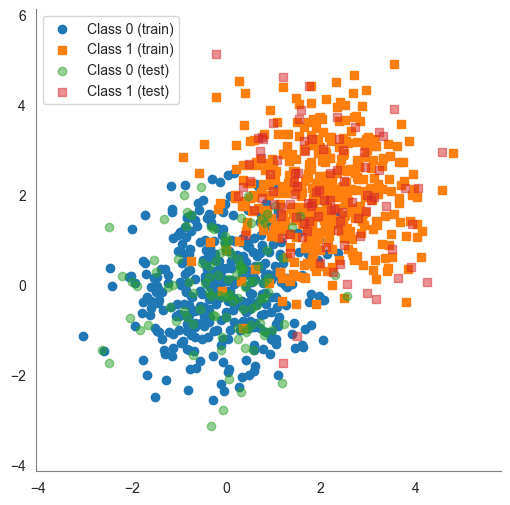
</div>
</div>
<div class="cell docutils container">
<div class="cell_input docutils container">
<div class="highlight-ipython3 notranslate"><div class="highlight"><pre><span></span><span class="k">def</span> <span class="nf">plot_with_boundary</span><span class="p">(</span><span class="n">X</span><span class="p">,</span> <span class="n">y</span><span class="p">,</span> <span class="n">weights</span><span class="p">,</span> <span class="n">b</span><span class="p">):</span>
<span class="w">    </span><span class="sd">&quot;&quot;&quot;</span>
<span class="sd">    Plot the decision boundary of a binary classifier along with the data.</span>

<span class="sd">    Parameters</span>
<span class="sd">    ----------</span>
<span class="sd">    X : ndarray</span>
<span class="sd">        The feature matrix of shape (num_points, 2).</span>
<span class="sd">    y : ndarray</span>
<span class="sd">        The labels of shape (num_points), where each label is either 0 or 1.</span>
<span class="sd">    weights : list or numpy.array of length 2</span>
<span class="sd">        The weights of the decision boundary.</span>
<span class="sd">    b : float</span>
<span class="sd">        The bias term of the decision boundary.</span>
<span class="sd">    &quot;&quot;&quot;</span>
    <span class="n">w1</span><span class="p">,</span> <span class="n">w2</span> <span class="o">=</span> <span class="n">weights</span>
    <span class="n">X</span> <span class="o">=</span> <span class="n">X</span><span class="o">.</span><span class="n">copy</span><span class="p">()</span>
    <span class="n">y</span> <span class="o">=</span> <span class="n">y</span><span class="o">.</span><span class="n">copy</span><span class="p">()</span>
    <span class="n">class0</span> <span class="o">=</span> <span class="n">X</span><span class="p">[</span><span class="n">y</span> <span class="o">==</span> <span class="mi">0</span><span class="p">]</span>
    <span class="n">class1</span> <span class="o">=</span> <span class="n">X</span><span class="p">[</span><span class="n">y</span> <span class="o">==</span> <span class="mi">1</span><span class="p">]</span>
    <span class="n">x_vals</span> <span class="o">=</span> <span class="n">np</span><span class="o">.</span><span class="n">linspace</span><span class="p">(</span><span class="n">X</span><span class="p">[:,</span> <span class="mi">0</span><span class="p">]</span><span class="o">.</span><span class="n">min</span><span class="p">()</span> <span class="o">-</span> <span class="mi">1</span><span class="p">,</span> <span class="n">X</span><span class="p">[:,</span> <span class="mi">0</span><span class="p">]</span><span class="o">.</span><span class="n">max</span><span class="p">()</span> <span class="o">+</span> <span class="mi">1</span><span class="p">,</span> <span class="mi">100</span><span class="p">)</span>
    <span class="k">if</span> <span class="nb">abs</span><span class="p">(</span><span class="n">w2</span><span class="p">)</span> <span class="o">&lt;</span> <span class="mf">1e-6</span><span class="p">:</span>
        <span class="n">y_vals</span> <span class="o">=</span> <span class="n">np</span><span class="o">.</span><span class="n">full_like</span><span class="p">(</span><span class="n">x_vals</span><span class="p">,</span> <span class="o">-</span><span class="n">b</span><span class="p">)</span>  <span class="c1"># Vertical line at -b</span>
    <span class="k">else</span><span class="p">:</span>
        <span class="n">y_vals</span> <span class="o">=</span> <span class="o">-</span><span class="p">(</span><span class="n">w1</span> <span class="o">/</span> <span class="n">w2</span><span class="p">)</span> <span class="o">*</span> <span class="n">x_vals</span> <span class="o">-</span> <span class="p">(</span><span class="n">b</span> <span class="o">/</span> <span class="n">w2</span><span class="p">)</span>

    <span class="c1"># Compute predictions</span>
    <span class="n">predictions</span> <span class="o">=</span> <span class="n">np</span><span class="o">.</span><span class="n">sign</span><span class="p">(</span><span class="n">w1</span> <span class="o">*</span> <span class="n">X</span><span class="p">[:,</span> <span class="mi">0</span><span class="p">]</span> <span class="o">+</span> <span class="n">w2</span> <span class="o">*</span> <span class="n">X</span><span class="p">[:,</span> <span class="mi">1</span><span class="p">]</span> <span class="o">+</span> <span class="n">b</span><span class="p">)</span>
    <span class="n">y</span><span class="p">[</span><span class="n">y</span> <span class="o">==</span> <span class="mi">0</span><span class="p">]</span> <span class="o">=</span> <span class="o">-</span><span class="mi">1</span>
    <span class="n">misclassified</span> <span class="o">=</span> <span class="n">predictions</span> <span class="o">!=</span> <span class="n">y</span>
    <span class="n">accuracy</span> <span class="o">=</span> <span class="n">np</span><span class="o">.</span><span class="n">mean</span><span class="p">(</span><span class="n">predictions</span> <span class="o">==</span> <span class="n">y</span><span class="p">)</span>

    <span class="n">sns</span><span class="o">.</span><span class="n">set_style</span><span class="p">(</span><span class="s1">&#39;white&#39;</span><span class="p">)</span>
    <span class="n">plt</span><span class="o">.</span><span class="n">figure</span><span class="p">(</span><span class="n">figsize</span><span class="o">=</span><span class="p">(</span><span class="mi">6</span><span class="p">,</span> <span class="mi">6</span><span class="p">))</span>
    <span class="n">plt</span><span class="o">.</span><span class="n">scatter</span><span class="p">(</span><span class="n">class0</span><span class="p">[:,</span> <span class="mi">0</span><span class="p">],</span> <span class="n">class0</span><span class="p">[:,</span> <span class="mi">1</span><span class="p">],</span> <span class="n">marker</span><span class="o">=</span><span class="s1">&#39;o&#39;</span><span class="p">,</span> <span class="n">label</span><span class="o">=</span><span class="s1">&#39;Class 0&#39;</span><span class="p">)</span>
    <span class="n">plt</span><span class="o">.</span><span class="n">scatter</span><span class="p">(</span><span class="n">class1</span><span class="p">[:,</span> <span class="mi">0</span><span class="p">],</span> <span class="n">class1</span><span class="p">[:,</span> <span class="mi">1</span><span class="p">],</span> <span class="n">marker</span><span class="o">=</span><span class="s1">&#39;s&#39;</span><span class="p">,</span> <span class="n">label</span><span class="o">=</span><span class="s1">&#39;Class 1&#39;</span><span class="p">)</span>

    <span class="n">plt</span><span class="o">.</span><span class="n">scatter</span><span class="p">(</span><span class="n">X</span><span class="p">[</span><span class="n">misclassified</span><span class="p">,</span> <span class="mi">0</span><span class="p">],</span> <span class="n">X</span><span class="p">[</span><span class="n">misclassified</span><span class="p">,</span> <span class="mi">1</span><span class="p">],</span> 
                <span class="n">color</span><span class="o">=</span><span class="s1">&#39;black&#39;</span><span class="p">,</span> <span class="n">marker</span><span class="o">=</span><span class="s1">&#39;x&#39;</span><span class="p">,</span> <span class="n">s</span><span class="o">=</span><span class="mi">100</span><span class="p">,</span> <span class="n">label</span><span class="o">=</span><span class="s2">&quot;Misclassified&quot;</span><span class="p">)</span>  <span class="c1"># Fix warning</span>
    <span class="n">plt</span><span class="o">.</span><span class="n">plot</span><span class="p">(</span><span class="n">x_vals</span><span class="p">,</span> <span class="n">y_vals</span><span class="p">,</span> <span class="s1">&#39;g--&#39;</span><span class="p">,</span> <span class="n">linewidth</span><span class="o">=</span><span class="mi">2</span><span class="p">)</span>  <span class="c1"># Green dashed line for boundary</span>
    
    <span class="c1"># Compute midpoint of the decision boundary for normal vector placement</span>
    <span class="n">mid_x</span> <span class="o">=</span> <span class="p">(</span><span class="n">X</span><span class="p">[:,</span> <span class="mi">0</span><span class="p">]</span><span class="o">.</span><span class="n">min</span><span class="p">()</span> <span class="o">+</span> <span class="n">X</span><span class="p">[:,</span> <span class="mi">0</span><span class="p">]</span><span class="o">.</span><span class="n">max</span><span class="p">())</span> <span class="o">/</span> <span class="mi">2</span>
    <span class="n">mid_y</span> <span class="o">=</span> <span class="o">-</span><span class="p">(</span><span class="n">w1</span> <span class="o">/</span> <span class="n">w2</span><span class="p">)</span> <span class="o">*</span> <span class="n">mid_x</span> <span class="o">-</span> <span class="p">(</span><span class="n">b</span> <span class="o">/</span> <span class="n">w2</span><span class="p">)</span> <span class="k">if</span> <span class="nb">abs</span><span class="p">(</span><span class="n">w2</span><span class="p">)</span> <span class="o">&gt;</span> <span class="mf">1e-6</span> <span class="k">else</span> <span class="o">-</span><span class="n">b</span>

    <span class="c1"># Normalize normal vector to a fixed length</span>
    <span class="n">normal_length</span> <span class="o">=</span> <span class="mf">1.0</span>
    <span class="n">norm</span> <span class="o">=</span> <span class="n">np</span><span class="o">.</span><span class="n">sqrt</span><span class="p">(</span><span class="n">w1</span><span class="o">**</span><span class="mi">2</span> <span class="o">+</span> <span class="n">w2</span><span class="o">**</span><span class="mi">2</span><span class="p">)</span>
    <span class="k">if</span> <span class="n">norm</span> <span class="o">&gt;</span> <span class="mi">0</span><span class="p">:</span>
        <span class="n">unit_w1</span><span class="p">,</span> <span class="n">unit_w2</span> <span class="o">=</span> <span class="p">(</span><span class="n">w1</span> <span class="o">/</span> <span class="n">norm</span><span class="p">)</span> <span class="o">*</span> <span class="n">normal_length</span><span class="p">,</span> <span class="p">(</span><span class="n">w2</span> <span class="o">/</span> <span class="n">norm</span><span class="p">)</span> <span class="o">*</span> <span class="n">normal_length</span>
        <span class="n">plt</span><span class="o">.</span><span class="n">arrow</span><span class="p">(</span><span class="n">mid_x</span><span class="p">,</span> <span class="n">mid_y</span><span class="p">,</span> <span class="n">unit_w1</span><span class="p">,</span> <span class="n">unit_w2</span><span class="p">,</span> <span class="n">color</span><span class="o">=</span><span class="s1">&#39;purple&#39;</span><span class="p">,</span> <span class="n">head_width</span><span class="o">=</span><span class="mf">0.2</span><span class="p">,</span> <span class="n">head_length</span><span class="o">=</span><span class="mf">0.2</span><span class="p">,</span> <span class="n">label</span><span class="o">=</span><span class="s2">&quot;Normal Vector&quot;</span><span class="p">)</span>
    
    <span class="n">plt</span><span class="o">.</span><span class="n">ylim</span><span class="p">(</span><span class="n">X</span><span class="p">[:,</span> <span class="mi">1</span><span class="p">]</span><span class="o">.</span><span class="n">min</span><span class="p">()</span> <span class="o">-</span> <span class="mi">1</span><span class="p">,</span> <span class="n">X</span><span class="p">[:,</span> <span class="mi">1</span><span class="p">]</span><span class="o">.</span><span class="n">max</span><span class="p">()</span> <span class="o">+</span> <span class="mi">1</span><span class="p">)</span>
    <span class="n">plt</span><span class="o">.</span><span class="n">xlim</span><span class="p">(</span><span class="n">X</span><span class="p">[:,</span> <span class="mi">0</span><span class="p">]</span><span class="o">.</span><span class="n">min</span><span class="p">()</span> <span class="o">-</span> <span class="mi">1</span><span class="p">,</span> <span class="n">X</span><span class="p">[:,</span> <span class="mi">0</span><span class="p">]</span><span class="o">.</span><span class="n">max</span><span class="p">()</span> <span class="o">+</span> <span class="mi">1</span><span class="p">)</span>
    <span class="n">sns</span><span class="o">.</span><span class="n">despine</span><span class="p">()</span>
    <span class="n">plt</span><span class="o">.</span><span class="n">gca</span><span class="p">()</span><span class="o">.</span><span class="n">spines</span><span class="p">[</span><span class="s1">&#39;left&#39;</span><span class="p">]</span><span class="o">.</span><span class="n">set_color</span><span class="p">(</span><span class="s1">&#39;gray&#39;</span><span class="p">)</span>
    <span class="n">plt</span><span class="o">.</span><span class="n">gca</span><span class="p">()</span><span class="o">.</span><span class="n">spines</span><span class="p">[</span><span class="s1">&#39;bottom&#39;</span><span class="p">]</span><span class="o">.</span><span class="n">set_color</span><span class="p">(</span><span class="s1">&#39;gray&#39;</span><span class="p">)</span>
    <span class="n">plt</span><span class="o">.</span><span class="n">title</span><span class="p">(</span><span class="sa">f</span><span class="s2">&quot;Decision Boundary: $</span><span class="si">{</span><span class="n">w1</span><span class="si">:</span><span class="s2">.2f</span><span class="si">}</span><span class="s2">*x_1 + </span><span class="si">{</span><span class="n">w2</span><span class="si">:</span><span class="s2">.2f</span><span class="si">}</span><span class="s2">*x_2 + </span><span class="si">{</span><span class="n">b</span><span class="si">:</span><span class="s2">.2f</span><span class="si">}</span><span class="s2"> = 0$</span><span class="se">\n</span><span class="s2">Accuracy: </span><span class="si">{</span><span class="n">accuracy</span><span class="si">:</span><span class="s2">.2%</span><span class="si">}</span><span class="se">\n</span><span class="s2">&quot;</span><span class="p">)</span>
    <span class="c1"># don&#39;t show the line for the normal vector</span>
    <span class="n">handles</span><span class="p">,</span> <span class="n">labels</span> <span class="o">=</span> <span class="n">plt</span><span class="o">.</span><span class="n">gca</span><span class="p">()</span><span class="o">.</span><span class="n">get_legend_handles_labels</span><span class="p">()</span>
    <span class="n">plt</span><span class="o">.</span><span class="n">legend</span><span class="p">(</span>
        <span class="n">handles</span><span class="o">=</span><span class="n">handles</span><span class="p">[:</span><span class="o">-</span><span class="mi">1</span><span class="p">],</span> 
        <span class="n">labels</span><span class="o">=</span><span class="n">labels</span><span class="p">[:</span><span class="o">-</span><span class="mi">1</span><span class="p">],</span>
        <span class="n">loc</span><span class="o">=</span><span class="s1">&#39;center left&#39;</span><span class="p">,</span> 
        <span class="n">bbox_to_anchor</span><span class="o">=</span><span class="p">(</span><span class="mi">1</span><span class="p">,</span> <span class="mf">0.5</span><span class="p">))</span>
    <span class="n">plt</span><span class="o">.</span><span class="n">show</span><span class="p">()</span>
</pre></div>
</div>
</div>
</div>
<div class="cell docutils container">
<div class="cell_input docutils container">
<div class="highlight-ipython3 notranslate"><div class="highlight"><pre><span></span><span class="k">def</span> <span class="nf">project_point_onto_boundary</span><span class="p">(</span><span class="n">point</span><span class="p">,</span> <span class="n">w</span><span class="p">,</span> <span class="n">b</span><span class="p">):</span>
<span class="w">    </span><span class="sd">&quot;&quot;&quot;</span>
<span class="sd">    Compute the perpendicular projection of a point onto the decision boundary.</span>
<span class="sd">    &quot;&quot;&quot;</span>
    <span class="n">norm_w</span> <span class="o">=</span> <span class="n">w</span> <span class="o">/</span> <span class="n">np</span><span class="o">.</span><span class="n">linalg</span><span class="o">.</span><span class="n">norm</span><span class="p">(</span><span class="n">w</span><span class="p">)</span>
    <span class="n">distance</span> <span class="o">=</span> <span class="p">(</span><span class="n">np</span><span class="o">.</span><span class="n">dot</span><span class="p">(</span><span class="n">point</span><span class="p">,</span> <span class="n">w</span><span class="p">)</span> <span class="o">+</span> <span class="n">b</span><span class="p">)</span> <span class="o">/</span> <span class="n">np</span><span class="o">.</span><span class="n">linalg</span><span class="o">.</span><span class="n">norm</span><span class="p">(</span><span class="n">w</span><span class="p">)</span>
    <span class="n">projection</span> <span class="o">=</span> <span class="n">point</span> <span class="o">-</span> <span class="n">distance</span> <span class="o">*</span> <span class="n">norm_w</span>
    <span class="k">return</span> <span class="n">projection</span>

<span class="c1"># Function to plot dataset and decision boundary with margins</span>
<span class="k">def</span> <span class="nf">plot_with_boundary_and_margin</span><span class="p">(</span><span class="n">X</span><span class="p">,</span> <span class="n">y</span><span class="p">,</span> <span class="n">weights</span><span class="p">,</span> <span class="n">b</span><span class="p">):</span>
<span class="w">    </span><span class="sd">&quot;&quot;&quot;</span>
<span class="sd">    Plot the decision boundary of a binary classifier along with the data and margins, and include the margin distance of each point.</span>
<span class="sd">    &quot;&quot;&quot;</span>

    <span class="c1"># Function to calculate the margin (distance) of each data point to the decision boundary</span>
    <span class="k">def</span> <span class="nf">calculate_margin</span><span class="p">(</span><span class="n">X</span><span class="p">,</span> <span class="n">w</span><span class="p">,</span> <span class="n">b</span><span class="p">):</span>
        <span class="k">return</span> <span class="n">np</span><span class="o">.</span><span class="n">abs</span><span class="p">(</span><span class="n">X</span><span class="o">.</span><span class="n">dot</span><span class="p">(</span><span class="n">w</span><span class="p">)</span> <span class="o">+</span> <span class="n">b</span><span class="p">)</span> <span class="o">/</span> <span class="n">np</span><span class="o">.</span><span class="n">linalg</span><span class="o">.</span><span class="n">norm</span><span class="p">(</span><span class="n">w</span><span class="p">)</span>
    <span class="n">X</span> <span class="o">=</span> <span class="n">X</span><span class="o">.</span><span class="n">copy</span><span class="p">()</span>
    <span class="n">y</span> <span class="o">=</span> <span class="n">y</span><span class="o">.</span><span class="n">copy</span><span class="p">()</span>
    <span class="n">w1</span><span class="p">,</span> <span class="n">w2</span> <span class="o">=</span> <span class="n">weights</span>
    <span class="n">class0</span> <span class="o">=</span> <span class="n">X</span><span class="p">[</span><span class="n">y</span> <span class="o">==</span> <span class="mi">0</span><span class="p">]</span>
    <span class="n">class1</span> <span class="o">=</span> <span class="n">X</span><span class="p">[</span><span class="n">y</span> <span class="o">==</span> <span class="mi">1</span><span class="p">]</span>
    <span class="n">x_vals</span> <span class="o">=</span> <span class="n">np</span><span class="o">.</span><span class="n">linspace</span><span class="p">(</span><span class="n">X</span><span class="p">[:,</span> <span class="mi">0</span><span class="p">]</span><span class="o">.</span><span class="n">min</span><span class="p">()</span> <span class="o">-</span> <span class="mi">1</span><span class="p">,</span> <span class="n">X</span><span class="p">[:,</span> <span class="mi">0</span><span class="p">]</span><span class="o">.</span><span class="n">max</span><span class="p">()</span> <span class="o">+</span> <span class="mi">1</span><span class="p">,</span> <span class="mi">100</span><span class="p">)</span>
    <span class="k">if</span> <span class="nb">abs</span><span class="p">(</span><span class="n">w2</span><span class="p">)</span> <span class="o">&lt;</span> <span class="mf">1e-6</span><span class="p">:</span>
        <span class="n">y_vals</span> <span class="o">=</span> <span class="n">np</span><span class="o">.</span><span class="n">full_like</span><span class="p">(</span><span class="n">x_vals</span><span class="p">,</span> <span class="o">-</span><span class="n">b</span><span class="p">)</span>  <span class="c1"># Vertical line at -b</span>
    <span class="k">else</span><span class="p">:</span>
        <span class="n">y_vals</span> <span class="o">=</span> <span class="o">-</span><span class="p">(</span><span class="n">w1</span> <span class="o">/</span> <span class="n">w2</span><span class="p">)</span> <span class="o">*</span> <span class="n">x_vals</span> <span class="o">-</span> <span class="p">(</span><span class="n">b</span> <span class="o">/</span> <span class="n">w2</span><span class="p">)</span>

    <span class="c1"># Compute predictions</span>
    <span class="n">predictions</span> <span class="o">=</span> <span class="n">np</span><span class="o">.</span><span class="n">sign</span><span class="p">(</span><span class="n">w1</span> <span class="o">*</span> <span class="n">X</span><span class="p">[:,</span> <span class="mi">0</span><span class="p">]</span> <span class="o">+</span> <span class="n">w2</span> <span class="o">*</span> <span class="n">X</span><span class="p">[:,</span> <span class="mi">1</span><span class="p">]</span> <span class="o">+</span> <span class="n">b</span><span class="p">)</span>
    <span class="n">y</span><span class="p">[</span><span class="n">y</span> <span class="o">==</span> <span class="mi">0</span><span class="p">]</span> <span class="o">=</span> <span class="o">-</span><span class="mi">1</span>
    <span class="n">misclassified</span> <span class="o">=</span> <span class="n">predictions</span> <span class="o">!=</span> <span class="n">y</span>
    <span class="n">accuracy</span> <span class="o">=</span> <span class="n">np</span><span class="o">.</span><span class="n">mean</span><span class="p">(</span><span class="n">predictions</span> <span class="o">==</span> <span class="n">y</span><span class="p">)</span>

    <span class="n">sns</span><span class="o">.</span><span class="n">set_style</span><span class="p">(</span><span class="s1">&#39;white&#39;</span><span class="p">)</span>
    <span class="n">plt</span><span class="o">.</span><span class="n">figure</span><span class="p">(</span><span class="n">figsize</span><span class="o">=</span><span class="p">(</span><span class="mi">6</span><span class="p">,</span> <span class="mi">6</span><span class="p">))</span>
    <span class="n">plt</span><span class="o">.</span><span class="n">scatter</span><span class="p">(</span><span class="n">class0</span><span class="p">[:,</span> <span class="mi">0</span><span class="p">],</span> <span class="n">class0</span><span class="p">[:,</span> <span class="mi">1</span><span class="p">],</span> <span class="n">marker</span><span class="o">=</span><span class="s1">&#39;o&#39;</span><span class="p">,</span> <span class="n">label</span><span class="o">=</span><span class="s1">&#39;Class 0&#39;</span><span class="p">)</span>
    <span class="n">plt</span><span class="o">.</span><span class="n">scatter</span><span class="p">(</span><span class="n">class1</span><span class="p">[:,</span> <span class="mi">0</span><span class="p">],</span> <span class="n">class1</span><span class="p">[:,</span> <span class="mi">1</span><span class="p">],</span> <span class="n">marker</span><span class="o">=</span><span class="s1">&#39;s&#39;</span><span class="p">,</span> <span class="n">label</span><span class="o">=</span><span class="s1">&#39;Class 1&#39;</span><span class="p">)</span>
    
    <span class="n">plt</span><span class="o">.</span><span class="n">scatter</span><span class="p">(</span><span class="n">X</span><span class="p">[</span><span class="n">misclassified</span><span class="p">,</span> <span class="mi">0</span><span class="p">],</span> <span class="n">X</span><span class="p">[</span><span class="n">misclassified</span><span class="p">,</span> <span class="mi">1</span><span class="p">],</span> 
                <span class="n">color</span><span class="o">=</span><span class="s1">&#39;black&#39;</span><span class="p">,</span> <span class="n">marker</span><span class="o">=</span><span class="s1">&#39;x&#39;</span><span class="p">,</span> <span class="n">s</span><span class="o">=</span><span class="mi">100</span><span class="p">,</span> <span class="n">label</span><span class="o">=</span><span class="s2">&quot;Misclassified&quot;</span><span class="p">)</span>
    <span class="n">plt</span><span class="o">.</span><span class="n">plot</span><span class="p">(</span><span class="n">x_vals</span><span class="p">,</span> <span class="n">y_vals</span><span class="p">,</span> <span class="s1">&#39;g--&#39;</span><span class="p">,</span> <span class="n">linewidth</span><span class="o">=</span><span class="mi">2</span><span class="p">)</span>  <span class="c1"># Green dashed line for boundary</span>
    
    <span class="c1"># Compute margin lines</span>
    <span class="n">margins</span> <span class="o">=</span> <span class="n">calculate_margin</span><span class="p">(</span><span class="n">X</span><span class="p">,</span> <span class="n">np</span><span class="o">.</span><span class="n">array</span><span class="p">([</span><span class="n">w1</span><span class="p">,</span> <span class="n">w2</span><span class="p">]),</span> <span class="n">b</span><span class="p">)</span>
    <span class="n">margin_lines</span> <span class="o">=</span> <span class="p">[(</span><span class="n">X</span><span class="p">[</span><span class="n">i</span><span class="p">],</span> <span class="n">project_point_onto_boundary</span><span class="p">(</span><span class="n">X</span><span class="p">[</span><span class="n">i</span><span class="p">],</span> <span class="n">np</span><span class="o">.</span><span class="n">array</span><span class="p">([</span><span class="n">w1</span><span class="p">,</span> <span class="n">w2</span><span class="p">]),</span> <span class="n">b</span><span class="p">))</span> <span class="k">for</span> <span class="n">i</span> <span class="ow">in</span> <span class="nb">range</span><span class="p">(</span><span class="nb">len</span><span class="p">(</span><span class="n">X</span><span class="p">))]</span>
    
    <span class="k">for</span> <span class="n">i</span><span class="p">,</span> <span class="p">(</span><span class="n">point</span><span class="p">,</span> <span class="n">proj</span><span class="p">)</span> <span class="ow">in</span> <span class="nb">enumerate</span><span class="p">(</span><span class="n">margin_lines</span><span class="p">):</span>
        <span class="n">plt</span><span class="o">.</span><span class="n">plot</span><span class="p">([</span><span class="n">point</span><span class="p">[</span><span class="mi">0</span><span class="p">],</span> <span class="n">proj</span><span class="p">[</span><span class="mi">0</span><span class="p">]],</span> <span class="p">[</span><span class="n">point</span><span class="p">[</span><span class="mi">1</span><span class="p">],</span> <span class="n">proj</span><span class="p">[</span><span class="mi">1</span><span class="p">]],</span> <span class="s1">&#39;orange&#39;</span><span class="p">,</span> <span class="n">linestyle</span><span class="o">=</span><span class="s1">&#39;dotted&#39;</span><span class="p">,</span> <span class="n">alpha</span><span class="o">=</span><span class="mf">0.7</span><span class="p">)</span>
        <span class="n">plt</span><span class="o">.</span><span class="n">text</span><span class="p">(</span><span class="n">point</span><span class="p">[</span><span class="mi">0</span><span class="p">],</span> <span class="n">point</span><span class="p">[</span><span class="mi">1</span><span class="p">],</span> <span class="sa">f</span><span class="s1">&#39;</span><span class="si">{</span><span class="n">margins</span><span class="p">[</span><span class="n">i</span><span class="p">]</span><span class="si">:</span><span class="s1">.2f</span><span class="si">}</span><span class="s1">&#39;</span><span class="p">,</span> <span class="n">fontsize</span><span class="o">=</span><span class="mi">9</span><span class="p">,</span> <span class="n">verticalalignment</span><span class="o">=</span><span class="s1">&#39;bottom&#39;</span><span class="p">,</span> <span class="n">horizontalalignment</span><span class="o">=</span><span class="s1">&#39;right&#39;</span><span class="p">,</span> <span class="n">color</span><span class="o">=</span><span class="s1">&#39;black&#39;</span><span class="p">)</span>
    
    <span class="c1"># Compute midpoint of the decision boundary for normal vector placement</span>
    <span class="n">mid_x</span> <span class="o">=</span> <span class="p">(</span><span class="n">X</span><span class="p">[:,</span> <span class="mi">0</span><span class="p">]</span><span class="o">.</span><span class="n">min</span><span class="p">()</span> <span class="o">+</span> <span class="n">X</span><span class="p">[:,</span> <span class="mi">0</span><span class="p">]</span><span class="o">.</span><span class="n">max</span><span class="p">())</span> <span class="o">/</span> <span class="mi">2</span>
    <span class="n">mid_y</span> <span class="o">=</span> <span class="o">-</span><span class="p">(</span><span class="n">w1</span> <span class="o">/</span> <span class="n">w2</span><span class="p">)</span> <span class="o">*</span> <span class="n">mid_x</span> <span class="o">-</span> <span class="p">(</span><span class="n">b</span> <span class="o">/</span> <span class="n">w2</span><span class="p">)</span> <span class="k">if</span> <span class="nb">abs</span><span class="p">(</span><span class="n">w2</span><span class="p">)</span> <span class="o">&gt;</span> <span class="mf">1e-6</span> <span class="k">else</span> <span class="o">-</span><span class="n">b</span>

    <span class="c1"># Normalize normal vector to a fixed length</span>
    <span class="n">normal_length</span> <span class="o">=</span> <span class="mf">1.0</span>
    <span class="n">norm</span> <span class="o">=</span> <span class="n">np</span><span class="o">.</span><span class="n">sqrt</span><span class="p">(</span><span class="n">w1</span><span class="o">**</span><span class="mi">2</span> <span class="o">+</span> <span class="n">w2</span><span class="o">**</span><span class="mi">2</span><span class="p">)</span>
    <span class="k">if</span> <span class="n">norm</span> <span class="o">&gt;</span> <span class="mi">0</span><span class="p">:</span>
        <span class="n">unit_w1</span><span class="p">,</span> <span class="n">unit_w2</span> <span class="o">=</span> <span class="p">(</span><span class="n">w1</span> <span class="o">/</span> <span class="n">norm</span><span class="p">)</span> <span class="o">*</span> <span class="n">normal_length</span><span class="p">,</span> <span class="p">(</span><span class="n">w2</span> <span class="o">/</span> <span class="n">norm</span><span class="p">)</span> <span class="o">*</span> <span class="n">normal_length</span>
        <span class="n">plt</span><span class="o">.</span><span class="n">arrow</span><span class="p">(</span><span class="n">mid_x</span><span class="p">,</span> <span class="n">mid_y</span><span class="p">,</span> <span class="n">unit_w1</span><span class="p">,</span> <span class="n">unit_w2</span><span class="p">,</span> <span class="n">color</span><span class="o">=</span><span class="s1">&#39;purple&#39;</span><span class="p">,</span> <span class="n">head_width</span><span class="o">=</span><span class="mf">0.2</span><span class="p">,</span> <span class="n">head_length</span><span class="o">=</span><span class="mf">0.2</span><span class="p">,</span> <span class="n">label</span><span class="o">=</span><span class="s2">&quot;Normal Vector&quot;</span><span class="p">)</span>
    
    <span class="n">plt</span><span class="o">.</span><span class="n">ylim</span><span class="p">(</span><span class="n">X</span><span class="p">[:,</span> <span class="mi">1</span><span class="p">]</span><span class="o">.</span><span class="n">min</span><span class="p">()</span> <span class="o">-</span> <span class="mi">1</span><span class="p">,</span> <span class="n">X</span><span class="p">[:,</span> <span class="mi">1</span><span class="p">]</span><span class="o">.</span><span class="n">max</span><span class="p">()</span> <span class="o">+</span> <span class="mi">1</span><span class="p">)</span>
    <span class="n">plt</span><span class="o">.</span><span class="n">xlim</span><span class="p">(</span><span class="n">X</span><span class="p">[:,</span> <span class="mi">0</span><span class="p">]</span><span class="o">.</span><span class="n">min</span><span class="p">()</span> <span class="o">-</span> <span class="mi">1</span><span class="p">,</span> <span class="n">X</span><span class="p">[:,</span> <span class="mi">0</span><span class="p">]</span><span class="o">.</span><span class="n">max</span><span class="p">()</span> <span class="o">+</span> <span class="mi">1</span><span class="p">)</span>
    <span class="n">sns</span><span class="o">.</span><span class="n">despine</span><span class="p">()</span>
    <span class="n">plt</span><span class="o">.</span><span class="n">gca</span><span class="p">()</span><span class="o">.</span><span class="n">spines</span><span class="p">[</span><span class="s1">&#39;left&#39;</span><span class="p">]</span><span class="o">.</span><span class="n">set_color</span><span class="p">(</span><span class="s1">&#39;gray&#39;</span><span class="p">)</span>
    <span class="n">plt</span><span class="o">.</span><span class="n">gca</span><span class="p">()</span><span class="o">.</span><span class="n">spines</span><span class="p">[</span><span class="s1">&#39;bottom&#39;</span><span class="p">]</span><span class="o">.</span><span class="n">set_color</span><span class="p">(</span><span class="s1">&#39;gray&#39;</span><span class="p">)</span>
    <span class="n">plt</span><span class="o">.</span><span class="n">title</span><span class="p">(</span><span class="sa">f</span><span class="s2">&quot;Decision Boundary: $</span><span class="si">{</span><span class="n">w1</span><span class="si">:</span><span class="s2">.2f</span><span class="si">}</span><span class="s2">*x_1 + </span><span class="si">{</span><span class="n">w2</span><span class="si">:</span><span class="s2">.2f</span><span class="si">}</span><span class="s2">*x_2 + </span><span class="si">{</span><span class="n">b</span><span class="si">:</span><span class="s2">.2f</span><span class="si">}</span><span class="s2"> = 0$</span><span class="se">\n</span><span class="s2"> Accuracy: </span><span class="si">{</span><span class="n">accuracy</span><span class="si">:</span><span class="s2">.2%</span><span class="si">}</span><span class="s2">&quot;</span><span class="p">)</span>
    
    <span class="n">handles</span><span class="p">,</span> <span class="n">labels</span> <span class="o">=</span> <span class="n">plt</span><span class="o">.</span><span class="n">gca</span><span class="p">()</span><span class="o">.</span><span class="n">get_legend_handles_labels</span><span class="p">()</span>
    <span class="n">plt</span><span class="o">.</span><span class="n">legend</span><span class="p">(</span>
        <span class="n">handles</span><span class="o">=</span><span class="n">handles</span><span class="p">[:</span><span class="o">-</span><span class="mi">1</span><span class="p">],</span> 
        <span class="n">labels</span><span class="o">=</span><span class="n">labels</span><span class="p">[:</span><span class="o">-</span><span class="mi">1</span><span class="p">],</span>
        <span class="n">loc</span><span class="o">=</span><span class="s1">&#39;center left&#39;</span><span class="p">,</span> 
        <span class="n">bbox_to_anchor</span><span class="o">=</span><span class="p">(</span><span class="mi">1</span><span class="p">,</span> <span class="mf">0.5</span><span class="p">))</span>
    <span class="n">plt</span><span class="o">.</span><span class="n">show</span><span class="p">()</span>
</pre></div>
</div>
</div>
</div>
</section>
<section id="random-search-a-baseline-approach">
<h2>Random Search: A Baseline Approach<a class="headerlink" href="#random-search-a-baseline-approach" title="Link to this heading">#</a></h2>
<p>The simplest way to find a decision boundary is through <strong>random search</strong>. In this approach, we randomly generate weight vectors and biases multiple times and select the one that yields the
highest accuracy on the training data.</p>
<p>This method is inefficient and does not guarantee an optimal solution, but it serves as a useful baseline to compare against more sophisticated learning algorithms. By understanding its limitations, we can better appreciate the advantages of other algorithms.</p>
<div class="cell docutils container">
<div class="cell_input docutils container">
<div class="highlight-ipython3 notranslate"><div class="highlight"><pre><span></span><span class="n">X</span> <span class="o">=</span> <span class="n">np</span><span class="o">.</span><span class="n">array</span><span class="p">([[</span><span class="mi">0</span><span class="p">,</span> <span class="o">-</span><span class="mf">0.5</span><span class="p">],</span> <span class="p">[</span><span class="o">-</span><span class="mi">1</span><span class="p">,</span> <span class="mi">10</span><span class="p">],</span> <span class="p">[</span><span class="mi">1</span><span class="p">,</span> <span class="mi">2</span><span class="p">]])</span>
<span class="n">w</span> <span class="o">=</span> <span class="n">np</span><span class="o">.</span><span class="n">array</span><span class="p">([</span><span class="mi">1</span><span class="p">,</span> <span class="mf">0.5</span><span class="p">])</span>
<span class="n">np</span><span class="o">.</span><span class="n">dot</span><span class="p">(</span><span class="n">X</span><span class="p">,</span> <span class="n">w</span><span class="p">)</span>
</pre></div>
</div>
</div>
<div class="cell_output docutils container">
<div class="output text_plain highlight-myst-ansi notranslate"><div class="highlight"><pre><span></span>array([-0.25,  4.  ,  2.  ])
</pre></div>
</div>
</div>
</div>
<div class="cell docutils container">
<div class="cell_input docutils container">
<div class="highlight-ipython3 notranslate"><div class="highlight"><pre><span></span><span class="k">def</span> <span class="nf">evaluate_accuracy</span><span class="p">(</span><span class="n">y_true</span><span class="p">,</span> <span class="n">y_pred</span><span class="p">):</span>
<span class="w">    </span><span class="sd">&quot;&quot;&quot;</span>
<span class="sd">    Computes the classification accuracy, which is the proportion of </span>
<span class="sd">    correctly predicted labels.</span>
<span class="sd">    &quot;&quot;&quot;</span>
    <span class="k">return</span> <span class="n">np</span><span class="o">.</span><span class="n">mean</span><span class="p">(</span><span class="n">y_true</span> <span class="o">==</span> <span class="n">y_pred</span><span class="p">)</span>

<span class="k">def</span> <span class="nf">train_random_search</span><span class="p">(</span><span class="n">X_train</span><span class="p">,</span> <span class="n">y_train</span><span class="p">,</span> <span class="n">num_trials</span><span class="o">=</span><span class="mi">1000</span><span class="p">):</span>
<span class="w">    </span><span class="sd">&quot;&quot;&quot;</span>
<span class="sd">    Performs random search to find a linear decision boundary. </span>
<span class="sd">    The function generates random weight vectors and biases, evaluates accuracy, and selects the best-performing model.</span>

<span class="sd">    &quot;&quot;&quot;</span>

    <span class="n">best_w</span><span class="p">,</span> <span class="n">best_b</span> <span class="o">=</span> <span class="kc">None</span><span class="p">,</span> <span class="kc">None</span>
    <span class="n">best_accuracy</span> <span class="o">=</span> <span class="mi">0</span>  <span class="c1"># Start with the lowest possible accuracy</span>
    
    <span class="k">for</span> <span class="n">_</span> <span class="ow">in</span> <span class="nb">range</span><span class="p">(</span><span class="n">num_trials</span><span class="p">):</span>
        <span class="n">w</span> <span class="o">=</span> <span class="n">np</span><span class="o">.</span><span class="n">random</span><span class="o">.</span><span class="n">randn</span><span class="p">(</span><span class="mi">2</span><span class="p">)</span>  <span class="c1"># Random weight vector</span>
        <span class="n">b</span> <span class="o">=</span> <span class="n">np</span><span class="o">.</span><span class="n">random</span><span class="o">.</span><span class="n">randn</span><span class="p">()</span>  <span class="c1"># Random bias</span>
        
        <span class="n">scores</span> <span class="o">=</span> <span class="n">X_train</span><span class="o">.</span><span class="n">dot</span><span class="p">(</span><span class="n">w</span><span class="p">)</span> <span class="o">+</span> <span class="n">b</span>
        <span class="n">y_pred</span> <span class="o">=</span> <span class="p">(</span><span class="n">scores</span> <span class="o">&gt;=</span> <span class="mi">0</span><span class="p">)</span><span class="o">.</span><span class="n">astype</span><span class="p">(</span><span class="nb">int</span><span class="p">)</span> 
        
        <span class="n">accuracy</span> <span class="o">=</span> <span class="n">np</span><span class="o">.</span><span class="n">mean</span><span class="p">(</span><span class="n">y_train</span> <span class="o">==</span> <span class="n">y_pred</span><span class="p">)</span>
        
        <span class="k">if</span> <span class="n">accuracy</span> <span class="o">&gt;</span> <span class="n">best_accuracy</span><span class="p">:</span>
            <span class="n">best_accuracy</span> <span class="o">=</span> <span class="n">accuracy</span>
            <span class="n">best_w</span> <span class="o">=</span> <span class="n">w</span>
            <span class="n">best_b</span> <span class="o">=</span> <span class="n">b</span>
    
    <span class="k">def</span> <span class="nf">model</span><span class="p">(</span><span class="n">X_new</span><span class="p">):</span>
        <span class="n">scores</span> <span class="o">=</span> <span class="n">X_new</span><span class="o">.</span><span class="n">dot</span><span class="p">(</span><span class="n">best_w</span><span class="p">)</span> <span class="o">+</span> <span class="n">best_b</span>
        <span class="k">return</span> <span class="p">(</span><span class="n">scores</span> <span class="o">&gt;=</span> <span class="mi">0</span><span class="p">)</span><span class="o">.</span><span class="n">astype</span><span class="p">(</span><span class="nb">int</span><span class="p">)</span>  
    
    <span class="k">return</span> <span class="n">model</span><span class="p">,</span> <span class="n">best_w</span><span class="p">,</span> <span class="n">best_b</span><span class="p">,</span> <span class="n">best_accuracy</span>
</pre></div>
</div>
</div>
</div>
<div class="cell docutils container">
<div class="cell_input docutils container">
<div class="highlight-ipython3 notranslate"><div class="highlight"><pre><span></span><span class="n">num_points</span> <span class="o">=</span> <span class="mi">1000</span>
<span class="n">X</span><span class="p">,</span> <span class="n">y</span> <span class="o">=</span> <span class="n">generate_labeled_data</span><span class="p">(</span>
    <span class="n">class0_center</span><span class="o">=</span><span class="p">[</span><span class="o">-</span><span class="mi">1</span><span class="p">,</span> <span class="o">-</span><span class="mi">1</span><span class="p">],</span> 
    <span class="n">class1_center</span><span class="o">=</span><span class="p">[</span><span class="mi">1</span><span class="p">,</span> <span class="mi">1</span><span class="p">],</span> 
    <span class="n">num_points</span><span class="o">=</span><span class="n">num_points</span><span class="p">)</span>

<span class="c1"># Split data into training and testing sets</span>
<span class="n">split_idx</span> <span class="o">=</span> <span class="nb">int</span><span class="p">(</span><span class="mf">0.8</span> <span class="o">*</span> <span class="n">num_points</span><span class="p">)</span>
<span class="n">X_train</span><span class="p">,</span> <span class="n">X_test</span> <span class="o">=</span> <span class="n">X</span><span class="p">[:</span><span class="n">split_idx</span><span class="p">],</span> <span class="n">X</span><span class="p">[</span><span class="n">split_idx</span><span class="p">:]</span>
<span class="n">y_train</span><span class="p">,</span> <span class="n">y_test</span> <span class="o">=</span> <span class="n">y</span><span class="p">[:</span><span class="n">split_idx</span><span class="p">],</span> <span class="n">y</span><span class="p">[</span><span class="n">split_idx</span><span class="p">:]</span>

<span class="c1"># Train the random search model</span>
<span class="n">random_model</span><span class="p">,</span> <span class="n">best_w</span><span class="p">,</span> <span class="n">best_b</span><span class="p">,</span> <span class="n">best_accuracy</span> <span class="o">=</span> <span class="n">train_random_search</span><span class="p">(</span><span class="n">X_train</span><span class="p">,</span> <span class="n">y_train</span><span class="p">,</span> <span class="n">num_trials</span> <span class="o">=</span> <span class="mi">10000</span><span class="p">)</span>

<span class="nb">print</span><span class="p">(</span><span class="sa">f</span><span class="s2">&quot;Best weights: </span><span class="si">{</span><span class="n">best_w</span><span class="si">}</span><span class="s2">,</span><span class="se">\n</span><span class="s2">Best bias: </span><span class="si">{</span><span class="n">best_b</span><span class="si">}</span><span class="s2">,</span><span class="se">\n</span><span class="s2">Best accuracy: </span><span class="si">{</span><span class="n">best_accuracy</span><span class="si">}</span><span class="s2">&quot;</span><span class="p">)</span>

<span class="c1"># Evaluate the model on the test set</span>
<span class="n">y_pred</span> <span class="o">=</span> <span class="n">random_model</span><span class="p">(</span><span class="n">X_test</span><span class="p">)</span>
<span class="n">test_accuracy</span> <span class="o">=</span> <span class="n">evaluate_accuracy</span><span class="p">(</span><span class="n">y_test</span><span class="p">,</span> <span class="n">y_pred</span><span class="p">)</span>
<span class="nb">print</span><span class="p">(</span><span class="sa">f</span><span class="s2">&quot;Test accuracy: </span><span class="si">{</span><span class="n">test_accuracy</span><span class="si">}</span><span class="s2">&quot;</span><span class="p">)</span>

<span class="c1"># concatenate X_train and X_test and the labels   </span>
<span class="n">X</span> <span class="o">=</span> <span class="n">np</span><span class="o">.</span><span class="n">concatenate</span><span class="p">((</span><span class="n">X_train</span><span class="p">,</span> <span class="n">X_test</span><span class="p">),</span> <span class="n">axis</span><span class="o">=</span><span class="mi">0</span><span class="p">)</span>
<span class="n">y</span> <span class="o">=</span> <span class="n">np</span><span class="o">.</span><span class="n">concatenate</span><span class="p">((</span><span class="n">y_train</span><span class="p">,</span> <span class="n">y_test</span><span class="p">),</span> <span class="n">axis</span><span class="o">=</span><span class="mi">0</span><span class="p">)</span>
<span class="n">plot_with_boundary</span><span class="p">(</span><span class="n">X</span><span class="p">,</span> <span class="n">y</span><span class="p">,</span> <span class="n">best_w</span><span class="p">,</span> <span class="n">best_b</span><span class="p">)</span>
</pre></div>
</div>
</div>
<div class="cell_output docutils container">
<div class="output stream highlight-myst-ansi notranslate"><div class="highlight"><pre><span></span>Best weights: [0.945692   1.13400029],
Best bias: -0.13288992286356568,
Best accuracy: 0.94375
Test accuracy: 0.91
</pre></div>
</div>
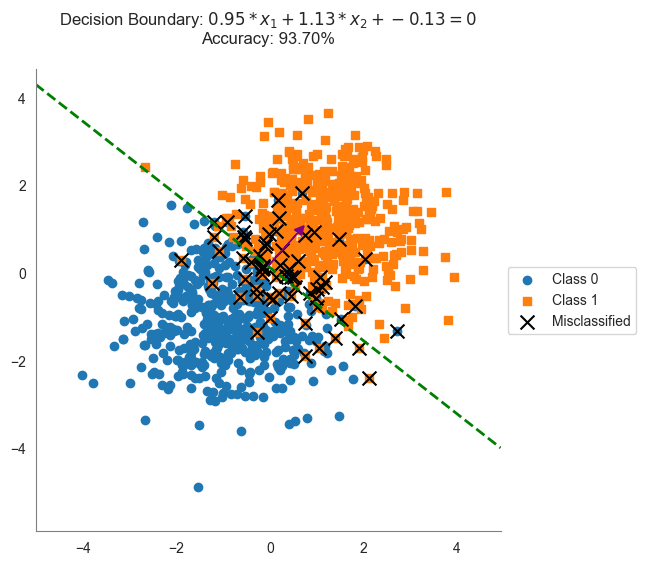
</div>
</div>
<p>A key limitation of the random search approach is that it requires a large number of random samples to find a good solution. Even then, it may not identify the <strong>optimal</strong> decision boundary.</p>
<p>To illustrate this, consider a simple example where two classes are linearly separable. Ideally, a perfect classifier should achieve 100% accuracy. However, since random search relies on trial and error, it may fail to find this optimal boundary, even with a large number of trials.</p>
<div class="cell docutils container">
<div class="cell_input docutils container">
<div class="highlight-ipython3 notranslate"><div class="highlight"><pre><span></span><span class="n">X1</span> <span class="o">=</span> <span class="n">np</span><span class="o">.</span><span class="n">array</span><span class="p">([</span>
    <span class="p">[</span><span class="o">-</span><span class="mi">1</span><span class="p">,</span> <span class="o">-</span><span class="mi">1</span><span class="p">],</span> <span class="p">[</span><span class="o">-</span><span class="mi">2</span><span class="p">,</span> <span class="o">-</span><span class="mf">1.5</span><span class="p">],</span> <span class="p">[</span><span class="o">-</span><span class="mf">1.5</span><span class="p">,</span> <span class="o">-</span><span class="mi">2</span><span class="p">],</span> <span class="p">[</span><span class="o">-</span><span class="mf">0.75</span><span class="p">,</span> <span class="o">-</span><span class="mf">2.5</span><span class="p">],</span> <span class="p">[</span><span class="o">-</span><span class="mi">3</span><span class="p">,</span> <span class="o">-</span><span class="mf">1.5</span><span class="p">],</span>  <span class="c1"># Class 0</span>
    <span class="p">[</span><span class="mi">1</span><span class="p">,</span> <span class="mi">1</span><span class="p">],</span> <span class="p">[</span><span class="mf">2.25</span><span class="p">,</span> <span class="mf">1.5</span><span class="p">],</span> <span class="p">[</span><span class="mf">1.5</span><span class="p">,</span> <span class="mi">2</span><span class="p">],</span> <span class="p">[</span><span class="mf">0.5</span><span class="p">,</span> <span class="mf">2.5</span><span class="p">],</span> <span class="p">[</span><span class="mf">1.8</span><span class="p">,</span> <span class="mf">1.5</span><span class="p">]</span>  <span class="c1"># Class 1</span>
<span class="p">])</span>
<span class="n">y1</span> <span class="o">=</span> <span class="n">np</span><span class="o">.</span><span class="n">array</span><span class="p">([</span><span class="mi">0</span><span class="p">,</span> <span class="mi">0</span><span class="p">,</span> <span class="mi">0</span><span class="p">,</span> <span class="mi">0</span><span class="p">,</span> <span class="mi">0</span><span class="p">,</span> <span class="mi">1</span><span class="p">,</span> <span class="mi">1</span><span class="p">,</span> <span class="mi">1</span><span class="p">,</span> <span class="mi">1</span><span class="p">,</span> <span class="mi">1</span><span class="p">])</span>  <span class="c1"># Labels</span>

<span class="n">random_model</span><span class="p">,</span> <span class="n">best_w</span><span class="p">,</span> <span class="n">best_b</span><span class="p">,</span> <span class="n">best_accuracy</span> <span class="o">=</span> <span class="n">train_random_search</span><span class="p">(</span><span class="n">X1</span><span class="p">,</span> <span class="n">y1</span><span class="p">,</span> <span class="n">num_trials</span><span class="o">=</span><span class="mi">5</span><span class="p">)</span>

<span class="n">plot_with_boundary</span><span class="p">(</span><span class="n">X1</span><span class="p">,</span> <span class="n">y1</span><span class="p">,</span> <span class="n">best_w</span><span class="p">,</span> <span class="n">best_b</span><span class="p">)</span>
</pre></div>
</div>
</div>
<div class="cell_output docutils container">
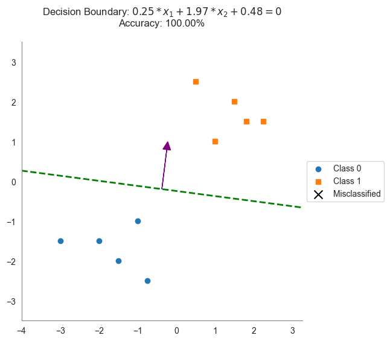
</div>
</div>
</section>
<section id="perceptron-algorithm">
<h2>Perceptron Algorithm<a class="headerlink" href="#perceptron-algorithm" title="Link to this heading">#</a></h2>
<p>While random search provides a basic way to find a decision boundary, it does not learn from the data.  The <strong>Perceptron Algorithm</strong>, introduced by Frank Rosenblatt in 1958, is one of the earliest learning
algorithms that iteratively improves its decision boundary.</p>
<p>Unlike random search, the Perceptron algorithm adjusts its weights systematically. It starts with random weights and updates them each time a misclassified point is encountered. This process continues until all
points are correctly classified (if the data is linearly separable).</p>
<p>The key idea behind the Perceptron is simple:</p>
<ul class="simple">
<li><p>If a point is <strong>correctly classified</strong>, do nothing.</p></li>
<li><p>If a point is <strong>misclassified</strong>, adjust the weight vector to move the boundary in the right direction.</p></li>
</ul>
<p>The Perceptron algorithm is guaranteed to converge if the data is linearly separable. However, if the data is not linearly separable, the algorithm will not converge, and the weights will continue to update indefinitely.</p>
<div class="cell docutils container">
<div class="cell_input docutils container">
<div class="highlight-ipython3 notranslate"><div class="highlight"><pre><span></span><span class="k">def</span> <span class="nf">train_perceptron</span><span class="p">(</span><span class="n">X</span><span class="p">,</span> <span class="n">y</span><span class="p">,</span> <span class="n">max_iters</span><span class="o">=</span><span class="mi">1000</span><span class="p">):</span>
<span class="w">    </span><span class="sd">&quot;&quot;&quot;</span>
<span class="sd">    Use the perceptron algorithm to find a linear decision boundary.</span>
<span class="sd">    &quot;&quot;&quot;</span>
    
    <span class="n">w</span> <span class="o">=</span> <span class="n">np</span><span class="o">.</span><span class="n">zeros</span><span class="p">(</span><span class="n">X</span><span class="o">.</span><span class="n">shape</span><span class="p">[</span><span class="mi">1</span><span class="p">])</span>  <span class="c1"># Initialize weight vector</span>
    <span class="n">b</span> <span class="o">=</span> <span class="mi">0</span>  <span class="c1"># Initialize bias</span>
    <span class="n">y</span> <span class="o">=</span> <span class="n">np</span><span class="o">.</span><span class="n">where</span><span class="p">(</span><span class="n">y</span> <span class="o">==</span> <span class="mi">0</span><span class="p">,</span> <span class="o">-</span><span class="mi">1</span><span class="p">,</span> <span class="mi">1</span><span class="p">)</span>  <span class="c1"># Convert labels to {-1, 1}</span>
    
    <span class="k">for</span> <span class="n">_</span> <span class="ow">in</span> <span class="nb">range</span><span class="p">(</span><span class="n">max_iters</span><span class="p">):</span>
        <span class="n">misclassified</span> <span class="o">=</span> <span class="kc">False</span>
        <span class="k">for</span> <span class="n">i</span> <span class="ow">in</span> <span class="nb">range</span><span class="p">(</span><span class="nb">len</span><span class="p">(</span><span class="n">X</span><span class="p">)):</span>
            <span class="k">if</span> <span class="n">y</span><span class="p">[</span><span class="n">i</span><span class="p">]</span> <span class="o">*</span> <span class="p">(</span><span class="n">np</span><span class="o">.</span><span class="n">dot</span><span class="p">(</span><span class="n">w</span><span class="p">,</span> <span class="n">X</span><span class="p">[</span><span class="n">i</span><span class="p">])</span> <span class="o">+</span> <span class="n">b</span><span class="p">)</span> <span class="o">&lt;=</span> <span class="mi">0</span><span class="p">:</span>  <span class="c1"># Misclassification check</span>
                <span class="n">w</span> <span class="o">+=</span> <span class="n">y</span><span class="p">[</span><span class="n">i</span><span class="p">]</span> <span class="o">*</span> <span class="n">X</span><span class="p">[</span><span class="n">i</span><span class="p">]</span>  <span class="c1"># Update weights</span>
                <span class="n">b</span> <span class="o">+=</span> <span class="n">y</span><span class="p">[</span><span class="n">i</span><span class="p">]</span>  <span class="c1"># Update bias</span>
                <span class="n">misclassified</span> <span class="o">=</span> <span class="kc">True</span>
        <span class="k">if</span> <span class="ow">not</span> <span class="n">misclassified</span><span class="p">:</span>  <span class="c1"># Stop if no misclassifications</span>
            <span class="k">break</span>
    
    <span class="k">def</span> <span class="nf">model</span><span class="p">(</span><span class="n">X_new</span><span class="p">):</span>
        <span class="n">scores</span> <span class="o">=</span> <span class="n">X_new</span><span class="o">.</span><span class="n">dot</span><span class="p">(</span><span class="n">w</span><span class="p">)</span> <span class="o">+</span> <span class="n">b</span>
        <span class="k">return</span> <span class="p">(</span><span class="n">scores</span> <span class="o">&gt;=</span> <span class="mi">0</span><span class="p">)</span><span class="o">.</span><span class="n">astype</span><span class="p">(</span><span class="nb">int</span><span class="p">)</span>
    
    <span class="k">return</span> <span class="n">model</span><span class="p">,</span> <span class="n">w</span><span class="p">,</span> <span class="n">b</span>
</pre></div>
</div>
</div>
</div>
<div class="cell docutils container">
<div class="cell_input docutils container">
<div class="highlight-ipython3 notranslate"><div class="highlight"><pre><span></span><span class="n">num_points</span> <span class="o">=</span> <span class="mi">1000</span>
<span class="n">X</span><span class="p">,</span> <span class="n">y</span> <span class="o">=</span> <span class="n">generate_labeled_data</span><span class="p">(</span>
    <span class="n">class0_center</span><span class="o">=</span><span class="p">[</span><span class="o">-</span><span class="mi">2</span><span class="p">,</span> <span class="o">-</span><span class="mi">2</span><span class="p">],</span> 
    <span class="n">class1_center</span><span class="o">=</span><span class="p">[</span><span class="mi">2</span><span class="p">,</span> <span class="mi">2</span><span class="p">],</span> 
    <span class="n">num_points</span><span class="o">=</span><span class="n">num_points</span><span class="p">)</span>

<span class="c1"># Split data into training and testing sets</span>
<span class="n">split_idx</span> <span class="o">=</span> <span class="nb">int</span><span class="p">(</span><span class="mf">0.8</span> <span class="o">*</span> <span class="n">num_points</span><span class="p">)</span>
<span class="n">X_train</span><span class="p">,</span> <span class="n">X_test</span> <span class="o">=</span> <span class="n">X</span><span class="p">[:</span><span class="n">split_idx</span><span class="p">],</span> <span class="n">X</span><span class="p">[</span><span class="n">split_idx</span><span class="p">:]</span>
<span class="n">y_train</span><span class="p">,</span> <span class="n">y_test</span> <span class="o">=</span> <span class="n">y</span><span class="p">[:</span><span class="n">split_idx</span><span class="p">],</span> <span class="n">y</span><span class="p">[</span><span class="n">split_idx</span><span class="p">:]</span>

<span class="c1"># Train the random search model</span>
<span class="n">perceptron_model</span><span class="p">,</span> <span class="n">best_w</span><span class="p">,</span> <span class="n">best_b</span> <span class="o">=</span> <span class="n">train_perceptron</span><span class="p">(</span><span class="n">X_train</span><span class="p">,</span> <span class="n">y_train</span><span class="p">)</span>

<span class="nb">print</span><span class="p">(</span><span class="sa">f</span><span class="s2">&quot;Perceptron weights: </span><span class="si">{</span><span class="n">best_w</span><span class="si">}</span><span class="s2">,</span><span class="se">\n</span><span class="s2">Perceptron bias: </span><span class="si">{</span><span class="n">best_b</span><span class="si">}</span><span class="s2">&quot;</span><span class="p">)</span>

<span class="c1"># Evaluate the model on the test set</span>
<span class="n">y_pred</span> <span class="o">=</span> <span class="n">random_model</span><span class="p">(</span><span class="n">X_test</span><span class="p">)</span>
<span class="n">test_accuracy</span> <span class="o">=</span> <span class="n">evaluate_accuracy</span><span class="p">(</span><span class="n">y_test</span><span class="p">,</span> <span class="n">y_pred</span><span class="p">)</span>
<span class="nb">print</span><span class="p">(</span><span class="sa">f</span><span class="s2">&quot;Test accuracy: </span><span class="si">{</span><span class="n">test_accuracy</span><span class="si">}</span><span class="s2">&quot;</span><span class="p">)</span>

<span class="c1"># concatenate X_train and X_test and the labels   </span>
<span class="n">X</span> <span class="o">=</span> <span class="n">np</span><span class="o">.</span><span class="n">concatenate</span><span class="p">((</span><span class="n">X_train</span><span class="p">,</span> <span class="n">X_test</span><span class="p">),</span> <span class="n">axis</span><span class="o">=</span><span class="mi">0</span><span class="p">)</span>
<span class="n">y</span> <span class="o">=</span> <span class="n">np</span><span class="o">.</span><span class="n">concatenate</span><span class="p">((</span><span class="n">y_train</span><span class="p">,</span> <span class="n">y_test</span><span class="p">),</span> <span class="n">axis</span><span class="o">=</span><span class="mi">0</span><span class="p">)</span>

<span class="n">plot_with_boundary</span><span class="p">(</span><span class="n">X</span><span class="p">,</span> <span class="n">y</span><span class="p">,</span> <span class="n">best_w</span><span class="p">,</span> <span class="n">best_b</span><span class="p">)</span>
</pre></div>
</div>
</div>
<div class="cell_output docutils container">
<div class="output stream highlight-myst-ansi notranslate"><div class="highlight"><pre><span></span>Perceptron weights: [1.86200019 3.0785677 ],
Perceptron bias: 1
Test accuracy: 0.98
</pre></div>
</div>
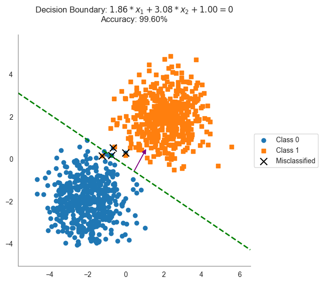
</div>
</div>
</section>
<section id="comparing-decision-boundaries">
<h2>Comparing Decision Boundaries<a class="headerlink" href="#comparing-decision-boundaries" title="Link to this heading">#</a></h2>
<p>One of the key limitations of the Perceptron algorithm is that it only ensures points are classified correctly—it does not consider how confidently they are classified. In other words, while it finds a separating boundary, it does not maximize the distance between the closest data points and the decision boundary.</p>
<p>To illustrate this, consider a simple example where two classes are linearly separable. There are multiple decision boundaries that correctly classify all points, but not all boundaries are equally desirable. One of them—represented by the blue line—is preferable because it is more robust and generalizable to new data.</p>
<div class="cell docutils container">
<div class="cell_input docutils container">
<div class="highlight-ipython3 notranslate"><div class="highlight"><pre><span></span><span class="n">X1</span> <span class="o">=</span> <span class="n">np</span><span class="o">.</span><span class="n">array</span><span class="p">([</span>
    <span class="p">[</span><span class="o">-</span><span class="mi">1</span><span class="p">,</span> <span class="o">-</span><span class="mi">1</span><span class="p">],</span> <span class="p">[</span><span class="o">-</span><span class="mi">2</span><span class="p">,</span> <span class="o">-</span><span class="mf">1.5</span><span class="p">],</span> <span class="p">[</span><span class="o">-</span><span class="mf">1.5</span><span class="p">,</span> <span class="o">-</span><span class="mi">2</span><span class="p">],</span> <span class="p">[</span><span class="o">-</span><span class="mf">0.75</span><span class="p">,</span> <span class="o">-</span><span class="mf">2.5</span><span class="p">],</span> <span class="p">[</span><span class="o">-</span><span class="mi">3</span><span class="p">,</span> <span class="o">-</span><span class="mf">1.5</span><span class="p">],</span>  <span class="c1"># Class 0</span>
    <span class="p">[</span><span class="mi">1</span><span class="p">,</span> <span class="mi">1</span><span class="p">],</span> <span class="p">[</span><span class="mf">2.25</span><span class="p">,</span> <span class="mf">1.5</span><span class="p">],</span> <span class="p">[</span><span class="mf">1.5</span><span class="p">,</span> <span class="mi">2</span><span class="p">],</span> <span class="p">[</span><span class="mf">0.5</span><span class="p">,</span> <span class="mf">2.5</span><span class="p">],</span> <span class="p">[</span><span class="mf">1.8</span><span class="p">,</span> <span class="mf">1.5</span><span class="p">]</span>  <span class="c1"># Class 1</span>
<span class="p">])</span>
<span class="n">y1</span> <span class="o">=</span> <span class="n">np</span><span class="o">.</span><span class="n">array</span><span class="p">([</span><span class="mi">0</span><span class="p">,</span> <span class="mi">0</span><span class="p">,</span> <span class="mi">0</span><span class="p">,</span> <span class="mi">0</span><span class="p">,</span> <span class="mi">0</span><span class="p">,</span> <span class="mi">1</span><span class="p">,</span> <span class="mi">1</span><span class="p">,</span> <span class="mi">1</span><span class="p">,</span> <span class="mi">1</span><span class="p">,</span> <span class="mi">1</span><span class="p">])</span>  <span class="c1"># Labels</span>


<span class="n">sns</span><span class="o">.</span><span class="n">set_style</span><span class="p">(</span><span class="s1">&#39;white&#39;</span><span class="p">)</span>
<span class="n">plt</span><span class="o">.</span><span class="n">figure</span><span class="p">(</span><span class="n">figsize</span><span class="o">=</span><span class="p">(</span><span class="mi">6</span><span class="p">,</span> <span class="mi">6</span><span class="p">))</span>

<span class="n">plt</span><span class="o">.</span><span class="n">scatter</span><span class="p">(</span><span class="n">X1</span><span class="p">[</span><span class="n">y1</span> <span class="o">==</span> <span class="mi">0</span><span class="p">][:,</span> <span class="mi">0</span><span class="p">],</span> <span class="n">X1</span><span class="p">[</span><span class="n">y1</span> <span class="o">==</span> <span class="mi">0</span><span class="p">][:,</span> <span class="mi">1</span><span class="p">],</span> <span class="n">marker</span><span class="o">=</span><span class="s1">&#39;o&#39;</span><span class="p">,</span> <span class="n">label</span><span class="o">=</span><span class="s1">&#39;Class 0 (train)&#39;</span><span class="p">)</span>
<span class="n">plt</span><span class="o">.</span><span class="n">scatter</span><span class="p">(</span><span class="n">X1</span><span class="p">[</span><span class="n">y1</span> <span class="o">==</span> <span class="mi">1</span><span class="p">][:,</span> <span class="mi">0</span><span class="p">],</span> <span class="n">X1</span><span class="p">[</span><span class="n">y1</span> <span class="o">==</span> <span class="mi">1</span><span class="p">][:,</span> <span class="mi">1</span><span class="p">],</span> <span class="n">marker</span><span class="o">=</span><span class="s1">&#39;s&#39;</span><span class="p">,</span> <span class="n">label</span><span class="o">=</span><span class="s1">&#39;Class 1 (train)&#39;</span><span class="p">)</span>
<span class="n">plt</span><span class="o">.</span><span class="n">ylim</span><span class="p">(</span><span class="n">X1</span><span class="p">[:,</span> <span class="mi">1</span><span class="p">]</span><span class="o">.</span><span class="n">min</span><span class="p">()</span> <span class="o">-</span> <span class="mi">1</span><span class="p">,</span> <span class="n">X1</span><span class="p">[:,</span> <span class="mi">1</span><span class="p">]</span><span class="o">.</span><span class="n">max</span><span class="p">()</span> <span class="o">+</span> <span class="mi">1</span><span class="p">)</span>
<span class="n">plt</span><span class="o">.</span><span class="n">xlim</span><span class="p">(</span><span class="n">X1</span><span class="p">[:,</span> <span class="mi">0</span><span class="p">]</span><span class="o">.</span><span class="n">min</span><span class="p">()</span> <span class="o">-</span> <span class="mi">1</span><span class="p">,</span> <span class="n">X1</span><span class="p">[:,</span> <span class="mi">0</span><span class="p">]</span><span class="o">.</span><span class="n">max</span><span class="p">()</span> <span class="o">+</span> <span class="mi">1</span><span class="p">)</span>

<span class="n">boundaries</span> <span class="o">=</span> <span class="p">[</span>
    <span class="p">{</span><span class="s1">&#39;w&#39;</span><span class="p">:</span> <span class="n">np</span><span class="o">.</span><span class="n">array</span><span class="p">([</span><span class="mf">0.25</span><span class="p">,</span> <span class="mf">0.25</span><span class="p">]),</span> <span class="s1">&#39;b&#39;</span><span class="p">:</span> <span class="mf">0.35</span><span class="p">},</span> 
    <span class="p">{</span><span class="s1">&#39;w&#39;</span><span class="p">:</span> <span class="n">np</span><span class="o">.</span><span class="n">array</span><span class="p">([</span><span class="mi">1</span><span class="p">,</span> <span class="mi">1</span><span class="p">]),</span> <span class="s1">&#39;b&#39;</span><span class="p">:</span> <span class="o">-</span><span class="mf">1.35</span><span class="p">},</span>   
    <span class="p">{</span><span class="s1">&#39;w&#39;</span><span class="p">:</span> <span class="n">np</span><span class="o">.</span><span class="n">array</span><span class="p">([</span><span class="mf">0.25</span><span class="p">,</span> <span class="mf">1.0</span><span class="p">]),</span> <span class="s1">&#39;b&#39;</span><span class="p">:</span> <span class="mi">1</span><span class="p">},</span>   
    <span class="p">{</span><span class="s1">&#39;w&#39;</span><span class="p">:</span> <span class="n">np</span><span class="o">.</span><span class="n">array</span><span class="p">([</span><span class="mf">0.25</span><span class="p">,</span> <span class="mf">1.0</span><span class="p">]),</span> <span class="s1">&#39;b&#39;</span><span class="p">:</span> <span class="o">-</span><span class="mi">1</span><span class="p">},</span>   
<span class="p">]</span>

<span class="n">boundary_colors</span> <span class="o">=</span> <span class="p">[</span><span class="s1">&#39;red&#39;</span><span class="p">,</span> <span class="s1">&#39;green&#39;</span><span class="p">,</span> <span class="s1">&#39;gray&#39;</span><span class="p">,</span> <span class="s1">&#39;purple&#39;</span><span class="p">]</span>
<span class="n">x_vals</span> <span class="o">=</span> <span class="n">np</span><span class="o">.</span><span class="n">linspace</span><span class="p">(</span><span class="n">X1</span><span class="p">[:,</span> <span class="mi">0</span><span class="p">]</span><span class="o">.</span><span class="n">min</span><span class="p">()</span> <span class="o">-</span> <span class="mi">1</span><span class="p">,</span> <span class="n">X1</span><span class="p">[:,</span> <span class="mi">0</span><span class="p">]</span><span class="o">.</span><span class="n">max</span><span class="p">()</span> <span class="o">+</span> <span class="mi">1</span><span class="p">,</span> <span class="mi">100</span><span class="p">)</span>
<span class="k">for</span> <span class="n">bidx</span><span class="p">,</span> <span class="n">boundary</span> <span class="ow">in</span> <span class="nb">enumerate</span><span class="p">(</span><span class="n">boundaries</span><span class="p">):</span>
    <span class="n">w</span><span class="p">,</span> <span class="n">b</span> <span class="o">=</span> <span class="n">boundary</span><span class="p">[</span><span class="s1">&#39;w&#39;</span><span class="p">],</span> <span class="n">boundary</span><span class="p">[</span><span class="s1">&#39;b&#39;</span><span class="p">]</span>
    <span class="n">y_vals</span> <span class="o">=</span> <span class="o">-</span><span class="p">(</span><span class="n">w</span><span class="p">[</span><span class="mi">0</span><span class="p">]</span> <span class="o">/</span> <span class="n">w</span><span class="p">[</span><span class="mi">1</span><span class="p">])</span> <span class="o">*</span> <span class="n">x_vals</span> <span class="o">-</span> <span class="p">(</span><span class="n">b</span> <span class="o">/</span> <span class="n">w</span><span class="p">[</span><span class="mi">1</span><span class="p">])</span>
    <span class="n">plt</span><span class="o">.</span><span class="n">plot</span><span class="p">(</span><span class="n">x_vals</span><span class="p">,</span> <span class="n">y_vals</span><span class="p">,</span> <span class="n">linestyle</span><span class="o">=</span><span class="s1">&#39;--&#39;</span><span class="p">,</span> <span class="n">color</span><span class="o">=</span><span class="n">boundary_colors</span><span class="p">[</span><span class="n">bidx</span><span class="p">],</span>  <span class="n">lw</span><span class="o">=</span><span class="mf">0.75</span><span class="p">,</span> <span class="n">label</span><span class="o">=</span><span class="sa">f</span><span class="s1">&#39;Boundary: w=</span><span class="si">{</span><span class="n">w</span><span class="si">}</span><span class="s1">, b=</span><span class="si">{</span><span class="n">b</span><span class="si">:</span><span class="s1">.2f</span><span class="si">}</span><span class="s1">&#39;</span><span class="p">)</span>

<span class="n">w</span><span class="p">,</span> <span class="n">b</span> <span class="o">=</span> <span class="n">np</span><span class="o">.</span><span class="n">array</span><span class="p">([</span><span class="mf">0.5</span><span class="p">,</span> <span class="mf">0.5</span><span class="p">]),</span><span class="mf">0.0</span>
<span class="n">y_vals</span> <span class="o">=</span> <span class="o">-</span><span class="p">(</span><span class="n">w</span><span class="p">[</span><span class="mi">0</span><span class="p">]</span> <span class="o">/</span> <span class="n">w</span><span class="p">[</span><span class="mi">1</span><span class="p">])</span> <span class="o">*</span> <span class="n">x_vals</span> <span class="o">-</span> <span class="p">(</span><span class="n">b</span> <span class="o">/</span> <span class="n">w</span><span class="p">[</span><span class="mi">1</span><span class="p">])</span>
<span class="n">plt</span><span class="o">.</span><span class="n">plot</span><span class="p">(</span><span class="n">x_vals</span><span class="p">,</span> <span class="n">y_vals</span><span class="p">,</span> <span class="n">linestyle</span><span class="o">=</span><span class="s1">&#39;--&#39;</span><span class="p">,</span> <span class="n">color</span><span class="o">=</span><span class="s2">&quot;blue&quot;</span><span class="p">,</span>  <span class="n">lw</span><span class="o">=</span><span class="mi">2</span><span class="p">,</span> <span class="n">label</span><span class="o">=</span><span class="sa">f</span><span class="s1">&#39;Boundary: w=</span><span class="si">{</span><span class="n">w</span><span class="si">}</span><span class="s1">, b=</span><span class="si">{</span><span class="n">b</span><span class="si">:</span><span class="s1">.2f</span><span class="si">}</span><span class="s1">&#39;</span><span class="p">)</span>

<span class="n">sns</span><span class="o">.</span><span class="n">despine</span><span class="p">()</span>
<span class="n">plt</span><span class="o">.</span><span class="n">gca</span><span class="p">()</span><span class="o">.</span><span class="n">spines</span><span class="p">[</span><span class="s1">&#39;left&#39;</span><span class="p">]</span><span class="o">.</span><span class="n">set_color</span><span class="p">(</span><span class="s1">&#39;gray&#39;</span><span class="p">)</span>
<span class="n">plt</span><span class="o">.</span><span class="n">gca</span><span class="p">()</span><span class="o">.</span><span class="n">spines</span><span class="p">[</span><span class="s1">&#39;bottom&#39;</span><span class="p">]</span><span class="o">.</span><span class="n">set_color</span><span class="p">(</span><span class="s1">&#39;gray&#39;</span><span class="p">)</span>

<span class="n">plt</span><span class="o">.</span><span class="n">legend</span><span class="p">(</span><span class="n">loc</span><span class="o">=</span><span class="s1">&#39;upper left&#39;</span><span class="p">,</span> <span class="n">bbox_to_anchor</span><span class="o">=</span><span class="p">(</span><span class="mi">1</span><span class="p">,</span> <span class="mi">1</span><span class="p">),</span> <span class="n">frameon</span><span class="o">=</span><span class="kc">False</span><span class="p">)</span>  
<span class="n">plt</span><span class="o">.</span><span class="n">xlabel</span><span class="p">(</span><span class="s2">&quot;Feature 1&quot;</span><span class="p">)</span>
<span class="n">plt</span><span class="o">.</span><span class="n">ylabel</span><span class="p">(</span><span class="s2">&quot;Feature 2&quot;</span><span class="p">)</span>
<span class="n">plt</span><span class="o">.</span><span class="n">title</span><span class="p">(</span><span class="s2">&quot;Comparison of Different Decision Boundaries&quot;</span><span class="p">)</span>
<span class="n">plt</span><span class="o">.</span><span class="n">show</span><span class="p">();</span>
</pre></div>
</div>
</div>
<div class="cell_output docutils container">
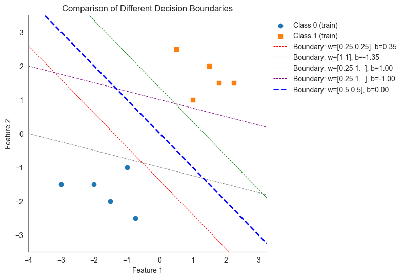
</div>
</div>
<p>In classification problems, the <strong>margin</strong> measures how far a given data point is from the decision boundary. More precisely, it is the shortest distance from the data point to the boundary that separates different classes.</p>
<ul class="simple">
<li><p>If the margin is large, the classification is considered more confident and stable.</p></li>
<li><p>If the margin is small, the point is close to the decision boundary and may be more likely to be misclassified.</p></li>
</ul>
<p>The margin is always measured perpendicularly to the decision boundary, as this is the shortest possible distance.</p>
<p>The graph below shows the margin for each data point for the decision boundary generated by the perceptron algorithm. The margin is the distance from the decision boundary to the closest point in each class.</p>
<section id="calculating-the-margin">
<h3>Calculating the Margin<a class="headerlink" href="#calculating-the-margin" title="Link to this heading">#</a></h3>
<p>Suppose that the decision boundary defined by the equation:</p>
<div class="math notranslate nohighlight">
\[
w \cdot x + b = 0
\]</div>
<p>where <span class="math notranslate nohighlight">\(w\)</span> is the weight vector, <span class="math notranslate nohighlight">\(b\)</span> is the bias term, and <span class="math notranslate nohighlight">\(x\)</span> is a feature vector.</p>
<p>The margin <span class="math notranslate nohighlight">\(d\)</span> of a data point <span class="math notranslate nohighlight">\(x_0\)</span> is given by:</p>
<div class="math notranslate nohighlight">
\[
d = \frac{|w \cdot x_0 + b|}{||w||}
\]</div>
<p>where <span class="math notranslate nohighlight">\(||w||\)</span> is the Euclidean norm of the weight vector <span class="math notranslate nohighlight">\(w\)</span>.</p>
<p>The function to calculate the margin for a set of data points is implemented below:</p>
<div class="cell docutils container">
<div class="cell_input docutils container">
<div class="highlight-ipython3 notranslate"><div class="highlight"><pre><span></span><span class="k">def</span> <span class="nf">calculate_margin</span><span class="p">(</span><span class="n">X</span><span class="p">,</span> <span class="n">w</span><span class="p">,</span> <span class="n">b</span><span class="p">):</span>
<span class="w">    </span><span class="sd">&quot;&quot;&quot;</span>
<span class="sd">    Compute the margin (distance) of each data point to the decision boundary given by w and b.</span>
<span class="sd">    &quot;&quot;&quot;</span>
    <span class="k">return</span> <span class="n">np</span><span class="o">.</span><span class="n">abs</span><span class="p">(</span><span class="n">X</span><span class="o">.</span><span class="n">dot</span><span class="p">(</span><span class="n">w</span><span class="p">)</span> <span class="o">+</span> <span class="n">b</span><span class="p">)</span> <span class="o">/</span> <span class="n">np</span><span class="o">.</span><span class="n">linalg</span><span class="o">.</span><span class="n">norm</span><span class="p">(</span><span class="n">w</span><span class="p">)</span>
</pre></div>
</div>
</div>
</div>
<p><strong>Step 1: Find the Projection of the Data Point onto the Normal Vector</strong>
The first step in computing the margin is to find the point along the normal vector that is closest to the given data point <span class="math notranslate nohighlight">\(x_0\)</span>. This point is called the <strong>projection</strong> of <span class="math notranslate nohighlight">\(x_0\)</span> onto the normal vector <span class="math notranslate nohighlight">\(w\)</span>.   That is, we must find <span class="math notranslate nohighlight">\(\lambda\)</span> such that the vector from <span class="math notranslate nohighlight">\(x_0\)</span> to the projection point (<span class="math notranslate nohighlight">\(\lambda w\)</span>) is perpendicular to <span class="math notranslate nohighlight">\(w\)</span>:</p>
<div class="math notranslate nohighlight">
\[
(x_0 - \lambda w) \cdot w = 0.
\]</div>
<p>Distributing the dot product gives:</p>
<div class="math notranslate nohighlight">
\[
x_0 \cdot w - \lambda w \cdot w = 0.
\]</div>
<p>Moving terms around, we find:</p>
<div class="math notranslate nohighlight">
\[
x_0 \cdot w = \lambda w \cdot w.
\]</div>
<p>Solving for <span class="math notranslate nohighlight">\(\lambda\)</span> gives:</p>
<div class="math notranslate nohighlight">
\[
\lambda = \frac{x_0 \cdot w}{w \cdot w}.
\]</div>
<p>Thus, the projection point onto the normal vector is:</p>
<div class="math notranslate nohighlight">
\[
Proj_w(x_0) = \frac{x_0\cdot w}{w\cdot w} w.
\]</div>
<p><strong>Step 2: Compute the Perpendicular Distance to the Decision Boundary</strong>
The next step is to compute the distance from the decision boundary to the projection point. Since the margin is the shortest distance, this is simply the Euclidean norm of the projection vector:</p>
<div class="math notranslate nohighlight">
\[
|| \frac{x_0\cdot w}{w\cdot w} w||
\]</div>
<p>​</p>
<p>Using the property that scaling a vector scales its norm:</p>
<div class="math notranslate nohighlight">
\[
\frac{x_0\cdot w}{w\cdot w} ||w||
\]</div>
<p>Since <span class="math notranslate nohighlight">\(w \cdot w = ||w||^2\)</span>, we simplify:</p>
<div class="math notranslate nohighlight">
\[
\frac{x_0\cdot w}{||w||^2} ||w||
\]</div>
<p>​</p>
<p>Thus, the final margin formula is:</p>
<div class="math notranslate nohighlight">
\[
\frac{x_0\cdot w}{||w||} 
\]</div>
<p>To illustrate, consider the following example where the weight vector is <span class="math notranslate nohighlight">\(w = [0.5, 0.5]\)</span> and the bias term is <span class="math notranslate nohighlight">\(b = 0\)</span>. The margin for the data point <span class="math notranslate nohighlight">\(x_0 = [1.5, 2]\)</span> is calculated as follows:</p>
<div class="math notranslate nohighlight">
\[\begin{split}\begin{aligned}
d &amp;= \frac{x_0 \cdot w}{||w||} \\[4pt]
&amp;= \frac{[1.5, 2] \cdot [0.5, 0.5]}{\sqrt{0.5^2 + 0.5^2}} \\[4pt]
&amp;= \frac{1.5 \times 0.5 + 2 \times 0.5}{\sqrt{0.5^2 + 0.5^2}} \\[4pt]
&amp;= \frac{0.75 + 1}{\sqrt{0.5^2 + 0.5^2}} \\[4pt]
&amp;= \frac{1.75}{\sqrt{0.5^2 + 0.5^2}} \\[4pt]
&amp;= \frac{1.75}{\sqrt{0.5}} \\[4pt]
&amp;= \frac{1.75}{0.707} \\[4pt]
&amp;\approx 2.47.
\end{aligned}\end{split}\]</div>
<p>The margin, represented by the length of the dashed orange line in the graph below, is approximately <span class="math notranslate nohighlight">\(2.47\)</span>. The projection point, which is the closest point to <span class="math notranslate nohighlight">\(x_0\)</span> along the normal vector, is indicated by the purple dot.</p>
<div class="cell docutils container">
<div class="cell_input docutils container">
<div class="highlight-ipython3 notranslate"><div class="highlight"><pre><span></span><span class="kn">import</span> <span class="nn">numpy</span> <span class="k">as</span> <span class="nn">np</span>
<span class="kn">import</span> <span class="nn">matplotlib.pyplot</span> <span class="k">as</span> <span class="nn">plt</span>

<span class="c1"># Define normal vector w and data point x_0</span>
<span class="n">w</span> <span class="o">=</span> <span class="n">np</span><span class="o">.</span><span class="n">array</span><span class="p">([</span><span class="mf">0.5</span><span class="p">,</span> <span class="mf">0.5</span><span class="p">])</span>  <span class="c1"># Normal vector</span>
<span class="n">point</span> <span class="o">=</span> <span class="n">np</span><span class="o">.</span><span class="n">array</span><span class="p">([</span><span class="mf">1.5</span><span class="p">,</span> <span class="mi">2</span><span class="p">])</span>  <span class="c1"># Data point</span>

<span class="nb">print</span><span class="p">(</span><span class="sa">f</span><span class="s2">&quot;</span><span class="se">\n</span><span class="s2">The margin of </span><span class="si">{</span><span class="n">point</span><span class="si">}</span><span class="s2"> with weight </span><span class="si">{</span><span class="n">w</span><span class="si">}</span><span class="s2"> and bias 0 is </span><span class="si">{</span><span class="n">calculate_margin</span><span class="p">(</span><span class="n">point</span><span class="p">,</span><span class="w"> </span><span class="n">w</span><span class="p">,</span><span class="w"> </span><span class="mi">0</span><span class="p">)</span><span class="si">}</span><span class="se">\n</span><span class="s2">&quot;</span><span class="p">)</span>
<span class="c1"># Compute projection onto w</span>
<span class="n">dot_product_x0_w</span> <span class="o">=</span> <span class="n">np</span><span class="o">.</span><span class="n">dot</span><span class="p">(</span><span class="n">point</span><span class="p">,</span> <span class="n">w</span><span class="p">)</span>  
<span class="n">dot_product_w_w</span> <span class="o">=</span> <span class="n">np</span><span class="o">.</span><span class="n">dot</span><span class="p">(</span><span class="n">w</span><span class="p">,</span> <span class="n">w</span><span class="p">)</span>  
<span class="n">projection_scalar</span> <span class="o">=</span> <span class="n">dot_product_x0_w</span> <span class="o">/</span> <span class="n">dot_product_w_w</span>  
<span class="n">projection_calculated</span> <span class="o">=</span> <span class="n">projection_scalar</span> <span class="o">*</span> <span class="n">w</span>  

<span class="c1"># Compute projection onto the decision boundary (where the margin meets the boundary)</span>
<span class="n">b</span> <span class="o">=</span> <span class="mi">0</span>  <span class="c1"># Assume the decision boundary is w ⋅ x = 0 (passes through the origin)</span>
<span class="n">projection_boundary</span> <span class="o">=</span> <span class="n">point</span> <span class="o">-</span> <span class="p">((</span><span class="n">np</span><span class="o">.</span><span class="n">dot</span><span class="p">(</span><span class="n">point</span><span class="p">,</span> <span class="n">w</span><span class="p">)</span> <span class="o">+</span> <span class="n">b</span><span class="p">)</span> <span class="o">/</span> <span class="n">np</span><span class="o">.</span><span class="n">dot</span><span class="p">(</span><span class="n">w</span><span class="p">,</span> <span class="n">w</span><span class="p">))</span> <span class="o">*</span> <span class="n">w</span>  <span class="c1"># Correct margin projection</span>

<span class="c1"># Define the decision boundary equation: x2 = -x1</span>
<span class="n">x1_vals</span> <span class="o">=</span> <span class="n">np</span><span class="o">.</span><span class="n">linspace</span><span class="p">(</span><span class="o">-</span><span class="mi">2</span><span class="p">,</span> <span class="mi">2</span><span class="p">,</span> <span class="mi">100</span><span class="p">)</span>
<span class="n">x2_vals</span> <span class="o">=</span> <span class="o">-</span><span class="n">x1_vals</span>  <span class="c1"># Decision boundary</span>

<span class="c1"># Create visualization</span>
<span class="n">fig</span><span class="p">,</span> <span class="n">ax</span> <span class="o">=</span> <span class="n">plt</span><span class="o">.</span><span class="n">subplots</span><span class="p">(</span><span class="n">figsize</span><span class="o">=</span><span class="p">(</span><span class="mi">7</span><span class="p">,</span> <span class="mi">7</span><span class="p">))</span>

<span class="c1"># Plot decision boundary (black line)</span>
<span class="n">ax</span><span class="o">.</span><span class="n">plot</span><span class="p">(</span><span class="n">x1_vals</span><span class="p">,</span> <span class="n">x2_vals</span><span class="p">,</span> <span class="s1">&#39;k-&#39;</span><span class="p">,</span> <span class="n">linewidth</span><span class="o">=</span><span class="mi">2</span><span class="p">,</span> <span class="n">label</span><span class="o">=</span><span class="s2">&quot;Decision Boundary&quot;</span><span class="p">)</span>

<span class="c1"># Blue normal vector (extends beyond the projection point)</span>
<span class="n">extended_w_start</span> <span class="o">=</span> <span class="n">np</span><span class="o">.</span><span class="n">array</span><span class="p">([</span><span class="o">-</span><span class="mi">2</span><span class="p">,</span> <span class="o">-</span><span class="mi">2</span><span class="p">])</span>  
<span class="n">extended_w_end</span> <span class="o">=</span> <span class="n">np</span><span class="o">.</span><span class="n">array</span><span class="p">([</span><span class="mi">2</span><span class="p">,</span> <span class="mi">2</span><span class="p">])</span>  
<span class="n">ax</span><span class="o">.</span><span class="n">plot</span><span class="p">([</span><span class="n">extended_w_start</span><span class="p">[</span><span class="mi">0</span><span class="p">],</span> <span class="n">extended_w_end</span><span class="p">[</span><span class="mi">0</span><span class="p">]],</span> <span class="p">[</span><span class="n">extended_w_start</span><span class="p">[</span><span class="mi">1</span><span class="p">],</span> <span class="n">extended_w_end</span><span class="p">[</span><span class="mi">1</span><span class="p">]],</span> <span class="s1">&#39;b-&#39;</span><span class="p">,</span> <span class="n">linewidth</span><span class="o">=</span><span class="mi">1</span><span class="p">,</span> <span class="n">label</span><span class="o">=</span><span class="s2">&quot;Normal Vector (w)&quot;</span><span class="p">)</span>

<span class="c1"># Red arrow pointing to data point</span>
<span class="n">ax</span><span class="o">.</span><span class="n">quiver</span><span class="p">(</span><span class="mi">0</span><span class="p">,</span> <span class="mi">0</span><span class="p">,</span> <span class="n">point</span><span class="p">[</span><span class="mi">0</span><span class="p">],</span> <span class="n">point</span><span class="p">[</span><span class="mi">1</span><span class="p">],</span> <span class="n">angles</span><span class="o">=</span><span class="s1">&#39;xy&#39;</span><span class="p">,</span> <span class="n">scale_units</span><span class="o">=</span><span class="s1">&#39;xy&#39;</span><span class="p">,</span> <span class="n">scale</span><span class="o">=</span><span class="mi">1</span><span class="p">,</span> <span class="n">color</span><span class="o">=</span><span class="s1">&#39;red&#39;</span><span class="p">,</span> <span class="n">label</span><span class="o">=</span><span class="s2">&quot;Data Point $x_0 = (1.5,2)$&quot;</span><span class="p">)</span>

<span class="c1"># Corrected perpendicular margin line (orange dashed line from data point to decision boundary)</span>
<span class="n">ax</span><span class="o">.</span><span class="n">plot</span><span class="p">([</span><span class="n">point</span><span class="p">[</span><span class="mi">0</span><span class="p">],</span> <span class="n">projection_boundary</span><span class="p">[</span><span class="mi">0</span><span class="p">]],</span> <span class="p">[</span><span class="n">point</span><span class="p">[</span><span class="mi">1</span><span class="p">],</span> <span class="n">projection_boundary</span><span class="p">[</span><span class="mi">1</span><span class="p">]],</span> <span class="n">linestyle</span><span class="o">=</span><span class="s1">&#39;dashed&#39;</span><span class="p">,</span> <span class="n">color</span><span class="o">=</span><span class="s1">&#39;orange&#39;</span><span class="p">,</span> <span class="n">linewidth</span><span class="o">=</span><span class="mi">2</span><span class="p">,</span> <span class="n">label</span><span class="o">=</span><span class="s2">&quot;Margin (Perpendicular to Decision Boundary)&quot;</span><span class="p">)</span>

<span class="c1"># Perpendicular projection line from x_0 to the normal vector (gray dashed line)</span>
<span class="n">ax</span><span class="o">.</span><span class="n">plot</span><span class="p">([</span><span class="n">point</span><span class="p">[</span><span class="mi">0</span><span class="p">],</span> <span class="n">projection_calculated</span><span class="p">[</span><span class="mi">0</span><span class="p">]],</span> <span class="p">[</span><span class="n">point</span><span class="p">[</span><span class="mi">1</span><span class="p">],</span> <span class="n">projection_calculated</span><span class="p">[</span><span class="mi">1</span><span class="p">]],</span> <span class="n">linestyle</span><span class="o">=</span><span class="s1">&#39;dashed&#39;</span><span class="p">,</span> <span class="n">color</span><span class="o">=</span><span class="s1">&#39;gray&#39;</span><span class="p">,</span> <span class="n">linewidth</span><span class="o">=</span><span class="mi">2</span><span class="p">,</span> <span class="n">label</span><span class="o">=</span><span class="s2">&quot;Perpendicular to Normal Vector&quot;</span><span class="p">)</span>

<span class="c1"># Blue arrow representing the normal vector w at (0.5, 0.5)</span>
<span class="n">ax</span><span class="o">.</span><span class="n">quiver</span><span class="p">(</span><span class="mi">0</span><span class="p">,</span> <span class="mi">0</span><span class="p">,</span> <span class="n">w</span><span class="p">[</span><span class="mi">0</span><span class="p">],</span> <span class="n">w</span><span class="p">[</span><span class="mi">1</span><span class="p">],</span> <span class="n">angles</span><span class="o">=</span><span class="s1">&#39;xy&#39;</span><span class="p">,</span> <span class="n">scale_units</span><span class="o">=</span><span class="s1">&#39;xy&#39;</span><span class="p">,</span> <span class="n">scale</span><span class="o">=</span><span class="mi">1</span><span class="p">,</span> <span class="n">color</span><span class="o">=</span><span class="s1">&#39;blue&#39;</span><span class="p">)</span>

<span class="n">ax</span><span class="o">.</span><span class="n">text</span><span class="p">(</span><span class="mf">0.55</span><span class="p">,</span> <span class="mf">0.4</span><span class="p">,</span> <span class="sa">r</span><span class="s2">&quot;$w=(0.5, 0.5)$&quot;</span><span class="p">,</span> <span class="n">fontsize</span><span class="o">=</span><span class="mi">12</span><span class="p">,</span> <span class="n">color</span><span class="o">=</span><span class="s1">&#39;blue&#39;</span><span class="p">)</span>
<span class="c1"># Mark key points with labels</span>
<span class="n">ax</span><span class="o">.</span><span class="n">text</span><span class="p">(</span><span class="mf">1.5</span><span class="p">,</span> <span class="mf">2.1</span><span class="p">,</span> <span class="sa">r</span><span class="s2">&quot;$x_0 = (1.5,2)$&quot;</span><span class="p">,</span> <span class="n">fontsize</span><span class="o">=</span><span class="mi">12</span><span class="p">,</span> <span class="n">color</span><span class="o">=</span><span class="s1">&#39;red&#39;</span><span class="p">)</span>
<span class="n">ax</span><span class="o">.</span><span class="n">text</span><span class="p">(</span><span class="mf">1.9</span><span class="p">,</span> <span class="mf">1.7</span><span class="p">,</span> <span class="sa">r</span><span class="s2">&quot;Projection $(1.75, 1.75)$&quot;</span><span class="p">,</span> <span class="n">fontsize</span><span class="o">=</span><span class="mi">12</span><span class="p">,</span> <span class="n">color</span><span class="o">=</span><span class="s1">&#39;purple&#39;</span><span class="p">)</span>
<span class="n">ax</span><span class="o">.</span><span class="n">text</span><span class="p">(</span><span class="mf">0.1</span><span class="p">,</span> <span class="mi">0</span><span class="p">,</span> <span class="sa">r</span><span class="s2">&quot;Origin $(0, 0)$&quot;</span><span class="p">,</span> <span class="n">fontsize</span><span class="o">=</span><span class="mi">12</span><span class="p">,</span> <span class="n">color</span><span class="o">=</span><span class="s1">&#39;black&#39;</span><span class="p">)</span>

<span class="n">ax</span><span class="o">.</span><span class="n">text</span><span class="p">(</span><span class="mf">0.05</span><span class="p">,</span> <span class="mf">1.3</span><span class="p">,</span> <span class="sa">r</span><span class="s2">&quot;margin ($d$)&quot;</span><span class="p">,</span> <span class="n">color</span><span class="o">=</span><span class="s1">&#39;orange&#39;</span><span class="p">,</span> <span class="n">fontsize</span><span class="o">=</span><span class="mi">12</span><span class="p">)</span>
<span class="c1"># Plot key points</span>
<span class="n">ax</span><span class="o">.</span><span class="n">scatter</span><span class="p">(</span><span class="n">point</span><span class="p">[</span><span class="mi">0</span><span class="p">],</span> <span class="n">point</span><span class="p">[</span><span class="mi">1</span><span class="p">],</span> <span class="n">color</span><span class="o">=</span><span class="s1">&#39;red&#39;</span><span class="p">,</span> <span class="n">s</span><span class="o">=</span><span class="mi">100</span><span class="p">,</span> <span class="n">zorder</span><span class="o">=</span><span class="mi">3</span><span class="p">)</span>  <span class="c1"># Data point</span>
<span class="n">ax</span><span class="o">.</span><span class="n">scatter</span><span class="p">(</span><span class="n">projection_calculated</span><span class="p">[</span><span class="mi">0</span><span class="p">],</span> <span class="n">projection_calculated</span><span class="p">[</span><span class="mi">1</span><span class="p">],</span> <span class="n">color</span><span class="o">=</span><span class="s1">&#39;purple&#39;</span><span class="p">,</span> <span class="n">s</span><span class="o">=</span><span class="mi">100</span><span class="p">,</span> <span class="n">zorder</span><span class="o">=</span><span class="mi">3</span><span class="p">)</span>  <span class="c1"># Projection point</span>
<span class="n">ax</span><span class="o">.</span><span class="n">scatter</span><span class="p">(</span><span class="mi">0</span><span class="p">,</span> <span class="mi">0</span><span class="p">,</span> <span class="n">color</span><span class="o">=</span><span class="s1">&#39;black&#39;</span><span class="p">,</span> <span class="n">s</span><span class="o">=</span><span class="mi">100</span><span class="p">,</span> <span class="n">zorder</span><span class="o">=</span><span class="mi">3</span><span class="p">)</span>  <span class="c1"># Projection point</span>

<span class="c1"># Labels and legend</span>
<span class="n">ax</span><span class="o">.</span><span class="n">set_xlabel</span><span class="p">(</span><span class="s2">&quot;$x_1$&quot;</span><span class="p">)</span>
<span class="n">ax</span><span class="o">.</span><span class="n">set_ylabel</span><span class="p">(</span><span class="s2">&quot;$x_2$&quot;</span><span class="p">,</span> <span class="n">rotation</span><span class="o">=</span><span class="mi">0</span><span class="p">)</span>
<span class="n">ax</span><span class="o">.</span><span class="n">set_xlim</span><span class="p">(</span><span class="o">-</span><span class="mf">2.5</span><span class="p">,</span> <span class="mf">2.5</span><span class="p">)</span>
<span class="n">ax</span><span class="o">.</span><span class="n">set_ylim</span><span class="p">(</span><span class="o">-</span><span class="mf">2.5</span><span class="p">,</span> <span class="mf">2.5</span><span class="p">)</span>
<span class="n">ax</span><span class="o">.</span><span class="n">axhline</span><span class="p">(</span><span class="mi">0</span><span class="p">,</span> <span class="n">color</span><span class="o">=</span><span class="s1">&#39;gray&#39;</span><span class="p">,</span> <span class="n">lw</span><span class="o">=</span><span class="mf">0.5</span><span class="p">)</span>
<span class="n">ax</span><span class="o">.</span><span class="n">axvline</span><span class="p">(</span><span class="mi">0</span><span class="p">,</span> <span class="n">color</span><span class="o">=</span><span class="s1">&#39;gray&#39;</span><span class="p">,</span> <span class="n">lw</span><span class="o">=</span><span class="mf">0.5</span><span class="p">)</span>
<span class="n">sns</span><span class="o">.</span><span class="n">despine</span><span class="p">()</span>
<span class="c1">#ax.legend(loc=&#39;upper right&#39;)</span>
<span class="n">ax</span><span class="o">.</span><span class="n">set_title</span><span class="p">(</span><span class="s2">&quot;Visualization of the Margin Computation&quot;</span><span class="p">)</span>

<span class="c1"># Enforce equal aspect ratio to maintain correct perpendicularity</span>
<span class="n">ax</span><span class="o">.</span><span class="n">set_aspect</span><span class="p">(</span><span class="s1">&#39;equal&#39;</span><span class="p">)</span>

<span class="n">plt</span><span class="o">.</span><span class="n">grid</span><span class="p">()</span>
<span class="n">plt</span><span class="o">.</span><span class="n">show</span><span class="p">()</span>
</pre></div>
</div>
</div>
<div class="cell_output docutils container">
<div class="output stream highlight-myst-ansi notranslate"><div class="highlight"><pre><span></span>The margin of [1.5 2. ] with weight [0.5 0.5] and bias 0 is 2.4748737341529163
</pre></div>
</div>
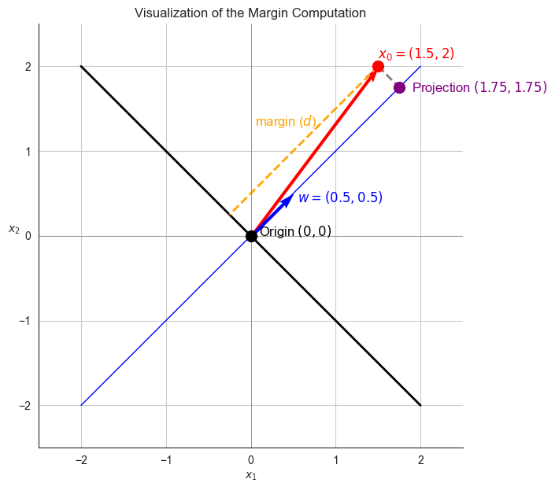
</div>
</div>
<p>An important observation is that the perceptron algorithm does not necessarily produce a decision boundary with the largest margin.</p>
<div class="cell docutils container">
<div class="cell_input docutils container">
<div class="highlight-ipython3 notranslate"><div class="highlight"><pre><span></span><span class="n">X1</span> <span class="o">=</span> <span class="n">np</span><span class="o">.</span><span class="n">array</span><span class="p">([</span>
    <span class="p">[</span><span class="o">-</span><span class="mi">1</span><span class="p">,</span> <span class="o">-</span><span class="mi">1</span><span class="p">],</span> <span class="p">[</span><span class="o">-</span><span class="mi">2</span><span class="p">,</span> <span class="o">-</span><span class="mf">1.5</span><span class="p">],</span> <span class="p">[</span><span class="o">-</span><span class="mf">1.5</span><span class="p">,</span> <span class="o">-</span><span class="mi">2</span><span class="p">],</span> <span class="p">[</span><span class="o">-</span><span class="mf">0.75</span><span class="p">,</span> <span class="o">-</span><span class="mf">2.5</span><span class="p">],</span> <span class="p">[</span><span class="o">-</span><span class="mi">3</span><span class="p">,</span> <span class="o">-</span><span class="mf">1.5</span><span class="p">],</span>  <span class="c1"># Class 0</span>
    <span class="p">[</span><span class="mi">1</span><span class="p">,</span> <span class="mi">1</span><span class="p">],</span> <span class="p">[</span><span class="mf">2.25</span><span class="p">,</span> <span class="mf">1.5</span><span class="p">],</span> <span class="p">[</span><span class="mf">1.5</span><span class="p">,</span> <span class="mi">2</span><span class="p">],</span> <span class="p">[</span><span class="mf">0.5</span><span class="p">,</span> <span class="mf">2.5</span><span class="p">],</span> <span class="p">[</span><span class="mf">1.8</span><span class="p">,</span> <span class="mf">1.5</span><span class="p">]</span>  <span class="c1"># Class 1</span>
<span class="p">])</span>
<span class="n">y1</span> <span class="o">=</span> <span class="n">np</span><span class="o">.</span><span class="n">array</span><span class="p">([</span><span class="mi">0</span><span class="p">,</span> <span class="mi">0</span><span class="p">,</span> <span class="mi">0</span><span class="p">,</span> <span class="mi">0</span><span class="p">,</span> <span class="mi">0</span><span class="p">,</span> <span class="mi">1</span><span class="p">,</span> <span class="mi">1</span><span class="p">,</span> <span class="mi">1</span><span class="p">,</span> <span class="mi">1</span><span class="p">,</span> <span class="mi">1</span><span class="p">])</span>  <span class="c1"># Labels</span>

<span class="n">model_perceptron</span><span class="p">,</span> <span class="n">best_w_perceptron</span><span class="p">,</span> <span class="n">best_b_perceptron</span> <span class="o">=</span> <span class="n">train_perceptron</span><span class="p">(</span><span class="n">X1</span><span class="p">,</span> <span class="n">y1</span><span class="p">,</span> <span class="n">max_iters</span><span class="o">=</span><span class="mi">1000</span><span class="p">)</span>

<span class="nb">print</span><span class="p">(</span><span class="sa">f</span><span class="s2">&quot;</span><span class="se">\n</span><span class="s2">Perceptron weights: </span><span class="si">{</span><span class="n">best_w_perceptron</span><span class="si">}</span><span class="s2">,</span><span class="se">\n</span><span class="s2">Perceptron bias: </span><span class="si">{</span><span class="n">best_b_perceptron</span><span class="si">}</span><span class="s2">&quot;</span><span class="p">)</span>

<span class="n">plot_with_boundary_and_margin</span><span class="p">(</span><span class="n">X1</span><span class="p">,</span> <span class="n">y1</span><span class="p">,</span> <span class="n">best_w_perceptron</span><span class="p">,</span> <span class="n">best_b_perceptron</span><span class="p">)</span>
</pre></div>
</div>
</div>
<div class="cell_output docutils container">
<div class="output stream highlight-myst-ansi notranslate"><div class="highlight"><pre><span></span>Perceptron weights: [1. 1.],
Perceptron bias: -1
</pre></div>
</div>
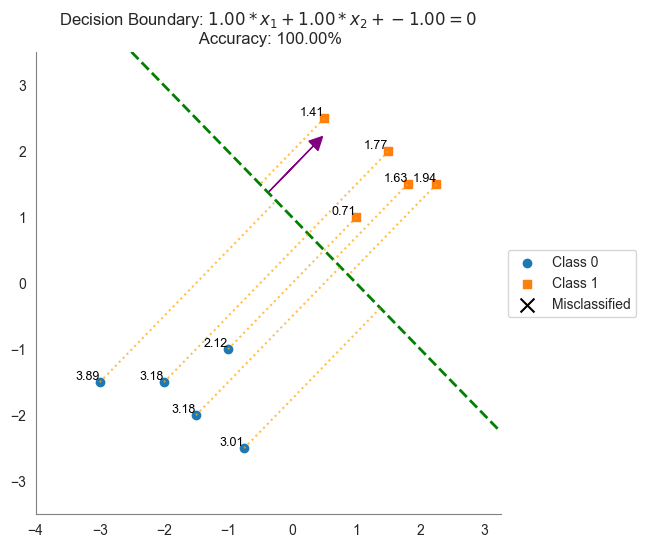
</div>
</div>
</section>
</section>
<section id="support-vector-machines-svms">
<h2>Support Vector Machines (SVMs)<a class="headerlink" href="#support-vector-machines-svms" title="Link to this heading">#</a></h2>
<p>Support Vector Machines (SVMs) are an advanced method for determining an optimal decision boundary. Rather than just separating classes, an SVM maximizes the margin between them, which makes the classifier more robust and better at generalizing to new data. In this section, we will implement the SVM algorithm using the <code class="docutils literal notranslate"><span class="pre">keras</span></code> library.</p>
<section id="hinge-loss">
<h3>Hinge Loss<a class="headerlink" href="#hinge-loss" title="Link to this heading">#</a></h3>
<p>The SVM algorithm optimizes its decision boundary by minimizing the <strong>hinge loss</strong> function. Hinge loss penalizes predictions that are too close to—or on the wrong side of—the margin, encouraging the classifier to not only separate classes but also maximize the distance (margin) between them.</p>
<p>The hinge loss for a single data point is defined as:</p>
<div class="math notranslate nohighlight">
\[
\text{hinge\_loss} = \max(0, 1 - y \cdot (w \cdot x + b)),
\]</div>
<p>where <span class="math notranslate nohighlight">\(y\)</span> is the true label, <span class="math notranslate nohighlight">\(w\)</span> is the weight vector, <span class="math notranslate nohighlight">\(x\)</span> is the feature vector, and <span class="math notranslate nohighlight">\(b\)</span> is the bias term. The hinge loss is zero when the point is correctly classified and on the correct side of the margin, and it increases linearly as the point moves closer to the decision boundary.</p>
<div class="cell docutils container">
<div class="cell_input docutils container">
<div class="highlight-ipython3 notranslate"><div class="highlight"><pre><span></span><span class="k">def</span> <span class="nf">hinge_loss_value</span><span class="p">(</span><span class="n">y</span><span class="p">,</span> <span class="n">f</span><span class="p">):</span>
    <span class="k">return</span> <span class="n">np</span><span class="o">.</span><span class="n">maximum</span><span class="p">(</span><span class="mi">0</span><span class="p">,</span> <span class="mi">1</span> <span class="o">-</span> <span class="n">y</span> <span class="o">*</span> <span class="n">f</span><span class="p">)</span>

<span class="c1"># Fix the true label </span>
<span class="n">y</span> <span class="o">=</span> <span class="o">-</span><span class="mi">1</span>

<span class="c1"># Generate a range of predicted values</span>
<span class="n">f_values</span> <span class="o">=</span> <span class="n">np</span><span class="o">.</span><span class="n">linspace</span><span class="p">(</span><span class="o">-</span><span class="mi">2</span><span class="p">,</span> <span class="mi">2</span><span class="p">,</span> <span class="mi">400</span><span class="p">)</span>
<span class="n">loss_values</span> <span class="o">=</span> <span class="n">hinge_loss_value</span><span class="p">(</span><span class="n">y</span><span class="p">,</span> <span class="n">f_values</span><span class="p">)</span>

<span class="n">sns</span><span class="o">.</span><span class="n">set_style</span><span class="p">(</span><span class="s1">&#39;whitegrid&#39;</span><span class="p">)</span>
<span class="n">plt</span><span class="o">.</span><span class="n">plot</span><span class="p">(</span><span class="n">f_values</span><span class="p">,</span> <span class="n">loss_values</span><span class="p">,</span> <span class="n">label</span><span class="o">=</span><span class="sa">r</span><span class="s1">&#39;$L_{\text</span><span class="si">{hinge}</span><span class="s1">} = \max(0,\, 1 - y\cdot f(x))$&#39;</span><span class="p">)</span>
<span class="n">plt</span><span class="o">.</span><span class="n">xlabel</span><span class="p">(</span><span class="s1">&#39;Predicted value, f(x)&#39;</span><span class="p">)</span>
<span class="n">plt</span><span class="o">.</span><span class="n">ylabel</span><span class="p">(</span><span class="s1">&#39;Hinge Loss&#39;</span><span class="p">)</span>
<span class="n">plt</span><span class="o">.</span><span class="n">title</span><span class="p">(</span><span class="sa">f</span><span class="s1">&#39;Hinge Loss for y=</span><span class="si">{</span><span class="n">y</span><span class="si">}</span><span class="s1">&#39;</span><span class="p">)</span>
<span class="n">sns</span><span class="o">.</span><span class="n">despine</span><span class="p">()</span>
<span class="n">plt</span><span class="o">.</span><span class="n">legend</span><span class="p">()</span>
<span class="n">plt</span><span class="o">.</span><span class="n">grid</span><span class="p">(</span><span class="kc">True</span><span class="p">)</span>
<span class="n">plt</span><span class="o">.</span><span class="n">show</span><span class="p">()</span>


<span class="c1"># Fix the true label </span>
<span class="n">y</span> <span class="o">=</span> <span class="mi">1</span>

<span class="c1"># Generate a range of predicted values</span>
<span class="n">f_values</span> <span class="o">=</span> <span class="n">np</span><span class="o">.</span><span class="n">linspace</span><span class="p">(</span><span class="o">-</span><span class="mi">2</span><span class="p">,</span> <span class="mi">2</span><span class="p">,</span> <span class="mi">400</span><span class="p">)</span>
<span class="n">loss_values</span> <span class="o">=</span> <span class="n">hinge_loss_value</span><span class="p">(</span><span class="n">y</span><span class="p">,</span> <span class="n">f_values</span><span class="p">)</span>

<span class="n">sns</span><span class="o">.</span><span class="n">set_style</span><span class="p">(</span><span class="s1">&#39;whitegrid&#39;</span><span class="p">)</span>
<span class="n">plt</span><span class="o">.</span><span class="n">plot</span><span class="p">(</span><span class="n">f_values</span><span class="p">,</span> <span class="n">loss_values</span><span class="p">,</span> <span class="n">label</span><span class="o">=</span><span class="sa">r</span><span class="s1">&#39;$L_{\text</span><span class="si">{hinge}</span><span class="s1">} = \max(0,\, 1 - y\cdot f(x))$&#39;</span><span class="p">)</span>
<span class="n">plt</span><span class="o">.</span><span class="n">xlabel</span><span class="p">(</span><span class="s1">&#39;Predicted value, f(x)&#39;</span><span class="p">)</span>
<span class="n">plt</span><span class="o">.</span><span class="n">ylabel</span><span class="p">(</span><span class="s1">&#39;Hinge Loss&#39;</span><span class="p">)</span>
<span class="n">plt</span><span class="o">.</span><span class="n">title</span><span class="p">(</span><span class="sa">f</span><span class="s1">&#39;Hinge Loss for y=</span><span class="si">{</span><span class="n">y</span><span class="si">}</span><span class="s1">&#39;</span><span class="p">)</span>
<span class="n">sns</span><span class="o">.</span><span class="n">despine</span><span class="p">()</span>
<span class="n">plt</span><span class="o">.</span><span class="n">legend</span><span class="p">()</span>
<span class="n">plt</span><span class="o">.</span><span class="n">grid</span><span class="p">(</span><span class="kc">True</span><span class="p">)</span>
<span class="n">plt</span><span class="o">.</span><span class="n">show</span><span class="p">()</span>
</pre></div>
</div>
</div>
<div class="cell_output docutils container">
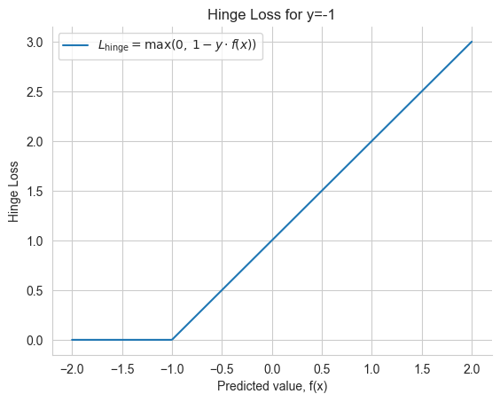
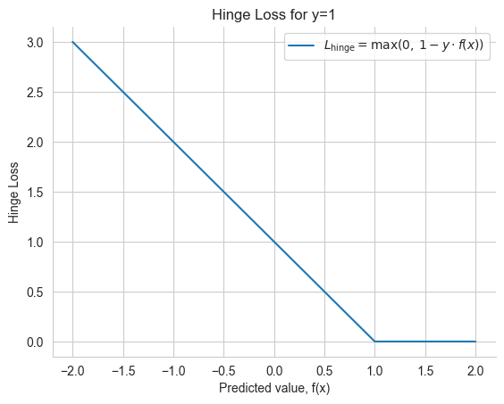
</div>
</div>
<p>When training an SVM classifier, we will be finding the hinge loss for a <em>batch</em> of values.  The hinge loss for a batch of data points is the average of the hinge losses for each individual data point:</p>
<div class="cell docutils container">
<div class="cell_input docutils container">
<div class="highlight-ipython3 notranslate"><div class="highlight"><pre><span></span><span class="k">def</span> <span class="nf">hinge_loss_numpy</span><span class="p">(</span><span class="n">y_true</span><span class="p">,</span> <span class="n">y_pred</span><span class="p">):</span>
    <span class="c1"># Ensure y_true and y_pred are numpy arrays of type float</span>
    <span class="n">y_true</span> <span class="o">=</span> <span class="n">np</span><span class="o">.</span><span class="n">array</span><span class="p">(</span><span class="n">y_true</span><span class="p">,</span> <span class="n">dtype</span><span class="o">=</span><span class="nb">float</span><span class="p">)</span>
    <span class="n">y_pred</span> <span class="o">=</span> <span class="n">np</span><span class="o">.</span><span class="n">array</span><span class="p">(</span><span class="n">y_pred</span><span class="p">,</span> <span class="n">dtype</span><span class="o">=</span><span class="nb">float</span><span class="p">)</span>
    <span class="c1"># Calculate hinge loss for each sample: max(0, 1 - y * f(x))</span>
    <span class="n">losses</span> <span class="o">=</span> <span class="n">np</span><span class="o">.</span><span class="n">maximum</span><span class="p">(</span><span class="mi">0</span><span class="p">,</span> <span class="mi">1</span> <span class="o">-</span> <span class="n">y_true</span> <span class="o">*</span> <span class="n">y_pred</span><span class="p">)</span>
    <span class="c1"># Return the average loss</span>
    <span class="k">return</span> <span class="n">np</span><span class="o">.</span><span class="n">mean</span><span class="p">(</span><span class="n">losses</span><span class="p">)</span>

<span class="c1"># Example usage</span>
<span class="n">y_true</span> <span class="o">=</span> <span class="n">np</span><span class="o">.</span><span class="n">array</span><span class="p">([</span><span class="o">-</span><span class="mi">1</span><span class="p">,</span> <span class="mi">1</span><span class="p">,</span> <span class="o">-</span><span class="mi">1</span><span class="p">,</span> <span class="mi">1</span><span class="p">])</span>
<span class="n">y_pred</span> <span class="o">=</span> <span class="n">np</span><span class="o">.</span><span class="n">array</span><span class="p">([</span><span class="mf">0.8</span><span class="p">,</span> <span class="mf">0.4</span><span class="p">,</span> <span class="o">-</span><span class="mf">0.5</span><span class="p">,</span> <span class="mf">1.2</span><span class="p">])</span>
<span class="nb">print</span><span class="p">(</span><span class="s2">&quot;NumPy Hinge Loss:&quot;</span><span class="p">,</span> <span class="n">hinge_loss_numpy</span><span class="p">(</span><span class="n">y_true</span><span class="p">,</span> <span class="n">y_pred</span><span class="p">))</span>
</pre></div>
</div>
</div>
<div class="cell_output docutils container">
<div class="output stream highlight-myst-ansi notranslate"><div class="highlight"><pre><span></span>NumPy Hinge Loss: 0.725
</pre></div>
</div>
</div>
</div>
<div class="cell docutils container">
<div class="cell_input docutils container">
<div class="highlight-ipython3 notranslate"><div class="highlight"><pre><span></span><span class="k">def</span> <span class="nf">hinge_loss_numpy_with_losses</span><span class="p">(</span><span class="n">y_true</span><span class="p">,</span> <span class="n">y_pred</span><span class="p">):</span>
    <span class="n">y_true</span> <span class="o">=</span> <span class="n">np</span><span class="o">.</span><span class="n">array</span><span class="p">(</span><span class="n">y_true</span><span class="p">,</span> <span class="n">dtype</span><span class="o">=</span><span class="nb">float</span><span class="p">)</span>
    <span class="n">y_pred</span> <span class="o">=</span> <span class="n">np</span><span class="o">.</span><span class="n">array</span><span class="p">(</span><span class="n">y_pred</span><span class="p">,</span> <span class="n">dtype</span><span class="o">=</span><span class="nb">float</span><span class="p">)</span>
    <span class="n">losses</span> <span class="o">=</span> <span class="n">np</span><span class="o">.</span><span class="n">maximum</span><span class="p">(</span><span class="mi">0</span><span class="p">,</span> <span class="mi">1</span> <span class="o">-</span> <span class="n">y_true</span> <span class="o">*</span> <span class="n">y_pred</span><span class="p">)</span>
    <span class="k">return</span> <span class="n">np</span><span class="o">.</span><span class="n">mean</span><span class="p">(</span><span class="n">losses</span><span class="p">),</span> <span class="n">losses</span>

<span class="n">y_true</span> <span class="o">=</span> <span class="n">np</span><span class="o">.</span><span class="n">array</span><span class="p">([</span><span class="o">-</span><span class="mi">1</span><span class="p">,</span> <span class="mi">1</span><span class="p">,</span> <span class="mi">1</span><span class="p">,</span> <span class="mi">1</span><span class="p">])</span>
<span class="n">y_pred</span> <span class="o">=</span> <span class="n">np</span><span class="o">.</span><span class="n">array</span><span class="p">([</span><span class="mf">0.8</span><span class="p">,</span> <span class="mf">0.4</span><span class="p">,</span> <span class="o">-</span><span class="mf">0.5</span><span class="p">,</span> <span class="mf">1.2</span><span class="p">])</span>

<span class="n">avg_loss</span><span class="p">,</span> <span class="n">losses</span> <span class="o">=</span> <span class="n">hinge_loss_numpy_with_losses</span><span class="p">(</span><span class="n">y_true</span><span class="p">,</span> <span class="n">y_pred</span><span class="p">)</span>
<span class="nb">print</span><span class="p">(</span><span class="s2">&quot;Hinge Loss (Average):&quot;</span><span class="p">,</span> <span class="n">avg_loss</span><span class="p">)</span>

<span class="c1"># Bar plot for each sample&#39;s loss</span>
<span class="n">plt</span><span class="o">.</span><span class="n">figure</span><span class="p">(</span><span class="n">figsize</span><span class="o">=</span><span class="p">(</span><span class="mi">8</span><span class="p">,</span> <span class="mi">4</span><span class="p">))</span>
<span class="n">bars</span> <span class="o">=</span> <span class="n">plt</span><span class="o">.</span><span class="n">bar</span><span class="p">(</span><span class="n">np</span><span class="o">.</span><span class="n">arange</span><span class="p">(</span><span class="nb">len</span><span class="p">(</span><span class="n">losses</span><span class="p">)),</span> <span class="n">losses</span><span class="p">,</span> <span class="n">color</span><span class="o">=</span><span class="s1">&#39;skyblue&#39;</span><span class="p">,</span> <span class="n">edgecolor</span><span class="o">=</span><span class="s1">&#39;k&#39;</span><span class="p">)</span>
<span class="n">plt</span><span class="o">.</span><span class="n">xlabel</span><span class="p">(</span><span class="s2">&quot;Sample Index&quot;</span><span class="p">)</span>
<span class="n">plt</span><span class="o">.</span><span class="n">ylabel</span><span class="p">(</span><span class="s2">&quot;Hinge Loss&quot;</span><span class="p">)</span>
<span class="n">plt</span><span class="o">.</span><span class="n">title</span><span class="p">(</span><span class="s2">&quot;Hinge Loss per Sample&quot;</span><span class="p">)</span>
<span class="n">plt</span><span class="o">.</span><span class="n">xticks</span><span class="p">(</span><span class="n">np</span><span class="o">.</span><span class="n">arange</span><span class="p">(</span><span class="nb">len</span><span class="p">(</span><span class="n">losses</span><span class="p">)))</span>

<span class="c1"># Add labels above each bar</span>
<span class="k">for</span> <span class="n">i</span><span class="p">,</span> <span class="n">bar</span> <span class="ow">in</span> <span class="nb">enumerate</span><span class="p">(</span><span class="n">bars</span><span class="p">):</span>
    <span class="n">height</span> <span class="o">=</span> <span class="n">bar</span><span class="o">.</span><span class="n">get_height</span><span class="p">()</span>
    <span class="n">plt</span><span class="o">.</span><span class="n">text</span><span class="p">(</span><span class="n">bar</span><span class="o">.</span><span class="n">get_x</span><span class="p">()</span> <span class="o">+</span> <span class="n">bar</span><span class="o">.</span><span class="n">get_width</span><span class="p">()</span><span class="o">/</span><span class="mi">2</span><span class="p">,</span> <span class="n">height</span> <span class="o">+</span> <span class="mf">0.05</span><span class="p">,</span> <span class="sa">f</span><span class="s1">&#39;</span><span class="si">{</span><span class="n">losses</span><span class="p">[</span><span class="n">i</span><span class="p">]</span><span class="si">:</span><span class="s1">.2f</span><span class="si">}</span><span class="s1">&#39;</span><span class="p">,</span>
             <span class="n">ha</span><span class="o">=</span><span class="s1">&#39;center&#39;</span><span class="p">,</span> <span class="n">va</span><span class="o">=</span><span class="s1">&#39;bottom&#39;</span><span class="p">)</span>

<span class="n">plt</span><span class="o">.</span><span class="n">ylim</span><span class="p">(</span><span class="mi">0</span><span class="p">,</span> <span class="nb">max</span><span class="p">(</span><span class="n">losses</span><span class="p">)</span> <span class="o">+</span> <span class="mf">0.5</span><span class="p">)</span>
<span class="n">plt</span><span class="o">.</span><span class="n">grid</span><span class="p">(</span><span class="n">axis</span><span class="o">=</span><span class="s1">&#39;x&#39;</span><span class="p">)</span>
<span class="n">sns</span><span class="o">.</span><span class="n">despine</span><span class="p">()</span>
<span class="n">plt</span><span class="o">.</span><span class="n">gca</span><span class="p">()</span><span class="o">.</span><span class="n">spines</span><span class="p">[</span><span class="s1">&#39;left&#39;</span><span class="p">]</span><span class="o">.</span><span class="n">set_color</span><span class="p">(</span><span class="s1">&#39;white&#39;</span><span class="p">)</span>
<span class="n">plt</span><span class="o">.</span><span class="n">show</span><span class="p">()</span>
</pre></div>
</div>
</div>
<div class="cell_output docutils container">
<div class="output stream highlight-myst-ansi notranslate"><div class="highlight"><pre><span></span>Hinge Loss (Average): 0.975
</pre></div>
</div>
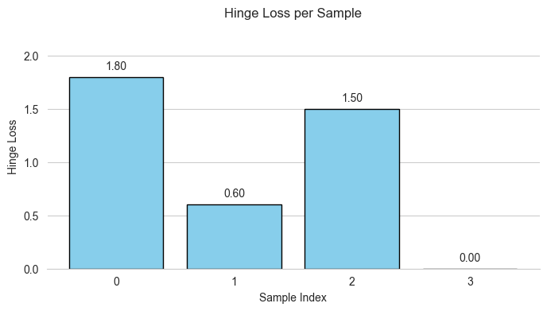
</div>
</div>
<div class="cell docutils container">
<div class="cell_input docutils container">
<div class="highlight-ipython3 notranslate"><div class="highlight"><pre><span></span><span class="c1">## An interactive widget for exploring hinge loss</span>

<span class="kn">import</span> <span class="nn">ipywidgets</span> <span class="k">as</span> <span class="nn">widgets</span>
<span class="kn">from</span> <span class="nn">ipywidgets</span> <span class="kn">import</span> <span class="n">HBox</span><span class="p">,</span> <span class="n">VBox</span><span class="p">,</span> <span class="n">interactive_output</span><span class="p">,</span> <span class="n">Layout</span>
<span class="kn">from</span> <span class="nn">IPython.display</span> <span class="kn">import</span> <span class="n">display</span>

<span class="k">def</span> <span class="nf">interactive_hinge_loss</span><span class="p">(</span><span class="n">y0</span><span class="p">,</span> <span class="n">y1</span><span class="p">,</span> <span class="n">y2</span><span class="p">,</span> <span class="n">y3</span><span class="p">,</span> <span class="n">p0</span><span class="p">,</span> <span class="n">p1</span><span class="p">,</span> <span class="n">p2</span><span class="p">,</span> <span class="n">p3</span><span class="p">):</span>
    <span class="c1"># Construct arrays from widget inputs</span>
    <span class="n">y_true</span> <span class="o">=</span> <span class="n">np</span><span class="o">.</span><span class="n">array</span><span class="p">([</span><span class="n">y0</span><span class="p">,</span> <span class="n">y1</span><span class="p">,</span> <span class="n">y2</span><span class="p">,</span> <span class="n">y3</span><span class="p">])</span>
    <span class="n">y_pred</span> <span class="o">=</span> <span class="n">np</span><span class="o">.</span><span class="n">array</span><span class="p">([</span><span class="n">p0</span><span class="p">,</span> <span class="n">p1</span><span class="p">,</span> <span class="n">p2</span><span class="p">,</span> <span class="n">p3</span><span class="p">])</span>
    
    <span class="c1"># Compute hinge loss</span>
    <span class="n">avg_loss</span><span class="p">,</span> <span class="n">losses</span> <span class="o">=</span> <span class="n">hinge_loss_numpy_with_losses</span><span class="p">(</span><span class="n">y_true</span><span class="p">,</span> <span class="n">y_pred</span><span class="p">)</span>
    <span class="nb">print</span><span class="p">(</span><span class="s2">&quot;Hinge Loss (Average):&quot;</span><span class="p">,</span> <span class="n">avg_loss</span><span class="p">)</span>
    
    <span class="c1"># Create bar plot for each sample&#39;s loss</span>
    <span class="n">plt</span><span class="o">.</span><span class="n">figure</span><span class="p">(</span><span class="n">figsize</span><span class="o">=</span><span class="p">(</span><span class="mi">8</span><span class="p">,</span> <span class="mi">4</span><span class="p">))</span>
    <span class="n">bars</span> <span class="o">=</span> <span class="n">plt</span><span class="o">.</span><span class="n">bar</span><span class="p">(</span><span class="n">np</span><span class="o">.</span><span class="n">arange</span><span class="p">(</span><span class="nb">len</span><span class="p">(</span><span class="n">losses</span><span class="p">)),</span> <span class="n">losses</span><span class="p">,</span> <span class="n">color</span><span class="o">=</span><span class="s1">&#39;skyblue&#39;</span><span class="p">,</span> <span class="n">edgecolor</span><span class="o">=</span><span class="s1">&#39;k&#39;</span><span class="p">)</span>
    <span class="n">plt</span><span class="o">.</span><span class="n">xlabel</span><span class="p">(</span><span class="s2">&quot;&quot;</span><span class="p">)</span>
    <span class="n">plt</span><span class="o">.</span><span class="n">ylabel</span><span class="p">(</span><span class="s2">&quot;Hinge Loss&quot;</span><span class="p">)</span>
    <span class="n">plt</span><span class="o">.</span><span class="n">title</span><span class="p">(</span><span class="s2">&quot;Hinge Loss per Sample&quot;</span><span class="p">)</span>
    <span class="n">plt</span><span class="o">.</span><span class="n">xticks</span><span class="p">(</span><span class="n">np</span><span class="o">.</span><span class="n">arange</span><span class="p">(</span><span class="nb">len</span><span class="p">(</span><span class="n">losses</span><span class="p">)))</span>
    
    <span class="c1"># Add text labels above each bar showing the loss value</span>
    <span class="k">for</span> <span class="n">i</span><span class="p">,</span> <span class="n">bar</span> <span class="ow">in</span> <span class="nb">enumerate</span><span class="p">(</span><span class="n">bars</span><span class="p">):</span>
        <span class="n">height</span> <span class="o">=</span> <span class="n">bar</span><span class="o">.</span><span class="n">get_height</span><span class="p">()</span>
        <span class="n">plt</span><span class="o">.</span><span class="n">text</span><span class="p">(</span><span class="n">bar</span><span class="o">.</span><span class="n">get_x</span><span class="p">()</span> <span class="o">+</span> <span class="n">bar</span><span class="o">.</span><span class="n">get_width</span><span class="p">()</span><span class="o">/</span><span class="mi">2</span><span class="p">,</span> <span class="n">height</span> <span class="o">+</span> <span class="mf">0.05</span><span class="p">,</span> <span class="sa">f</span><span class="s1">&#39;</span><span class="si">{</span><span class="n">losses</span><span class="p">[</span><span class="n">i</span><span class="p">]</span><span class="si">:</span><span class="s1">.2f</span><span class="si">}</span><span class="s1">&#39;</span><span class="p">,</span>
                 <span class="n">ha</span><span class="o">=</span><span class="s1">&#39;center&#39;</span><span class="p">,</span> <span class="n">va</span><span class="o">=</span><span class="s1">&#39;bottom&#39;</span><span class="p">)</span>
    
    <span class="n">plt</span><span class="o">.</span><span class="n">ylim</span><span class="p">(</span><span class="mi">0</span><span class="p">,</span> <span class="mf">3.5</span><span class="p">)</span>
    <span class="n">plt</span><span class="o">.</span><span class="n">grid</span><span class="p">(</span><span class="n">axis</span><span class="o">=</span><span class="s1">&#39;x&#39;</span><span class="p">)</span>
    <span class="n">sns</span><span class="o">.</span><span class="n">despine</span><span class="p">()</span>  <span class="c1"># Remove the top and right spines for a cleaner look</span>
    <span class="n">plt</span><span class="o">.</span><span class="n">gca</span><span class="p">()</span><span class="o">.</span><span class="n">spines</span><span class="p">[</span><span class="s1">&#39;left&#39;</span><span class="p">]</span><span class="o">.</span><span class="n">set_color</span><span class="p">(</span><span class="s1">&#39;white&#39;</span><span class="p">)</span>
    <span class="c1">#plt.show()</span>

<span class="c1"># Create widgets for each y (dropdown) and each p (slider)</span>
<span class="n">w_y0</span> <span class="o">=</span> <span class="n">widgets</span><span class="o">.</span><span class="n">Dropdown</span><span class="p">(</span><span class="n">options</span><span class="o">=</span><span class="p">[</span><span class="o">-</span><span class="mi">1</span><span class="p">,</span> <span class="mi">1</span><span class="p">],</span> <span class="n">value</span><span class="o">=-</span><span class="mi">1</span><span class="p">,</span> <span class="n">description</span><span class="o">=</span><span class="s2">&quot;y0:&quot;</span><span class="p">)</span>
<span class="n">w_p0</span> <span class="o">=</span> <span class="n">widgets</span><span class="o">.</span><span class="n">FloatSlider</span><span class="p">(</span><span class="nb">min</span><span class="o">=-</span><span class="mi">2</span><span class="p">,</span> <span class="nb">max</span><span class="o">=</span><span class="mi">2</span><span class="p">,</span> <span class="n">step</span><span class="o">=</span><span class="mf">0.1</span><span class="p">,</span> <span class="n">value</span><span class="o">=</span><span class="mf">0.8</span><span class="p">,</span> <span class="n">description</span><span class="o">=</span><span class="s2">&quot;p0:&quot;</span><span class="p">)</span>

<span class="n">w_y1</span> <span class="o">=</span> <span class="n">widgets</span><span class="o">.</span><span class="n">Dropdown</span><span class="p">(</span><span class="n">options</span><span class="o">=</span><span class="p">[</span><span class="o">-</span><span class="mi">1</span><span class="p">,</span> <span class="mi">1</span><span class="p">],</span> <span class="n">value</span><span class="o">=</span><span class="mi">1</span><span class="p">,</span> <span class="n">description</span><span class="o">=</span><span class="s2">&quot;y1:&quot;</span><span class="p">)</span>
<span class="n">w_p1</span> <span class="o">=</span> <span class="n">widgets</span><span class="o">.</span><span class="n">FloatSlider</span><span class="p">(</span><span class="nb">min</span><span class="o">=-</span><span class="mi">2</span><span class="p">,</span> <span class="nb">max</span><span class="o">=</span><span class="mi">2</span><span class="p">,</span> <span class="n">step</span><span class="o">=</span><span class="mf">0.1</span><span class="p">,</span> <span class="n">value</span><span class="o">=</span><span class="mf">0.4</span><span class="p">,</span> <span class="n">description</span><span class="o">=</span><span class="s2">&quot;p1:&quot;</span><span class="p">)</span>

<span class="n">w_y2</span> <span class="o">=</span> <span class="n">widgets</span><span class="o">.</span><span class="n">Dropdown</span><span class="p">(</span><span class="n">options</span><span class="o">=</span><span class="p">[</span><span class="o">-</span><span class="mi">1</span><span class="p">,</span> <span class="mi">1</span><span class="p">],</span> <span class="n">value</span><span class="o">=</span><span class="mi">1</span><span class="p">,</span> <span class="n">description</span><span class="o">=</span><span class="s2">&quot;y2:&quot;</span><span class="p">)</span>
<span class="n">w_p2</span> <span class="o">=</span> <span class="n">widgets</span><span class="o">.</span><span class="n">FloatSlider</span><span class="p">(</span><span class="nb">min</span><span class="o">=-</span><span class="mi">2</span><span class="p">,</span> <span class="nb">max</span><span class="o">=</span><span class="mi">2</span><span class="p">,</span> <span class="n">step</span><span class="o">=</span><span class="mf">0.1</span><span class="p">,</span> <span class="n">value</span><span class="o">=-</span><span class="mf">0.5</span><span class="p">,</span> <span class="n">description</span><span class="o">=</span><span class="s2">&quot;p2:&quot;</span><span class="p">)</span>

<span class="n">w_y3</span> <span class="o">=</span> <span class="n">widgets</span><span class="o">.</span><span class="n">Dropdown</span><span class="p">(</span><span class="n">options</span><span class="o">=</span><span class="p">[</span><span class="o">-</span><span class="mi">1</span><span class="p">,</span> <span class="mi">1</span><span class="p">],</span> <span class="n">value</span><span class="o">=</span><span class="mi">1</span><span class="p">,</span> <span class="n">description</span><span class="o">=</span><span class="s2">&quot;y3:&quot;</span><span class="p">)</span>
<span class="n">w_p3</span> <span class="o">=</span> <span class="n">widgets</span><span class="o">.</span><span class="n">FloatSlider</span><span class="p">(</span><span class="nb">min</span><span class="o">=-</span><span class="mi">2</span><span class="p">,</span> <span class="nb">max</span><span class="o">=</span><span class="mi">2</span><span class="p">,</span> <span class="n">step</span><span class="o">=</span><span class="mf">0.1</span><span class="p">,</span> <span class="n">value</span><span class="o">=</span><span class="mf">1.2</span><span class="p">,</span> <span class="n">description</span><span class="o">=</span><span class="s2">&quot;p3:&quot;</span><span class="p">)</span>


<span class="c1"># Arrange the widgets into a 4x2 matrix (each row with y and p next to each other)</span>
<span class="n">row0</span> <span class="o">=</span> <span class="n">HBox</span><span class="p">([</span><span class="n">w_y0</span><span class="p">,</span> <span class="n">w_p0</span><span class="p">],</span> <span class="n">layout</span><span class="o">=</span><span class="n">Layout</span><span class="p">(</span><span class="n">margin</span><span class="o">=</span><span class="s1">&#39;0px&#39;</span><span class="p">))</span>
<span class="n">row1</span> <span class="o">=</span> <span class="n">HBox</span><span class="p">([</span><span class="n">w_y1</span><span class="p">,</span> <span class="n">w_p1</span><span class="p">],</span> <span class="n">layout</span><span class="o">=</span><span class="n">Layout</span><span class="p">(</span><span class="n">margin</span><span class="o">=</span><span class="s1">&#39;0px&#39;</span><span class="p">))</span>
<span class="n">row2</span> <span class="o">=</span> <span class="n">HBox</span><span class="p">([</span><span class="n">w_y2</span><span class="p">,</span> <span class="n">w_p2</span><span class="p">],</span> <span class="n">layout</span><span class="o">=</span><span class="n">Layout</span><span class="p">(</span><span class="n">margin</span><span class="o">=</span><span class="s1">&#39;0px&#39;</span><span class="p">))</span>
<span class="n">row3</span> <span class="o">=</span> <span class="n">HBox</span><span class="p">([</span><span class="n">w_y3</span><span class="p">,</span> <span class="n">w_p3</span><span class="p">],</span> <span class="n">layout</span><span class="o">=</span><span class="n">Layout</span><span class="p">(</span><span class="n">margin</span><span class="o">=</span><span class="s1">&#39;0px&#39;</span><span class="p">))</span>

<span class="n">widget_matrix</span> <span class="o">=</span> <span class="n">VBox</span><span class="p">([</span><span class="n">row0</span><span class="p">,</span> <span class="n">row1</span><span class="p">,</span> <span class="n">row2</span><span class="p">,</span> <span class="n">row3</span><span class="p">],</span> <span class="n">layout</span><span class="o">=</span><span class="n">Layout</span><span class="p">(</span><span class="n">margin</span><span class="o">=</span><span class="s1">&#39;0px&#39;</span><span class="p">))</span>
    
<span class="c1"># Create an interactive output that links the widgets to the function</span>
<span class="n">out</span> <span class="o">=</span> <span class="n">interactive_output</span><span class="p">(</span><span class="n">interactive_hinge_loss</span><span class="p">,</span> 
                           <span class="p">{</span><span class="s1">&#39;y0&#39;</span><span class="p">:</span> <span class="n">w_y0</span><span class="p">,</span> <span class="s1">&#39;p0&#39;</span><span class="p">:</span> <span class="n">w_p0</span><span class="p">,</span>
                            <span class="s1">&#39;y1&#39;</span><span class="p">:</span> <span class="n">w_y1</span><span class="p">,</span> <span class="s1">&#39;p1&#39;</span><span class="p">:</span> <span class="n">w_p1</span><span class="p">,</span>
                            <span class="s1">&#39;y2&#39;</span><span class="p">:</span> <span class="n">w_y2</span><span class="p">,</span> <span class="s1">&#39;p2&#39;</span><span class="p">:</span> <span class="n">w_p2</span><span class="p">,</span>
                            <span class="s1">&#39;y3&#39;</span><span class="p">:</span> <span class="n">w_y3</span><span class="p">,</span> <span class="s1">&#39;p3&#39;</span><span class="p">:</span> <span class="n">w_p3</span><span class="p">})</span>

<span class="c1"># Display the widget matrix and the output together</span>
<span class="n">display</span><span class="p">(</span><span class="n">widget_matrix</span><span class="p">,</span> <span class="n">out</span><span class="p">)</span>
</pre></div>
</div>
</div>
<div class="cell_output docutils container">
<script type="application/vnd.jupyter.widget-view+json">{"version_major": 2, "version_minor": 0, "model_id": "c2e6ec070945445a8abd2995b5de7c57"}</script><script type="application/vnd.jupyter.widget-view+json">{"version_major": 2, "version_minor": 0, "model_id": "621cb5799f984812a7fac0920b1bda1e"}</script></div>
</div>
<p>The <code class="docutils literal notranslate"><span class="pre">keras</span></code> library provides a built-in <code class="docutils literal notranslate"><span class="pre">Hinge</span></code> loss function that can be used to train SVM models. This loss function is defined as:</p>
<div class="highlight-python notranslate"><div class="highlight"><pre><span></span>
<span class="n">tf</span><span class="o">.</span><span class="n">keras</span><span class="o">.</span><span class="n">losses</span><span class="o">.</span><span class="n">Hinge</span><span class="p">()</span>

</pre></div>
</div>
</section>
<section id="defining-the-svm-classifier-in-keras">
<h3>Defining the SVM Classifier in Keras<a class="headerlink" href="#defining-the-svm-classifier-in-keras" title="Link to this heading">#</a></h3>
<p>There three steps to define and train an SVM classifier in Keras.</p>
<section id="step-1-define-the-model">
<h4>Step 1: Define the Model<a class="headerlink" href="#step-1-define-the-model" title="Link to this heading">#</a></h4>
<div class="cell docutils container">
<div class="cell_input docutils container">
<div class="highlight-ipython3 notranslate"><div class="highlight"><pre><span></span><span class="kn">import</span> <span class="nn">tensorflow</span> <span class="k">as</span> <span class="nn">tf</span>
<span class="kn">from</span> <span class="nn">tensorflow.keras</span> <span class="kn">import</span> <span class="n">Input</span><span class="p">,</span> <span class="n">Sequential</span>
<span class="kn">from</span> <span class="nn">tensorflow.keras.layers</span> <span class="kn">import</span> <span class="n">Dense</span>


<span class="n">X</span> <span class="o">=</span> <span class="n">np</span><span class="o">.</span><span class="n">array</span><span class="p">([</span>
    <span class="p">[</span><span class="o">-</span><span class="mi">1</span><span class="p">,</span> <span class="o">-</span><span class="mi">1</span><span class="p">],</span> <span class="p">[</span><span class="o">-</span><span class="mi">2</span><span class="p">,</span> <span class="o">-</span><span class="mf">1.5</span><span class="p">],</span> <span class="p">[</span><span class="o">-</span><span class="mf">1.5</span><span class="p">,</span> <span class="o">-</span><span class="mi">2</span><span class="p">],</span> <span class="p">[</span><span class="o">-</span><span class="mf">0.75</span><span class="p">,</span> <span class="o">-</span><span class="mf">2.5</span><span class="p">],</span> <span class="p">[</span><span class="o">-</span><span class="mi">3</span><span class="p">,</span> <span class="o">-</span><span class="mf">1.5</span><span class="p">],</span>  <span class="c1"># Class 0</span>
    <span class="p">[</span><span class="mi">1</span><span class="p">,</span> <span class="mi">1</span><span class="p">],</span> <span class="p">[</span><span class="mf">2.25</span><span class="p">,</span> <span class="mf">1.5</span><span class="p">],</span> <span class="p">[</span><span class="mf">1.5</span><span class="p">,</span> <span class="mi">2</span><span class="p">],</span> <span class="p">[</span><span class="mf">0.5</span><span class="p">,</span> <span class="mf">2.5</span><span class="p">],</span> <span class="p">[</span><span class="mf">1.8</span><span class="p">,</span> <span class="mf">1.5</span><span class="p">],</span>   <span class="c1"># Class 1</span>
<span class="p">])</span>

<span class="n">model</span> <span class="o">=</span> <span class="n">Sequential</span><span class="p">([</span>
    <span class="n">Input</span><span class="p">(</span><span class="n">shape</span><span class="o">=</span><span class="p">(</span><span class="n">X</span><span class="o">.</span><span class="n">shape</span><span class="p">[</span><span class="mi">1</span><span class="p">],)),</span>  <span class="c1"># Explicitly define the input shape</span>
    <span class="n">Dense</span><span class="p">(</span><span class="mi">1</span><span class="p">,</span> <span class="n">activation</span><span class="o">=</span><span class="s1">&#39;linear&#39;</span><span class="p">),</span> <span class="c1"># Linear activation for a linear classifier</span>
<span class="p">])</span>

<span class="n">model</span><span class="o">.</span><span class="n">summary</span><span class="p">()</span>
<span class="nb">print</span><span class="p">(</span><span class="n">model</span><span class="o">.</span><span class="n">layers</span><span class="p">[</span><span class="mi">0</span><span class="p">]</span><span class="o">.</span><span class="n">get_weights</span><span class="p">())</span>
</pre></div>
</div>
</div>
<div class="cell_output docutils container">
<div class="output stderr highlight-myst-ansi notranslate"><div class="highlight"><pre><span></span>2025-05-06 06:31:10.612781: I metal_plugin/src/device/metal_device.cc:1154] Metal device set to: Apple M2 Max
2025-05-06 06:31:10.612803: I metal_plugin/src/device/metal_device.cc:296] systemMemory: 96.00 GB
2025-05-06 06:31:10.612827: I metal_plugin/src/device/metal_device.cc:313] maxCacheSize: 36.00 GB
WARNING: All log messages before absl::InitializeLog() is called are written to STDERR
I0000 00:00:1746527470.612854  621898 pluggable_device_factory.cc:305] Could not identify NUMA node of platform GPU ID 0, defaulting to 0. Your kernel may not have been built with NUMA support.
I0000 00:00:1746527470.612884  621898 pluggable_device_factory.cc:271] Created TensorFlow device (/job:localhost/replica:0/task:0/device:GPU:0 with 0 MB memory) -&gt; physical PluggableDevice (device: 0, name: METAL, pci bus id: &lt;undefined&gt;)
</pre></div>
</div>
<div class="output text_html"><pre style="white-space:pre;overflow-x:auto;line-height:normal;font-family:Menlo,'DejaVu Sans Mono',consolas,'Courier New',monospace"><span style="font-weight: bold">Model: "sequential"</span>
</pre>
</div><div class="output text_html"><pre style="white-space:pre;overflow-x:auto;line-height:normal;font-family:Menlo,'DejaVu Sans Mono',consolas,'Courier New',monospace">┏━━━━━━━━━━━━━━━━━━━━━━━━━━━━━━━━━┳━━━━━━━━━━━━━━━━━━━━━━━━┳━━━━━━━━━━━━━━━┓
┃<span style="font-weight: bold"> Layer (type)                    </span>┃<span style="font-weight: bold"> Output Shape           </span>┃<span style="font-weight: bold">       Param # </span>┃
┡━━━━━━━━━━━━━━━━━━━━━━━━━━━━━━━━━╇━━━━━━━━━━━━━━━━━━━━━━━━╇━━━━━━━━━━━━━━━┩
│ dense (<span style="color: #0087ff; text-decoration-color: #0087ff">Dense</span>)                   │ (<span style="color: #00d7ff; text-decoration-color: #00d7ff">None</span>, <span style="color: #00af00; text-decoration-color: #00af00">1</span>)              │             <span style="color: #00af00; text-decoration-color: #00af00">3</span> │
└─────────────────────────────────┴────────────────────────┴───────────────┘
</pre>
</div><div class="output text_html"><pre style="white-space:pre;overflow-x:auto;line-height:normal;font-family:Menlo,'DejaVu Sans Mono',consolas,'Courier New',monospace"><span style="font-weight: bold"> Total params: </span><span style="color: #00af00; text-decoration-color: #00af00">3</span> (12.00 B)
</pre>
</div><div class="output text_html"><pre style="white-space:pre;overflow-x:auto;line-height:normal;font-family:Menlo,'DejaVu Sans Mono',consolas,'Courier New',monospace"><span style="font-weight: bold"> Trainable params: </span><span style="color: #00af00; text-decoration-color: #00af00">3</span> (12.00 B)
</pre>
</div><div class="output text_html"><pre style="white-space:pre;overflow-x:auto;line-height:normal;font-family:Menlo,'DejaVu Sans Mono',consolas,'Courier New',monospace"><span style="font-weight: bold"> Non-trainable params: </span><span style="color: #00af00; text-decoration-color: #00af00">0</span> (0.00 B)
</pre>
</div><div class="output stream highlight-myst-ansi notranslate"><div class="highlight"><pre><span></span>[array([[-1.3365157 ],
       [ 0.22728038]], dtype=float32), array([0.], dtype=float32)]
</pre></div>
</div>
</div>
</div>
</section>
<section id="step-2-compile-the-model">
<h4>Step 2: Compile the Model<a class="headerlink" href="#step-2-compile-the-model" title="Link to this heading">#</a></h4>
<p>You must specify the loss function (we will use the built-in hinge loss function) and an <em>optimizer</em> that updates the weights based on the loss (more on this later).</p>
<p>Optionally, you can also specify additional metrics to track during training.  For example, including ‘accuracy’ means that after each training epoch, Keras will calculate the percentage of predictions that match the true labels. This extra feedback helps you understand how well your model is performing and can guide decisions such as adjusting hyperparameters, selecting the best model, or diagnosing issues during training.</p>
<div class="cell docutils container">
<div class="cell_input docutils container">
<div class="highlight-ipython3 notranslate"><div class="highlight"><pre><span></span><span class="n">model</span><span class="o">.</span><span class="n">compile</span><span class="p">(</span>
    <span class="n">loss</span><span class="o">=</span><span class="n">tf</span><span class="o">.</span><span class="n">keras</span><span class="o">.</span><span class="n">losses</span><span class="o">.</span><span class="n">Hinge</span><span class="p">(),</span>
    <span class="n">optimizer</span><span class="o">=</span><span class="n">tf</span><span class="o">.</span><span class="n">keras</span><span class="o">.</span><span class="n">optimizers</span><span class="o">.</span><span class="n">SGD</span><span class="p">(</span><span class="n">learning_rate</span><span class="o">=</span><span class="mf">0.01</span><span class="p">)</span>
    <span class="p">)</span>
</pre></div>
</div>
</div>
</div>
</section>
<section id="step-3-train-the-model">
<h4>Step 3: Train the Model<a class="headerlink" href="#step-3-train-the-model" title="Link to this heading">#</a></h4>
<p>Training the model involves feeding the training data (features and labels) into the model and adjusting the weights to minimize the loss. The <code class="docutils literal notranslate"><span class="pre">fit</span></code> method in Keras is used to train the model. You must specify the training data, the number of epochs (iterations over the entire dataset), and the batch size (the number of samples used in each iteration).</p>
<div class="cell docutils container">
<div class="cell_input docutils container">
<div class="highlight-ipython3 notranslate"><div class="highlight"><pre><span></span><span class="n">X1</span> <span class="o">=</span> <span class="n">np</span><span class="o">.</span><span class="n">array</span><span class="p">([</span>
    <span class="p">[</span><span class="o">-</span><span class="mi">1</span><span class="p">,</span> <span class="o">-</span><span class="mi">1</span><span class="p">],</span> <span class="p">[</span><span class="o">-</span><span class="mi">2</span><span class="p">,</span> <span class="o">-</span><span class="mf">1.5</span><span class="p">],</span> <span class="p">[</span><span class="o">-</span><span class="mf">1.5</span><span class="p">,</span> <span class="o">-</span><span class="mi">2</span><span class="p">],</span> <span class="p">[</span><span class="o">-</span><span class="mf">0.75</span><span class="p">,</span> <span class="o">-</span><span class="mf">2.5</span><span class="p">],</span> <span class="p">[</span><span class="o">-</span><span class="mi">3</span><span class="p">,</span> <span class="o">-</span><span class="mf">1.5</span><span class="p">],</span>  <span class="c1"># Class 0</span>
    <span class="p">[</span><span class="mi">1</span><span class="p">,</span> <span class="mi">1</span><span class="p">],</span> <span class="p">[</span><span class="mf">2.25</span><span class="p">,</span> <span class="mf">1.5</span><span class="p">],</span> <span class="p">[</span><span class="mf">1.5</span><span class="p">,</span> <span class="mi">2</span><span class="p">],</span> <span class="p">[</span><span class="mf">0.5</span><span class="p">,</span> <span class="mf">2.5</span><span class="p">],</span> <span class="p">[</span><span class="mf">1.8</span><span class="p">,</span> <span class="mf">1.5</span><span class="p">]</span>  <span class="c1"># Class 1</span>
<span class="p">])</span>
<span class="n">y1</span> <span class="o">=</span> <span class="n">np</span><span class="o">.</span><span class="n">array</span><span class="p">([</span><span class="o">-</span><span class="mi">1</span><span class="p">,</span> <span class="o">-</span><span class="mi">1</span><span class="p">,</span> <span class="o">-</span><span class="mi">1</span><span class="p">,</span> <span class="o">-</span><span class="mi">1</span><span class="p">,</span><span class="o">-</span><span class="mi">1</span><span class="p">,</span>  <span class="mi">1</span><span class="p">,</span> <span class="mi">1</span><span class="p">,</span> <span class="mi">1</span><span class="p">,</span> <span class="mi">1</span><span class="p">,</span> <span class="mi">1</span><span class="p">])</span>  <span class="c1"># Labels</span>

<span class="k">def</span> <span class="nf">build_model</span><span class="p">(</span><span class="n">input_dim</span><span class="p">):</span>
    <span class="n">m</span> <span class="o">=</span> <span class="n">Sequential</span><span class="p">([</span>
        <span class="n">Input</span><span class="p">(</span><span class="n">shape</span><span class="o">=</span><span class="p">(</span><span class="n">input_dim</span><span class="p">,)),</span>
        <span class="n">Dense</span><span class="p">(</span><span class="mi">1</span><span class="p">,</span> <span class="n">activation</span><span class="o">=</span><span class="s1">&#39;linear&#39;</span><span class="p">)</span>
    <span class="p">])</span>
    <span class="n">m</span><span class="o">.</span><span class="n">compile</span><span class="p">(</span>
        <span class="n">loss</span><span class="o">=</span><span class="n">tf</span><span class="o">.</span><span class="n">keras</span><span class="o">.</span><span class="n">losses</span><span class="o">.</span><span class="n">Hinge</span><span class="p">(),</span>
        <span class="n">optimizer</span><span class="o">=</span><span class="n">tf</span><span class="o">.</span><span class="n">keras</span><span class="o">.</span><span class="n">optimizers</span><span class="o">.</span><span class="n">SGD</span><span class="p">(</span><span class="n">learning_rate</span><span class="o">=</span><span class="mf">0.01</span><span class="p">)</span>
    <span class="p">)</span>
    <span class="k">return</span> <span class="n">m</span>

<span class="c1"># Each time you want to start fresh:</span>
<span class="n">model2</span> <span class="o">=</span> <span class="n">build_model</span><span class="p">(</span><span class="n">X1</span><span class="o">.</span><span class="n">shape</span><span class="p">[</span><span class="mi">1</span><span class="p">])</span>

<span class="c1"># Train the model</span>
<span class="n">history</span> <span class="o">=</span> <span class="n">model2</span><span class="o">.</span><span class="n">fit</span><span class="p">(</span><span class="n">X1</span><span class="p">,</span> <span class="n">y1</span><span class="p">,</span> <span class="n">epochs</span><span class="o">=</span><span class="mi">100</span><span class="p">,</span>  <span class="n">batch_size</span> <span class="o">=</span> <span class="mi">2</span><span class="p">,</span> <span class="n">verbose</span><span class="o">=</span><span class="mi">0</span><span class="p">)</span>
<span class="nb">print</span><span class="p">(</span><span class="s2">&quot;Training complete&quot;</span><span class="p">)</span>


<span class="c1"># # Plot the loss over epochs</span>
<span class="n">plt</span><span class="o">.</span><span class="n">plot</span><span class="p">(</span><span class="n">history</span><span class="o">.</span><span class="n">history</span><span class="p">[</span><span class="s1">&#39;loss&#39;</span><span class="p">])</span>
<span class="n">plt</span><span class="o">.</span><span class="n">xlabel</span><span class="p">(</span><span class="s2">&quot;Epoch&quot;</span><span class="p">)</span>
<span class="n">plt</span><span class="o">.</span><span class="n">ylabel</span><span class="p">(</span><span class="s2">&quot;Hinge Loss&quot;</span><span class="p">);</span> 
</pre></div>
</div>
</div>
<div class="cell_output docutils container">
<div class="output stderr highlight-myst-ansi notranslate"><div class="highlight"><pre><span></span>2025-05-06 06:31:10.796076: I tensorflow/core/grappler/optimizers/custom_graph_optimizer_registry.cc:117] Plugin optimizer for device_type GPU is enabled.
</pre></div>
</div>
<div class="output stream highlight-myst-ansi notranslate"><div class="highlight"><pre><span></span>Training complete
</pre></div>
</div>
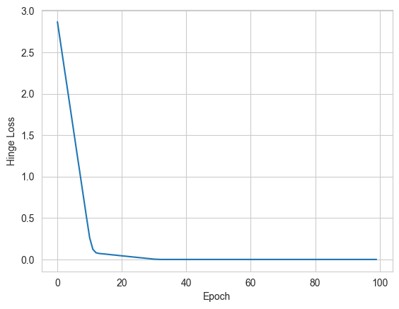
</div>
</div>
</section>
<section id="make-predictions-using-the-model">
<h4>Make Predictions using the Model<a class="headerlink" href="#make-predictions-using-the-model" title="Link to this heading">#</a></h4>
<div class="cell docutils container">
<div class="cell_input docutils container">
<div class="highlight-ipython3 notranslate"><div class="highlight"><pre><span></span><span class="n">predictions</span> <span class="o">=</span> <span class="n">model2</span><span class="o">.</span><span class="n">predict</span><span class="p">(</span><span class="n">X1</span><span class="p">)</span><span class="o">.</span><span class="n">flatten</span><span class="p">()</span>
<span class="nb">print</span><span class="p">(</span><span class="n">predictions</span><span class="p">)</span>
<span class="c1"># Convert raw scores to class labels: if prediction &gt;= 0, then class 1, else -1</span>
<span class="n">predicted_labels</span> <span class="o">=</span> <span class="n">np</span><span class="o">.</span><span class="n">where</span><span class="p">(</span><span class="n">predictions</span> <span class="o">&gt;=</span> <span class="mi">0</span><span class="p">,</span> <span class="mi">1</span><span class="p">,</span> <span class="o">-</span><span class="mi">1</span><span class="p">)</span>

<span class="nb">print</span><span class="p">(</span><span class="s2">&quot;Predictions:&quot;</span><span class="p">,</span> <span class="n">predicted_labels</span><span class="p">)</span>
</pre></div>
</div>
</div>
<div class="cell_output docutils container">
<div class="output stream highlight-myst-ansi notranslate"><div class="highlight"><pre><span></span><span class=" -Color -Color-Bold">1/1</span> <span class=" -Color -Color-Green">━━━━━━━━━━━━━━━━━━━━</span> <span class=" -Color -Color-Bold">0s</span> 18ms/step
</pre></div>
</div>
<div class="output stream highlight-myst-ansi notranslate"><div class="highlight"><pre><span></span>
<span class=" -Color -Color-Bold">1/1</span> <span class=" -Color -Color-Green">━━━━━━━━━━━━━━━━━━━━</span> <span class=" -Color -Color-Bold">0s</span> 24ms/step
</pre></div>
</div>
<div class="output stream highlight-myst-ansi notranslate"><div class="highlight"><pre><span></span>[-1.0139164 -1.6983205 -1.8578869 -1.9299803 -2.0482123  1.0239164
  1.7957935  1.8678869  1.8525074  1.6383421]
Predictions: [-1 -1 -1 -1 -1  1  1  1  1  1]
</pre></div>
</div>
</div>
</div>
<div class="cell docutils container">
<div class="cell_input docutils container">
<div class="highlight-ipython3 notranslate"><div class="highlight"><pre><span></span><span class="k">def</span> <span class="nf">train_svm</span><span class="p">(</span><span class="n">X</span><span class="p">,</span> <span class="n">y</span><span class="p">,</span> <span class="n">epochs</span><span class="p">,</span> <span class="n">batch_size</span><span class="p">):</span>
<span class="w">    </span><span class="sd">&quot;&quot;&quot;</span>
<span class="sd">    Build and train an SVM-like linear classifier using hinge loss.</span>
<span class="sd">    </span>
<span class="sd">    Parameters:</span>
<span class="sd">      X: NumPy array of input features (shape: (n_samples, n_features))</span>
<span class="sd">      y: NumPy array of labels (should be -1 and 1)</span>
<span class="sd">      epochs: Number of training epochs.</span>
<span class="sd">      batch_size: Batch size for training.</span>
<span class="sd">      </span>
<span class="sd">    Returns:</span>
<span class="sd">      predictor: A function that makes predictions on new data.</span>
<span class="sd">      w: Learned weight matrix from the Dense layer.</span>
<span class="sd">      b: Learned bias vector from the Dense layer.</span>
<span class="sd">    &quot;&quot;&quot;</span>
    
    <span class="c1"># Build the model</span>
    <span class="n">model</span> <span class="o">=</span> <span class="n">Sequential</span><span class="p">([</span>
        <span class="n">Input</span><span class="p">(</span><span class="n">shape</span><span class="o">=</span><span class="p">(</span><span class="n">X</span><span class="o">.</span><span class="n">shape</span><span class="p">[</span><span class="mi">1</span><span class="p">],)),</span>         <span class="c1"># Explicitly define input shape</span>
        <span class="n">Dense</span><span class="p">(</span><span class="mi">1</span><span class="p">,</span> <span class="n">activation</span><span class="o">=</span><span class="s1">&#39;linear&#39;</span><span class="p">)</span>         <span class="c1"># Single neuron (linear output)</span>
    <span class="p">])</span>
    
    <span class="c1"># Compile the model using hinge loss and SGD optimizer</span>
    <span class="n">model</span><span class="o">.</span><span class="n">compile</span><span class="p">(</span>
        <span class="n">loss</span><span class="o">=</span><span class="n">tf</span><span class="o">.</span><span class="n">keras</span><span class="o">.</span><span class="n">losses</span><span class="o">.</span><span class="n">Hinge</span><span class="p">(),</span>
        <span class="n">optimizer</span><span class="o">=</span><span class="n">tf</span><span class="o">.</span><span class="n">keras</span><span class="o">.</span><span class="n">optimizers</span><span class="o">.</span><span class="n">SGD</span><span class="p">(</span><span class="n">learning_rate</span><span class="o">=</span><span class="mf">0.01</span><span class="p">)</span>
    <span class="p">)</span>
    
    <span class="c1"># Train the model</span>
    <span class="n">model</span><span class="o">.</span><span class="n">fit</span><span class="p">(</span><span class="n">X</span><span class="p">,</span> <span class="n">y</span><span class="p">,</span> <span class="n">epochs</span><span class="o">=</span><span class="n">epochs</span><span class="p">,</span> <span class="n">batch_size</span><span class="o">=</span><span class="n">batch_size</span><span class="p">,</span> <span class="n">verbose</span><span class="o">=</span><span class="mi">0</span><span class="p">)</span>
    
    <span class="c1"># Extract the learned weights and bias from the Dense layer.</span>
    <span class="c1"># (If using an Input layer, the Dense layer is typically the last layer.)</span>
    <span class="n">w</span><span class="p">,</span> <span class="n">b</span> <span class="o">=</span> <span class="n">model</span><span class="o">.</span><span class="n">layers</span><span class="p">[</span><span class="o">-</span><span class="mi">1</span><span class="p">]</span><span class="o">.</span><span class="n">get_weights</span><span class="p">()</span>
    
    <span class="c1"># Define a predictor function that mirrors your perceptron example:</span>
    <span class="k">def</span> <span class="nf">predictor</span><span class="p">(</span><span class="n">X_new</span><span class="p">):</span>
        <span class="c1"># Compute the raw scores: f(x) = X_new.dot(w) + b.</span>
        <span class="c1"># Note: Ensure that X_new is a NumPy array.</span>
        <span class="n">scores</span> <span class="o">=</span> <span class="n">np</span><span class="o">.</span><span class="n">dot</span><span class="p">(</span><span class="n">X_new</span><span class="p">,</span> <span class="n">w</span><span class="p">)</span> <span class="o">+</span> <span class="n">b</span>
        <span class="c1"># Return class predictions: if score &gt;= 0 then 1, else -1.</span>
        <span class="k">return</span> <span class="p">(</span><span class="n">scores</span> <span class="o">&gt;=</span> <span class="mi">0</span><span class="p">)</span><span class="o">.</span><span class="n">astype</span><span class="p">(</span><span class="nb">int</span><span class="p">)</span>
    
    <span class="k">return</span> <span class="n">predictor</span><span class="p">,</span> <span class="n">w</span><span class="o">.</span><span class="n">reshape</span><span class="p">(</span><span class="mi">2</span><span class="p">),</span> <span class="n">b</span>
</pre></div>
</div>
</div>
</div>
<div class="cell docutils container">
<div class="cell_input docutils container">
<div class="highlight-ipython3 notranslate"><div class="highlight"><pre><span></span><span class="n">X1</span> <span class="o">=</span> <span class="n">np</span><span class="o">.</span><span class="n">array</span><span class="p">([</span>
    <span class="p">[</span><span class="o">-</span><span class="mi">1</span><span class="p">,</span> <span class="o">-</span><span class="mi">1</span><span class="p">],</span> <span class="p">[</span><span class="o">-</span><span class="mi">2</span><span class="p">,</span> <span class="o">-</span><span class="mf">1.5</span><span class="p">],</span> <span class="p">[</span><span class="o">-</span><span class="mf">1.5</span><span class="p">,</span> <span class="o">-</span><span class="mi">2</span><span class="p">],</span> <span class="p">[</span><span class="o">-</span><span class="mf">0.75</span><span class="p">,</span> <span class="o">-</span><span class="mf">2.5</span><span class="p">],</span> <span class="p">[</span><span class="o">-</span><span class="mi">3</span><span class="p">,</span> <span class="o">-</span><span class="mf">1.5</span><span class="p">],</span>  <span class="c1"># Class 0</span>
    <span class="p">[</span><span class="mi">1</span><span class="p">,</span> <span class="mi">1</span><span class="p">],</span> <span class="p">[</span><span class="mf">2.25</span><span class="p">,</span> <span class="mf">1.5</span><span class="p">],</span> <span class="p">[</span><span class="mf">1.5</span><span class="p">,</span> <span class="mi">2</span><span class="p">],</span> <span class="p">[</span><span class="mf">0.5</span><span class="p">,</span> <span class="mf">2.5</span><span class="p">],</span> <span class="p">[</span><span class="mf">1.8</span><span class="p">,</span> <span class="mf">1.5</span><span class="p">]</span>  <span class="c1"># Class 1</span>
<span class="p">])</span>
<span class="n">y1</span> <span class="o">=</span> <span class="n">np</span><span class="o">.</span><span class="n">array</span><span class="p">([</span><span class="o">-</span><span class="mi">1</span><span class="p">,</span> <span class="o">-</span><span class="mi">1</span><span class="p">,</span> <span class="o">-</span><span class="mi">1</span><span class="p">,</span> <span class="o">-</span><span class="mi">1</span><span class="p">,</span> <span class="o">-</span><span class="mi">1</span><span class="p">,</span> <span class="mi">1</span><span class="p">,</span> <span class="mi">1</span><span class="p">,</span> <span class="mi">1</span><span class="p">,</span> <span class="mi">1</span><span class="p">,</span> <span class="mi">1</span><span class="p">])</span>  <span class="c1"># Labels</span>

<span class="n">model_svm</span><span class="p">,</span> <span class="n">best_w_svm</span><span class="p">,</span> <span class="n">best_b_svm</span> <span class="o">=</span> <span class="n">train_svm</span><span class="p">(</span><span class="n">X1</span><span class="p">,</span> <span class="n">y1</span><span class="p">,</span> <span class="n">epochs</span><span class="o">=</span><span class="mi">500</span><span class="p">,</span> <span class="n">batch_size</span><span class="o">=</span><span class="mi">5</span><span class="p">)</span>
<span class="n">plot_with_boundary_and_margin</span><span class="p">(</span><span class="n">X1</span><span class="p">,</span> <span class="n">y1</span><span class="p">,</span> <span class="n">best_w_svm</span><span class="p">,</span> <span class="n">best_b_svm</span><span class="p">[</span><span class="mi">0</span><span class="p">])</span>
</pre></div>
</div>
</div>
<div class="cell_output docutils container">
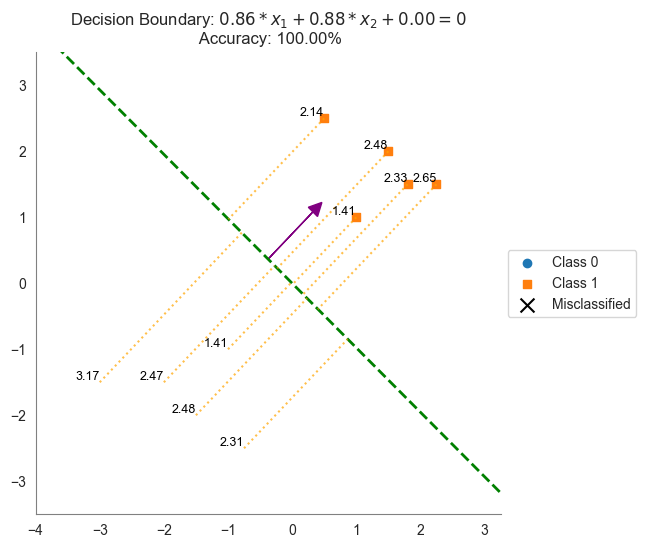
</div>
</div>
</section>
</section>
</section>
</section>

    <script type="text/x-thebe-config">
    {
        requestKernel: true,
        binderOptions: {
            repo: "binder-examples/jupyter-stacks-datascience",
            ref: "master",
        },
        codeMirrorConfig: {
            theme: "abcdef",
            mode: "python"
        },
        kernelOptions: {
            name: "python3",
            path: "./first-steps"
        },
        predefinedOutput: true
    }
    </script>
    <script>kernelName = 'python3'</script>

                </article>
              

              
              
              
              
                <footer class="prev-next-footer d-print-none">
                  
<div class="prev-next-area">
    <a class="left-prev"
       href="linear-classification.html"
       title="previous page">
      <i class="fa-solid fa-angle-left"></i>
      <div class="prev-next-info">
        <p class="prev-next-subtitle">previous</p>
        <p class="prev-next-title">Introduction to Linear Classification</p>
      </div>
    </a>
    <a class="right-next"
       href="../tutorials/tutorial5.html"
       title="next page">
      <div class="prev-next-info">
        <p class="prev-next-subtitle">next</p>
        <p class="prev-next-title">Tutorial 5: Linear Classifiers</p>
      </div>
      <i class="fa-solid fa-angle-right"></i>
    </a>
</div>
                </footer>
              
            </div>
            
            
              
                <dialog id="pst-secondary-sidebar-modal"></dialog>
                <div id="pst-secondary-sidebar" class="bd-sidebar-secondary bd-toc"><div class="sidebar-secondary-items sidebar-secondary__inner">


  <div class="sidebar-secondary-item">
  <div class="page-toc tocsection onthispage">
    <i class="fa-solid fa-list"></i> Contents
  </div>
  <nav class="bd-toc-nav page-toc">
    <ul class="visible nav section-nav flex-column">
<li class="toc-h2 nav-item toc-entry"><a class="reference internal nav-link" href="#helper-functions">Helper Functions</a></li>
<li class="toc-h2 nav-item toc-entry"><a class="reference internal nav-link" href="#random-search-a-baseline-approach">Random Search: A Baseline Approach</a></li>
<li class="toc-h2 nav-item toc-entry"><a class="reference internal nav-link" href="#perceptron-algorithm">Perceptron Algorithm</a></li>
<li class="toc-h2 nav-item toc-entry"><a class="reference internal nav-link" href="#comparing-decision-boundaries">Comparing Decision Boundaries</a><ul class="nav section-nav flex-column">
<li class="toc-h3 nav-item toc-entry"><a class="reference internal nav-link" href="#calculating-the-margin">Calculating the Margin</a></li>
</ul>
</li>
<li class="toc-h2 nav-item toc-entry"><a class="reference internal nav-link" href="#support-vector-machines-svms">Support Vector Machines (SVMs)</a><ul class="nav section-nav flex-column">
<li class="toc-h3 nav-item toc-entry"><a class="reference internal nav-link" href="#hinge-loss">Hinge Loss</a></li>
<li class="toc-h3 nav-item toc-entry"><a class="reference internal nav-link" href="#defining-the-svm-classifier-in-keras">Defining the SVM Classifier in Keras</a><ul class="nav section-nav flex-column">
<li class="toc-h4 nav-item toc-entry"><a class="reference internal nav-link" href="#step-1-define-the-model">Step 1: Define the Model</a></li>
<li class="toc-h4 nav-item toc-entry"><a class="reference internal nav-link" href="#step-2-compile-the-model">Step 2: Compile the Model</a></li>
<li class="toc-h4 nav-item toc-entry"><a class="reference internal nav-link" href="#step-3-train-the-model">Step 3: Train the Model</a></li>
<li class="toc-h4 nav-item toc-entry"><a class="reference internal nav-link" href="#make-predictions-using-the-model">Make Predictions using the Model</a></li>
</ul>
</li>
</ul>
</li>
</ul>
  </nav></div>

</div></div>
              
            
          </div>
          <footer class="bd-footer-content">
            
<div class="bd-footer-content__inner container">
  
  <div class="footer-item">
    
<p class="component-author">
By Eric Pacuit
</p>

  </div>
  
  <div class="footer-item">
    

  <p class="copyright">
    
      © Copyright 2023.
      <br/>
    
  </p>

  </div>
  
  <div class="footer-item">
    
  </div>
  
  <div class="footer-item">
    
  </div>
  
</div>
          </footer>
        

      </main>
    </div>
  </div>
  
  <!-- Scripts loaded after <body> so the DOM is not blocked -->
  <script defer src="../_static/scripts/bootstrap.js?digest=8878045cc6db502f8baf"></script>
<script defer src="../_static/scripts/pydata-sphinx-theme.js?digest=8878045cc6db502f8baf"></script>

  <footer class="bd-footer">
  </footer>
  </body>
</html>